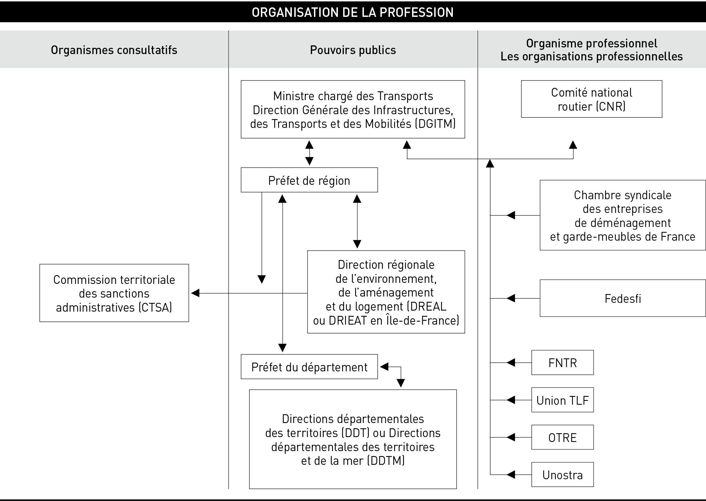

RÈGLES ADMINISTRATIVES
1
RÉGLEMENTATION DES TRANSPORTS ROUTIERS NATIONAUX
B 4
1.1 ORGANISATION OFFICIELLE DE LA PROFESSION
Le fonctionnement global du transport français s’intègre dans un processus de développement et d’évolutions réglementaires sur un plan communautaire. Si les règlements communautaires sont applicables de plein droit et de la même façon dans tous les pays de l’Union européenne, les directives communautaires, quant à elles, sont laissées, pour leurs mises en place effectives, à la discrétion de chaque pays pour tenir compte des spécificités ou des particularismes de chacun. En France, la mise en œuvre et le contrôle de la réglementation économique des transports ont nécessité la mise en place d’une organisation administrative sous la tutelle du ministre chargé des Transports, assisté de la Direction générale des infrastructures, des transports et de la mer.
Cette organisation comporte 3 volets :
– l’administration proprement dite, chargée de préparer et de publier les textes ;
– des organismes consultatifs et contentieux qui émettent des avis sur les textes à publier et sur leurs interprétations ;
– un organisme professionnel chargé de l’observation des prix et des coûts de transport et partant, d’élaborer des statistiques des bases tarifaires de référence.
Vous trouverez ci-dessous un tableau sous forme d’organigramme qui schématise cette organisation.
Nous vous conseillons de lire les pages suivantes qui définissent le rôle et les attributions de chaque organisme en vous référant à cet organigramme afin d’avoir une meilleure compréhension de l’ensemble.
1.1.1 Les pouvoirs publics
à l’échelon national, le ministre chargé des Transports, assisté de la Direction générale des infrastructures, des transports et de la mer :
– définit et met en œuvre la politique nationale des transports terrestres et maritimes ;
– signe tous les textes relatifs à la réglementation des transports.

Règles administratives
B 5
à l’échelon territorial, le préfet de région :
– met en œuvre la politique des transports de l’état dans la région ;
– décide de l’attribution de la capacité professionnelle et de l’inscription aux registres, doit se tenir informé des condamnations mentionnées au bulletin n° 2 du casier judiciaire ;
– prend des sanctions administratives…
Le préfet de région a, sous son autorité, une Direction régionale de l’environnement, de l’aménagement et du logement (Dreal). Ce service est habilité à délivrer des autorisations étrangères émanant de pays signataires d’accords bilatéraux avec la France, des licences communautaires, des autorisations Fit/CEMT au nom du ministre, et à faire procéder à des contrôles auprès des entreprises.
Les services transports de la Dreal sont chargés de la tenue du registre électronique national des entreprises de transport par route et de la délivrance des attestations de capacité professionnelle et du contrôle des entreprises sous l’autorité du préfet.
La Commission territoriale des sanctions administratives
Les commissions territoriales des sanctions administratives sont consultées pour avis par le préfet de région, préalablement au prononcé des sanctions encourues, par une entreprise, son représentant légal ou la personne qui exerce des fonctions de direction ou de gestionnaire de transport en son sein ou en exécution d’un contrat, auteur d’un manquement aux réglementations des transports, du travail, de la santé ou de la sécurité relatives aux transports routiers de marchandises.
Le préfet de région fixe le ressort des commissions territoriales des sanctions administratives (C. transp., art. R. 3452-3).
La commission territoriale des sanctions adminstratives se réunit sur convocation du préfet de région, selon un ordre du jour proposé par la Dreal, qui assure le secrétariat de cette commission sous l’autorité de son président.
Elle peut être réunie soit en formation plénière (en règle générale une fois par an), soit en formation transport de marchandises ou en formation transport de voyageurs, pour se prononcer sur les dossiers des entreprises infractionnistes. Il peut s’agir de retrait de titre administratif (temporaire ou définitif), d’immobilisation de véhicules (pour une durée de 3 mois au plus), de radiation du registre des transporteurs.
L’entreprise sanctionnée a deux possibilités de voies de recours : recours administratif (gracieux ou hiérarchique) et recours contentieux.
1.1.2 L’organisme professionnel
Le Comité national routier (CNR), comité professionnel de développement économique, a eu pour première mission la mise en place d’un observatoire des coûts de revient et des prix de vente des prestations de transport.
L’article R. 3441-20 du Code des transports, en vigueur depuis le 3 avril 2021, définit ses missions dans le domaine du transport public routier de marchandises et du transport public routier collectif de personnes, à l'exception des transports urbains et suburbains de personnes comme suit :
a) participer à l’observation et au suivi des aspects économiques du marché du transport routier de marchandises, notamment à travers l’analyse des coûts, et diffuser les informations qu’il collecte et les analyses économiques qu’il réalise ;
b) réaliser des travaux de recherche et des études socio-économiques concernant le marché des transports de marchandises et utiles à l’ensemble des professionnels du transport ;
c) mettre au point et diffuser des outils de gestion utiles aux transporteurs routiers ;
d) mener toute mission d’intérêt général pour la profession.
Le Comité national routier peut être saisi par le ministre chargé des Transports de toute demande s’inscrivant dans le cadre des missions définies ci-dessus. Le comité adresse au ministre chargé des Transports un rapport annuel sur son activité.
1.1.3 les organisations professionnelles
Composées de professionnels et gérées par eux, elles ont toutes pour mission, d’informer, conseiller, représenter et défendre les intérêts de leurs adhérents sur le plan national et international :
b La Fédération nationale des transports routiers (FNTR), créée en 1933, représente et défend les intérêts communs des entreprises de transport routier professionnel. Elle rassemble plus des deux tiers des entreprises adhérentes d’une organisation professionnelle du transport routier en France. La FNTR a une implantation locale forte et bien assise : 50 syndicats départementaux et régionaux. Seule organisation à avoir une représentation permanente à Bruxelles, elle est également membre de l’Iru (Union internationale des transports routiers). Elle est aussi l’interlocuteur privilégié des décideurs français et communautaires. Par ses actions de lobbying et ses campagnes de sensibilisation, elle valorise l’image de la profession.
La FNTR :
– assure l’information de ses adhérents sur des sujets aussi variés que les conditions de circulation, les évolutions règlementaires et fiscales ou encore le transport international ;
– agit au plan national et européen pour faire évoluer la législation et la réglementation en faveur des entreprises de transport routier ;
– suit et analyse l’évolution des principaux indicateurs économiques du secteur ;
– négocie avec les organisations syndicales les accords collectifs de branche comme les revalorisations salariales ;
– est le porte-parole du secteur auprès de la presse généraliste et spécialisée.
RÉGLEMENTATION DES TRANSPORTS ROUTIERS NATIONAUX
B 6
b La Chambre française des organisateurs commissionnaires de transport (CFOCT) a adhéré à la FNTR en tant que membre associé.
Cette adhésion repose sur une convergence d’analyse sur le rôle, la mission, la déontologie des organisations professionnelles qui travaillent pour les intérêts communs du plus grand nombre d’entreprises.
Elle réunit également les savoir-faire des deux organisations dans une communauté d’intérêt en faveur des métiers. La CFOCT rejoint ainsi, comme membre associé, la Chambre syndicale du déménagement (CSD), le Groupement national des transporteurs routiers des denrées et produits périssables (GRDP), le Groupement national des transports combinés (GNTC) et l’Association des commissionnaires de transport de la région Provence-Alpes-Côte d’Azur (APCT-Paca).
b La Fédération des entreprises de transport et logistique de France (Union TLF) est née, en novembre 1998, de la fusion de la Fédération française des organisateurs commissionnaires de transport (FFOCT) et de la Chambre des loueurs et transporteurs industriels (CLTI). L’Union TLF fédère des entreprises de toutes tailles : groupes, PME et TPE exerçant dans tous les métiers du transport et de la logistique :
– le transport routier de marchandises ;
– la messagerie rapide et express ;
– la location de véhicules industriels ;
– la logistique ;
– la commission de transport national et international ;
– la douane ;
– la commission de transport multimodal (ferroviaire, fluvial) ;
– la commission de transport aérien ;
– la commission de transport maritime.
Forte de cette représentativité dans le secteur du transport et de la logistique, l’Union TLF s’est imposée comme un acteur majeur du lobbying auprès des instances françaises, européennes et internationales.
Par son poids et sa représentativité auprès des administrations régionales, nationales, européennes et internationales l’Union TLF défend dans sa globalité le secteur du transport et de la logistique tout en prenant constamment le pouls de chacune des activités qu’elle représente.
L’Union TLF s’engage dans la recherche et le développement de solutions pour répondre aux préoccupations actuelles et futures des entreprises adhérentes.
b L’Union nationale des organisations des transporteurs routiers automobiles (Unostra) est née en 1956 d’un rapprochement entre la Fédération nationale des petits et moyens transporteurs et le « mouvement des artisans ». Avec ses 18 implantations régionales et départementales réparties sur le territoire métropolitain, elle apporte à ses entreprises adhérentes les services de proximité dont elles ont besoin, et entretient avec les autorités locales décentralisées (région, département, commune) et déconcentrées (préfecture, direction de l’équipement, etc.) une représentation permanente des entreprises de transport routier et de la profession dans son ensemble. Elle a adhéré à la FNTR en janvier 2010. Elle forme la branche TPE de la FNTR.
b L’Organisation des transports routiers européens (OTRE), est une fédération professionnelle fondée en 2000. Elle est composée d’entités territoriales OTRE et de structures sectorielles. Elle vise aussi bien les questions de proximité avec la représentation locale que les problèmes européens avec un projet à court terme d’association représentative à Bruxelles. Elle a une force de proposition et de revendication qui tient véritablement compte des réalités économiques de toutes ses entreprises qui la composent. L’OTRE est basée sur :
– une structure décentralisée ;
– l’écoute de sa base ;
– la démocratie de ses instances ;
– la transparence de ses décisions ;
– le souci d’efficacité.
1.2 Transport routier de marchandises, de déménagement
et de location de véhicules industriels avec conducteur
Dans le cadre de l’évolution permanente des secteurs des transports routiers de marchandises, de déménagement ou de location de véhicules industriels avec conducteur, la France, en cohérence avec le règlement CE n° 1071/2009, réglemente le développement de ces professions.
En France, la réglementation des transports routiers trouve son fonctionnement dans la partie législative I et III du Code des transports, entrée en vigueur le 1er décembre 2010 (Ord. n° 2010-1307, du 28 oct. 2010), qui a repris les dispositions de la Loi n° 82-1153 du 30 décembre 1982 d’orientation des transports intérieurs (Loti) qui fut le premier texte à définir une conception globale de la politique des transports, dans une logique de complémentarité et de coopération entre les modes et d’interopérabilité des systèmes.
Elle trouve sa substance dans la partie réglementaire III « Transport routier » du Code des transports, entrée en vigueur le 1er janvier 2017 (Décr. n° 2016-1150, 17 nov. 2016).
Toute personne physique1 ou morale qui souhaite exercer l’activité de transporteur pour le compte d’autrui et/ou de loueur de véhicules industriels avec conducteur ou de déménagement disposant d’un ou plusieurs véhicules motorisés doit :
– demander une autorisation d’exercer auprès du préfet de région ;
– être inscrite au Registre du commerce et des sociétés (RCS) ;
1. Le régime des auto-entrepreneurs n’est pas dérogatoire aux réglementations applicables à la profession de transporteur routier ci-dessous.
Règles administratives
B 7
– être inscrite au registre électronique national des entreprises de transport par route ;
– pouvoir, en cas de contrôle routier, justifier de son droit d’exécuter le transport par la présentation d’un titre d’exploitation.
b Transport
Le principe est que tous les transports de marchandises, de déménagement et de location de véhicules industriels avec conducteur sont réglementés. Mais des exceptions sont admises pour certains d’entre eux qui peuvent être effectués librement, sous réserve de satisfaire à quelques mesures de contrôle. Ces exceptions, au nombre de 8, sont définies aux articles R. 3211-2 à R. 3211-5 du Code des transports.
Pour mémoire, citons quelques cas principaux pour l’activité transport :
b Transport de véhicules accidentés ou en panne par véhicule spécialisé entre le lieu de l’accident ou de la panne et le lieu de réparation.
b Transport exécuté par des entreprises dont le transport n’est pas l’activité principale et qui sont liées par contrat en vue de l’exécution d’un travail commun ou de la mise en commun d’une partie de leur activité.
Dans les conditions suivantes :
– les véhicules utilisés appartiennent à ces entreprises ou ont été pris en location par elles ;
– les marchandises transportées sont la propriété de l’une des parties du contrat ;
– le transport est nécessaire à la réalisation, par l’une des autres parties contractantes, d’une activité de transformation, de réparation, de travail à façon ou de vente ;
– le transport est accessoire à l’activité principale définie par le contrat.
b Transport exécuté dans un rayon de 100 kilomètres autour de la commune dans laquelle ce transport a son origine :
– Au moyen de véhicules et matériels agricoles pour les besoins d’une exploitation agricole (C. transp., art. R. 311.1) ;
– Pour la collecte du lait lorsque cette activité est le complément d’une activité agricole.
b Transport de médicaments, d’appareils et d’équipements médicaux ainsi que d’autres articles nécessaires en cas de secours d’urgence, notamment en cas de catastrophes naturelles.
Tous les autres transports de marchandises sont réglementés. Il s’agit, en fait, des transports routiers pour compte d’autrui, encore appelés transports publics.
b Location
Il en va autant pour la location de véhicules industriels avec conducteur qui, comme le transport pour compte d’autrui, aboutit à la même réalisation concrète : le déplacement d’une marchandise.
Mais attention, bien garder à l’esprit que ces activités,
unifiées au plan réglementaire, sont totalement
différentes au plan juridique.
La location des véhicules pour le transport routier de marchandises est l’opération commerciale par laquelle un loueur met un véhicule en état de marche, avec le personnel de conduite, à la disposition exclusive de locataires qui l’utilisent pour exécuter des transports de marchandises. Chacun des locataires prend à son compte tous les déplacements en charge ou à vide du véhicule au cours de voyages ayant le même point pour origine et pour terme.
De cette définition découlent les caractéristiques principales de la location :
– il s’agit d’une mise à disposition d’un véhicule automobile en état de marche ;
– le véhicule est mis à disposition avec conducteur ;
– la location est exclusive, ce qui signifie que le véhicule doit être mis à la disposition d’un seul locataire à la fois ;
– le loueur fournit à son client des moyens de transport ; c’est son client qui est « transporteur », c’est-à-dire déplace les marchandises.
b Si le locataire
– réalise des transports pour son propre compte, il doit respecter les règles propres à cette activité ;
– est transporteur pour compte d’autrui, il doit disposer des inscriptions et titres d’exploitation correspondant à sa spécialité.
échappent à la réglementation, les opérations suivantes :
– location de véhicules industriels sans conducteur ;
– opérations de crédit-bail ;
– location des remorques et semi-remorques.
b Déménagement
C’est un ensemble d’opérations qui comprend au minimum le chargement du mobilier à l’ancien domicile, son transport et son déchargement au nouveau domicile.
Si les opérations se limitent au transport, il ne s’agit plus d’un déménagement, mais d’un simple contrat de transport. À l’inverse, si le mobilier est simplement déplacé, à l’intérieur d’un même immeuble, par exemple, il s’agira d’un contrat de louage d’industrie.
1.2.1 Conditions d’accès à la profession
C’est au travers de la partie réglementaire, troisième partie « Transport routier », Livre II du Code des transports que la France met en œuvre les décisions issues du règlement CE n° 1071/2009 concernant les conditions d’accès à la profession des entreprises de transport public routier de marchandises ou de déménagement et de location de véhicules industriels avec conducteurs destinés au transport de marchandises, utilisant des véhicules motorisés, y compris des véhicules à moteur dont la vitesse maximale autorisée ne dépasse pas 40 km/h, ainsi qu’aux entreprises qui souhaitent exercer ces activités. L’article R. 3211-7 du Code des transports précise que l’autorisation d’exercer la profession est délivrée à l’entreprise lorsqu’elle satisfait aux 4 exigences :
– d’établissement ;
– d’honorabilité ;
– de capacité financière ;
– de capacité professionnelle ;
prévues aux articles R. 3211-19 à R. 3211-42.
RÉGLEMENTATION DES TRANSPORTS ROUTIERS NATIONAUX
B 8
1.2.1.1 Gestionnaire de transport
En outre, l’entreprise qui exerce ou veut exercer la profession de transporteur public routier de marchandises, de déménagement ou de loueur de véhicules industriels avec conducteur destinés au transport de marchandises, doit désigner une personne physique, le gestionnaire de transport, résidant dans l’Union européenne, qui satisfait aux exigences d’honorabilité et de capacité professionnelles et qui dirige effectivement et en permanence ses activités de transport.
Les missions confiées au gestionnaire de transport incluent notamment la gestion de l’entretien des véhicules affectés à l’activité de transport de l’entreprise, la vérification des contrats et des documents de transport, la comptabilité de base, l’affectation des chargements ou des services aux conducteurs et aux véhicules et la vérification des procédures en matière de sécurité (C. transp., art. R. 3211-43).
Dans le cas d’un groupe d’entreprises de transport public routier de marchandises, de déménagement ou de location de véhicules industriels avec conducteur destinés au transport de marchandises, une personne physique, salariée ou dirigeant d’une entreprise du groupe, peut être nommée gestionnaire de transport d’une ou plusieurs entreprises du groupe. Le gestionnaire de transport doit justifier d’un lien effectif avec l’entreprise en qualité d’employé, de directeur, de propriétaire ou d’actionnaire de cette entreprise, ou comme dirigeant, ou en tant qu’entrepreneur individuel.
En dehors d’un groupement d’entreprises, si une société ne dispose pas d’un gestionnaire, elle peut désigner une personne physique qu’elle habilite par contrat à exercer pour son compte, les tâches de gestionnaire de transport.
Ce contrat précise les responsabilités que cette personne assume. Elle peut diriger au maximum les activités de transport :
} Soit de deux entreprises de transport public routier de marchandises, de déménagement ou de location de véhicules industriels avec conducteur destinés au transport de marchandises ;
} Soit d’une entreprise de transport public routier de marchandises, de déménagement ou de location de véhicules industriels avec conducteur destinés au transport de marchandises et d’une entreprise de transport public routier de personnes, dès lors qu’elle possède également l’attestation de capacité professionnelle afférente au transport public routier de personnes.
Dans l’un ou l’autre cas, le nombre cumulé de véhicules motorisés des deux entreprises est limité à vingt.
Pour l’application des dispositions du présent article, les entreprises prises en compte sont celles établies dans tout État membre de l’Union européenne.
Le gestionnaire de transport est mentionné au registre électronique national des entreprises de transport par route.
Le Décret n° 2016-1550 du 17 novembre 2016 précise les dispositions des articles R. 3211-43 à R. 3211-47, du Code des transports concernant les modalités de désignation du gestionnaire de transport.
1.2.1.2 Exigence d’établissement
Pour remplir la condition d’établissement, l’entreprise de transport doit satisfaire aux conditions fixées au paragraphe 1 de l’article 5 du règlement (CE) n° 1071/2009 du 21 octobre 2009 établissant des règles communes sur les conditions à respecter pour exercer la profession de transporteur par route, et abrogeant la directive 96/26/CE du Conseil. Elle doit disposer d’un établissement avec des locaux dans lesquels elle conserve les originaux des principaux documents de l’entreprise. Pour une entreprise n’ayant pas son siège en France, les documents doivent être conservés dans l’établissement principal situé sur le territoire national, lui même équipé des équipements administratifs et d’installations techniques.
Dans le cas contraire, le préfet de la région doit connaitre l’adresse des locaux où ces documents sont mis à disposition.
L’entreprise qui exploite un seul véhicule dont le poids maximum autorisé ne dépasse pas 2,5 tonnes, ou 3,5 tonnes lorsque le véhicule réalise ses transports sur le territoire national, n’a pas l’obligation de posséder d’installations techniques.
Le décret n° 2022-1147 du 10 août 2022 (NOR:TRET2127771D) précise les dispositions des articles R. 3211-19 à R. 3211-22 du Code des transports au regard de l’exigence d’établissement à laquelle doit satisfaire l’entreprise exerçant une activité de transporteur routier de marchandises.
1.2.1.3 Exigence d’honorabilité
(C. transp., art. R. 3211-24)
La condition d’honorabilité professionnelle doit être satisfaite par chacune des personnes suivantes :
1° l’entreprise, personne morale ;
2° les personnes physiques suivantes :
a) le commerçant, chef d’entreprise individuelle,
b) les associés et les gérants des sociétés en nom collectif,
c) les gérants des sociétés à responsabilité limitée,
d) les associés commandités et les gérants des sociétés en commandite,
e) le président du conseil d’administration, les membres du directoire et les directeurs généraux des sociétés anonymes,
f) le président et les dirigeants des sociétés par actions simplifiées ;
3° le gestionnaire de transport de l’entreprise.
Elles peuvent perdre l’honorabilité professionnelle lorsqu’elles ont fait l’objet (C. transp., art. R. 3211-27) :
1) Soit de plusieurs condamnations mentionnées au bulletin n° 2 du casier judiciaire prononçant une interdiction d’exercer une profession commerciale ou industrielle.
2) Soit de plusieurs condamnations mentionnées au bulletin n° 2 du casier judiciaire pour l’une des infractions suivantes :
} Infractions sanctionnées aux articles du Code pénal suivants :
– atteintes involontaires à la vie par comportement du conducteur (imprudence, maladresse…) qui a conduit à un homicide involontaire (221-6-1) ;
Règles administratives
B 9
– atteintes involontaires à l’intégrité de la personne ayant entraîné une incapacité totale de travail pendant plus de 3 mois (222-19-1) ;
– atteintes involontaires à l’intégrité de la personne ayant entraîné une incapacité totale de travail d’une durée inférieure ou égale à 3 mois (222-20-1) ;
– atteinte sexuelle commise par violence, contrainte, menace ou surprise sur la personne, exhibition sexuelle imposée à la vue d’autrui, harcèlement sexuel (222-23 à 222-31, 222-32, 222-33, 222-33-2) ;
– trafic de stupéfiants (222-34 à 222-42) ;
– mise en danger de la vie d’autrui (223-1) ;
– traite des êtres humains (mise à disposition à un tiers), proxénétisme, agression, mendicité, conditions de travail ou d’hébergement indignes, bande organisée (225-4-1 à 225-4-7) ;
– atteinte sexuelle sur mineur, corruption d’un mineur (227-22 à 227-27, 227-28-3) ;
– détournement au préjudice d’autrui des fonds, des fonds des valeurs (314-1 à 314-4) ;
– organisation frauduleuse de l’insolvabilité (314-7) ;
– recel et infractions assimilées ou voisines ; incapacité à justifier des ressources correspondant au train de vie, ou de l’origine d’un bien détenu, réalisation de crimes ou délits (321-6 à 321-12) ;
– sévices graves ou actes de cruauté envers les animaux (521-1).
} Infractions sanctionnées aux articles L. 654-1 à L. 654-15 du Code de commerce relatives à la banqueroute et la faillite personnelle.
} Infractions sanctionnées aux articles du Code de la route suivants :
– conduite sans permis ou malgré un retrait de permis ou malgré une suspension/rétention/annulation ou interdiction d’obtenir la délivrance du permis de conduire (L. 221-2, L. 223-5 et L. 224-16) ;
– refus de restituer le permis de conduire (L. 224-17) ;
– obtention, sous une fausse déclaration, du permis de conduire (L. 224-18) ;
– délit de fuite en cas d’accident (L. 231-1) ;
– refus d’obtempérer à une sommation de s’arrêter, de se soumettre à des vérifications sur le véhicule ou la personne (L. 233-1, L. 233-2 et L. 234-8) ;
– conduite sous l’empire d’un état alcoolique (L. 234-1) ;
– conduite en ayant fait usage de stupéfiant et refus de se soumettre à leur dépistage (L. 235-1 et L. 235-3) ;
– délits relatifs au dispositif de limitation de vitesse (L. 317-1) ;
– fausses plaques d’immatriculation, faux noms, faux domicile, défaut d’immatriculation du véhicule (L. 317-2 à L. 317-4) ;
– conducteur faisant obstacle à l’immobilisation du véhicule ou sa mise en fourrière (L. 325-3-1) ;
– entrave à la circulation (L. 412-1) ;
– récidive de grand excès de vitesse – excès supérieur ou égal à 50 km/h (L. 413-1).
} Infractions sanctionnées aux articles du Code du travail suivants :
– harcèlement moral et sexuel sur la personne
(L. 1155-2) ;
– non-respect des règles relatives à l’embauche et à l’emploi d’un travailleur étranger (L. 5224-1 à L. 5224-4) ;
– obstacle à l’accomplissement des devoirs d’un inspecteur ou d’un contrôleur du travail (L. 8114-1) ;
– recours au service d’un travailleur dissimulé, d’un mineur (L. 8224-1 à L. 8224-6) ;
– fourniture illégale de main-d’œuvre (L. 8234-1 et L. 8234-2) ;
– prêt de main-d’œuvre à but lucratif hors du cadre du travail temporaire (L. 8243-1 et L. 8243-2) ;
– emploi d’un étranger non muni d’une autorisation de travail salarié (L. 8256-1 à L. 8256-8).
} Infractions sanctionnées aux articles du Code des transports suivants :
– infractions sanctionnées aux articles L. 1252-5 à L. 1252-7 relatif au transport de matière dangereuse :
- transport routier de matière dangereuse dont le transport n’est pas autorisé,
- transport routier de matière dangereuse à l’aide de matériel n’ayant pas satisfait aux épreuves et visites obligatoires,
- stationnement ou circulation de véhicules soumis à signalisation de matière dangereuse sur une voie interdite en permanence au transport de matière dangereuse,
- transport routier de matière dangereuse sans l’avoir signalé, soit dans le document de transport, soit sur les emballages, récipients ou contenants, lorsque ceci est requis,
- transport routier de matière dangereuse sans aucune signalisation extérieure, lorsque celle-ci est requise,
- dirigeant d’une entreprise qui n’a pas désigné de conseiller à la sécurité dans une entreprise soumise à cette obligation ;
– prix anormalement bas ne couvrant pas les charges réelles (L. 3242-2) ;
– non-respect par le cocontractant des clauses de révision du prix du contrat (carburant, taxes) (L. 3242-3) ;
– non-respect par le donneur d’ordre de la rémunération du contrat de transport (L. 3242-4) ;
– refus de communiquer aux agents chargés du contrôle les contrats (L. 3242-5) ;
– falsification des documents de contrôle ou des données électroniques, fournir des faux renseignements sur les conditions de travail ; détérioration, emploi irrégulier ou modification du dispositif destiné au contrôle des conditions de travail ; non-installation du dispositif destinés au contrôle (L. 3315-4) ;
– conduite avec une carte conducteur non conforme ou n’appartenant pas au conducteur l’utilisant, ou sans carte insérée dans le tachygraphe (L. 3315-5) ;
– refus de présenter les documents ou les données électroniques signés, de communiquer les renseignements destinés au contrôle des conditions de travail ou obstacle au contrôle des conditions de travail (L. 3315-5) ;
– incitation par le dirigeant à commettre les faits sanctionnés aux articles L. 3315-2, L. 3315-4, L. 3315-4-1 et L. 3315-5 du Code des transports, par toute personne relevant de son autorité et contrôle (L. 3315-6) ;
– exercice de l’activité de transporteur, de déménageur et de loueur sans autorisation (L. 3452-6 1°) ;
RÉGLEMENTATION DES TRANSPORTS ROUTIERS NATIONAUX
B 10
– utilisation d’une autorisation d’exercer ou d’un titre transport, périmé, suspendu, ou déclaré perdu
(L. 3452-6 2°) ;
– refus d’exécuter une sanction administrative (L. 3452-6 3°) ;
– mise en circulation d’un véhicule pendant la période d’immobilisation administrative (L. 3452-6 4°) ;
– non-respect des dispositions applicables au cabotage (L. 3452-7) ;
– faux renseignements pour les conditions d’inscription au registre ou la délivrance des titres administratifs (L. 3452-9) ;
– refus de présenter les documents ou de communiquer les renseignements ou de laisser effectuer les contrôles prévus par les règlements (L. 3452-10).
} Infraction mentionnée au 5° du I de l’article L. 541-46 du Code de l’environnement relative à l’élimination des déchets et à la récupération des matériaux.
} Infractions mentionnées à l’article 1741 du code général des impôts.
3) Soit de plusieurs amendes pour les contraventions visées :
– à l’article R. 323-1 du Code de la route relatif au défaut de visite au contrôle technique ;
– aux articles R. 312-2 à R. 312-4 du Code de la route relatifs au poids et dimensions lorsque les infractions correspondent à un dépassement de masse maximale en charge autorisée de 20 % ou plus pour les véhicules dont le poids en charge autorisé est supérieur à 12 t et de 25 % ou plus pour les véhicules dont le poids en charge autorisé est inférieur à 12 t ;
– aux articles R. 1333-1 à R. 1333-3, R. 3315-7 et R. 3315-8 du Code des transports relatifs à la formation professionnelle initiale et continue des conducteurs de certains véhicules affectés aux transports routiers de marchandises et article R. 3315-11 du Code des transports relatif aux infractions aux obligations en matière de temps de conduite et de repos des conducteurs routiers (contravention de la 5e classe).
– à l’article R. 8114-2 du code du travail, entré en vigueur le 25 Avril 2022.
En cas de plusieurs condamnations pour les infractions mentionnées ci-dessus, le préfet de région apprécie le caractère proportionné ou non de la perte de l’honorabilité en fonction de l’incidence sur l’exercice de la profession.
Le préfet de région prononce la perte de l’honorabilité professionnelle après avis de la commission des sanctions administratives territorialement compétente régie par les dispositions des articles R. 3452-2 à R. 3452-24 du Code des transports.
Cette décision fixe la durée de la perte de l’honorabilité, qui ne peut être inférieure à une année à compter de la date de la décision du préfet de région, ni excéder deux ans lorsque la personne a été condamnée pour des délits ou des crimes.
Si le préfet de région conclut que la perte de l’honorabilité constituerait une mesure disproportionnée, il peut décider que l’honorabilité n’est pas remise en cause. Dans ce cas, les motifs qui sous-tendent cette décision sont inscrits dans le registre électronique national des entreprises de transport par route (C. transp., art. R. 3211-31). À l’expiration de la durée de la perte d’honorabilité, le préfet de région peut décider de restaurer l’honorabilité professionnelle du gestionnaire de transport dès que ce dernier a réussi l’examen de capacité professionnelle mentionné à l’article R. 3113-35 (entré en vigueur le 1er janvier 2022) postérieurement à la date de la décision de perte d’honorabilité.
1.2.1.4 Exigence de capacité financière
La capacité financière consiste pour l’entreprise à disposer des ressources financières nécessaires pour démarrer et exercer son activité. Elle satisfait à la condition de capacité financière lorsque celle-ci dispose chaque année de capitaux et de réserves ou de garanties (ne devant pas excéder la moitié du montant de la capacité financière exigible) d’un montant de (C. transp., art. R. 3211-32 et 33) :
– 1 800 € pour le premier véhicule et 900 € pour chacun des véhicules suivants motorisés n’excédant pas 3,5 t de PMA (y compris les 2 roues motorisées) ;
– 9 000 € pour le premier véhicule et 5 000 € pour chacun des véhicules suivants motorisés excédant 3,5 t de PMA.
Lorsque l’entreprise utilise des véhicules ne dépassant pas 3,5 tonnes de poids total maximum autorisé, et des véhicules de plus de 3,5 tonnes de poids maximum autorisé, la capacité financière exigée est de :
– 9 000 € pour le premier véhicule ;
– 5 000 € pour chacun des véhicules de plus de 3,5 tonnes suivants ;
– 900 € pour chacun des véhicules ne dépassant pas 3,5 tonnes.
Dans le département d’outre-mer, ces montants sont fixés à 600 € pour les véhicules n’excédant pas un PMA de 3,5 t et, pour les véhicules excédant cette limite, 6 000 € pour le premier véhicule et 3 000 € pour chacun des véhicules suivants (C. transp., art. R. 3511-6).
Les véhicules motorisés pris en compte pour ce calcul sont tous les véhicules utilisés par l’entreprise pour le transport public routier de marchandises, pour le déménagement ou pour la location de véhicules industriels avec conducteur destinés au transport de marchandises.
L’article R. 3211-35 du Code des transports énonce que pour attester de sa capacité financière, l’entreprise transmet, lors de sa demande initiale d’autorisation d’exercer la profession de transporteur public routier de marchandises, de déménagement, ou de loueur de véhicules industriels avec conducteur destinés au transport de marchandises, tous documents comptables, statuaires ou établis par des agents financiers ou organismes d’assurance agréés par l’Autorité de contrôle prudentiel et de résolution , justifiant de la mobilisation de capitaux et de réserves à hauteur de la capacité financière exigible.
Après la clôture de chaque exercice comptable, le service territorial compétent de l’État vérifie que l’entreprise
Règles administratives
B 11
dispose de la capacité financière requise, au regard des comptes annuels certifiés, visés ou attestés par un expert-comptable, un commissaire aux comptes, un centre de gestion agréé ou une association de gestion et de comptabilité, figurant dans la déclaration fiscale de l’entreprise, qui sont communiqués par l’administration fiscale, conformément à l’article L. 3113-1, au ministère chargé des transports.
Pour l’année de l’inscription de l’entreprise au registre national des entreprises de transport par route, en l’absence de comptes annuels certifiés, visés ou attestés par un expert-comptable, un commissaire aux comptes, un centre de gestion agréé ou une association des gestions et de comptabilité, le service territorial compétent de l’État accepte tous les documents établis par des agents financiers ou organismes d’assurance agréés par l’Autorité de contrôle prudentiel et de résolution attestant que l’entreprise dispose des montants fixés par l’article R. 3113-32.
L’entreprise est tenu d’adresser à la DREAL, le cas échéant, une garantie financière accordée par un établissement bancaire et d’assurance agréé peut compléter les capitaux propres dans la limite de 50 % du montant de la capacité financière.
Un dispositif spécifique est prévu à l’article R. 3211-35-2 du Code des transports pour la vérification de la capacité financière des micro-entreprises. L’entreprise qui n’est pas tenue de déposer une déclaration fiscale accompagnée de comptes annuels transmet au préfet de région, dans les 6 mois qui suivent la clôture de l’exercice comptable, ses comptes annuels établis dans les conditions prévues aux articles L. 123-12 à L. 123-23 du Code de commerce et certifiés, visés ou attestés par un expert-comptable, un commissaire aux comptes, un centre de gestion agréé ou une association de gestion et de comptabilité.
Pour toutes les entreprises de transport, à défaut de transmission des documents au regard des comptes annuels, et après une mise en demeure restée sans effet pendant trois mois suivant sa réception, le préfet de région peut prononcer une décision de suspension de l’autorisation d’exercer la profession de transporteur public routier.
Les documents au regard des comptes annuels doivent être conservés dans les locaux de l’entreprise pour être présentés à tout agent de l’État habilité à réaliser des contrôles.
Sur demande écrite de la DREAL dont elle relève, l’entreprise doit communiquer, dans un délai d’un mois à compter de la réception de la demande, les coordonnées complètes de la personne ou de l’entité ayant certifié, visé ou attesté ses comptes annuels.
La capacité financière donne lieu à un suivi vigilant de la part de l’administration. Devant être satisfaite en permanence, celle-ci est vérifiée, après inscription :
– lors de toute demande de copies conformes de licence de transport communautaire ou intérieur, formulée à titre de renouvellement ou d’extension de parc ;
– et en tout état de cause, après la clôture de chaque exercice comptable.
1.2.1.5 Exigence de capacité professionnelle
La preuve de l’aptitude est fournie par la possession d’une attestation de capacité professionnelle en transport routier de marchandises ou d’une attestation de capacité professionnelle en transport routier léger de marchandises dont doit être titulaire le gestionnaire de transport qui assure la direction permanente et effective de l’entreprise.
L’attestation de capacité professionnelle en transport routier de marchandises permet l’exercice des professions de transporteur public routier de marchandises, de déménagement, ou de loueur de véhicules industriels avec conducteur, à l’aide de tous véhicules de transport de marchandises alors que l’attestation de capacité professionnelle en transport routier léger de marchandises permet l’exercice des professions de transporteur public routier de marchandises, de déménagement, ou de loueur de véhicules industriels avec conducteur destinés au transport de marchandises au moyen exclusivement de véhicules d’un poids maximal autorisé. Ces deux attestations sont délivrées par le préfet de région.
L’attestation de capacité professionnelle en transport routier de marchandises
Elle concerne les entreprises qui utilisent tous types de véhicules de transport de marchandises
Elle est délivrée :
– de plein droit aux personnes titulaires d’un diplôme national ou visé par l’état, d’un titre universitaire, d’un certificat d’études ou d’un titre professionnel délivrés en France par les établissements d’enseignement supérieur ou les organismes habilités, qui impliquent la connaissance de toutes les matières énumérées à l’annexe I du règlement (CE) n° 1071/2009 précité. La liste de ces diplômes et titres est fixée par la décision du 9 février 2012 modifiée relative à la liste des diplômes, titres ou certificats permettant la délivrance, par équivalence, d’une attestation de capacité professionnelle permettant l’exercice de la profession de transporteur public routier (C. transp., art. R. 3211-38) ;
– aux personnes qui fournissent la preuve qu’elles ont dirigé de manière continue une entreprise de transport public routier de marchandises, de déménagement ou de location de véhicules industriels avec conducteur destinée au transport routier, dans un ou plusieurs États appartenant à l’Union européenne durant les 10 années précédant le 4 décembre 2009 (C. transp., art. R. 3211-38) ;
– aux personnes qui ont satisfait aux épreuves d’un examen écrit de capacité professionnelle portant sur les matières et selon les dispositions figurant à l’annexe I du règlement (CE) n° 1071/2009 précité (C. transp., art. R. 3211-37).
L’examen se compose :
– d’un Questionnaire à choix multiple (QCM) noté sur 100 portant sur diverses matières (éléments de droit civil, de droit social, de droit fiscal, de gestion commerciale et financière de l’entreprise, d’accès au marché, de
RÉGLEMENTATION DES TRANSPORTS ROUTIERS NATIONAUX
B 12
normes et exploitations techniques et de sécurité routière) ;
– d’une épreuve portant sur la gestion et l’exploitation de l’entreprise et composée de questions et exercices nécessitant une réponse rédigée notée également sur 100.
La durée totale des épreuves est de 4 h ; le barème global est de 200 points et l’admission est fixée au minimum à 120 points, avec un minimum de 50 points à l’épreuve de QCM et un minimum de 40 points à l’épreuve de questions rédigées.
L’attestation de capacité professionnelle en transport routier léger de marchandises
L’article R. 3211-40 du Code des transports indique que pour les entreprises utilisant exclusivement des véhicules dont le poids maximum autorisé ne dépasse pas 2,5 tonnes ou, s’ils sont utilisés exclusivement pour réaliser des opérations de transport routier sur le territoire national, 3,5 tonnes, l’exigence de capacité professionnelle est satisfaite lorsque le gestionnaire de transport mentionné à l’article R. 3211-43 est titulaire d’une attestation de capacité professionnelle en transport léger.
Elle est délivrée :
– aux personnes titulaires du baccalauréat professionnel transport, spécialité exploitation des transports (ancienne appellation), du baccalauréat professionnel « Organisation de transport de marchandises (OTM) » et du titre professionnel du ministère chargé de l’emploi « Exploitant en transport routier de marchandises (ETRM) » ;
– aux personnes qui fournissent la preuve qu’elles ont géré de manière continue une entreprise de transport public routier de marchandises durant 2 années sous réserve qu’elles n’aient pas cessé cette activité depuis plus de 10 ans ;
– aux personnes qui ont suivi une formation de 105 h auprès d’un organisme de formation agréé sanctionnée par un examen écrit obligatoire, intégré à la dernière demi-journée de formation, portant sur un référentiel de connaissances défini par le ministre chargé des Transports.
L’examen se compose :
– d’un Questionnaire à choix multiple (QCM) noté sur 100 portant sur diverses matières (éléments de droit civil, de droit social, de droit fiscal, de gestion commerciale et financière de l’entreprise, de réglementation nationale, de normes et exploitations techniques et de sécurité routière) ;
– d’une épreuve portant sur la gestion et l’exploitation de l’entreprise et composée de questions et exercices nécessitant une réponse rédigée notée également sur 100.
La durée totale des épreuves est de 3 h ; le barème global est de 200 points et l’admission fixée au minimum à 120 points, avec un minimum de 50 points au QCM et un minimum de 40 points à la réponse rédigée.
L’attestation de capacité professionnelle en transport routier de marchandises qui permet d’exercer la profession sans restriction d’activité dispense ses titulaires de l’obtention de l’attestation de capacité professionnelle en transport routier léger pour les activités effectuées avec des véhicules légers.
Formation complémentaire
Les personnes physiques titulaires d’une attestation de capacité professionnelle en transport routier de marchandises ou de l’attestation de capacité professionnelle en transport routier léger, qui n’ont pas géré une entreprise de transport de marchandises, de déménagement ou de location de véhicules industriels avec conducteur destinés au transport de marchandises, dans les 5 dernières années, peuvent être assujettis par le préfet de région à suivre une formation de 35 h dans un centre de formation habilité par celui-ci pour actualiser leurs connaissances avant de pouvoir être désignées gestionnaires de transport (C. transp., art. R. 3211-41).
1.2.2 demande d’autorisation
d’exercer la profession
L’autorisation d’exercer la profession de transporteur public routier peut être demandée sous format dématérialisé ou sous format papier, dans les conditions suivantes :
– sous format dématérialisé, à l’adresse suivante : https://demarches.developpement-durable.gouv.fr/ ;
– sous format papier :
a) au moyen du formulaire CERFA n° 16093 lorsque la demande est présentée par une entreprise unipersonnelle (EI, EURL, EIRL, SASU) dont le responsable légal associé unique est le gestionnaire de transport titulaire de la capacité professionnelle ou par une entreprise unipersonnelle bénéficiant d’un cas de dispense de capacité professionnelle ;
b) au moyen du formulaire CERFA n° 16094 lorsque la demande est présentée par une société bénéficiant ou non d’un cas de dispense de capacité professionnelle, ou lorsqu’elle est présentée par une entreprise unipersonnelle dont le responsable légal associé unique n’est pas le gestionnaire de transport titulaire de la capacité professionnelle.
La demande d’autorisation d’exercer la profession de transporteur public routier est accompagnée des pièces justificatives requises selon le cas, prévues aux annexes I et II de l’arrêté du 28 décembre 2011 modifié relatif à l’autorisation d’exercer la profession de transporteur public routier et aux modalités de la demande d’autorisation par les entreprises.
La demande effectuée sous format papier est adressée au préfet de la région où l’entreprise a son siège ou, pour une entreprise n’ayant pas son siège en France, son établissement principal, auprès de la direction régionale de l’environnement, de l’aménagement et du logement (DREAL), de la direction régionale et interdépartementale de l’équipement et de l’aménagement d’Île-de-France (DRIEA-IF), ou de la direction de l’environnement, de l’aménagement et du logement (DEAL) en outre-mer.
Le préfet de région dispose d’un délai qui n’excède pas 3 mois, éventuellement prorogeable de 1 mois dans
Règles administratives
B 13
l’hypothèse où le dossier présenté à l’appui de la demande s’avère incomplet, pour se prononcer sur cette demande. Le préfet de région délivre à l’entreprise une autorisation d’exercer la profession lorsqu’elle satisfait aux exigences d’établissement, d’honorabilité professionnelle, de capacité financière et de capacité professionnelle développées dans les paragraphes précédents (C. transp., art. R. 3211-7).
L’autorisation d’exercer permet l’inscription de l’entreprise au registre électronique national des entreprises de transport par route et la délivrance d’une licence communautaire ou d’une licence de transport intérieur (C. transp., art. R. 3211-12).
L’entreprise pouvant bénéficier d’une autorisation d’exercer la profession doit être inscrite soit au registre du commerce et des sociétés ou au répertoire des métiers (C. transp., art. R. 3211-8).
L’entreprise qui dispose d’une autorisation d’exercer la profession de transporteur public routier de marchandises, de déménagement ou de location de véhicules avec conducteur doit notifier au préfet de région, dans un délai de 28 jours, tout changement, y compris le changement de représentant légal de l’entreprise, de nature à modifier sa situation (C. transp., art. R. 3411-14).
L’autorisation est annulée (C. transp., art. R. 3211-13) :
– lorsque pour quelque motif que ce soit, cesse l’activité de transport, de déménagement ou de location ;
– lorsque disparaît l’établissement de l’entreprise dans la région ;
– lorsque l’entreprise ne dispose plus depuis 1 an de copies certifiées conformes de licence communautaire valide ou de copies certifiées conformes de licence de transport intérieur valide.
Retrait ou suspension de l’autorisation
(C. transp., art. R. 3211-14)
Lorsqu’une entreprise ne satisfait plus à l’une des quatre exigences d’accès à la profession ou lorsqu’elle a fourni des informations inexactes relatives à ces exigences, le préfet de région avise le responsable de l’entreprise de celle des exigences à laquelle son entreprise ne satisfait plus ainsi que des mesures susceptibles d’être prises à son encontre et, après l’avoir informé de la possibilité de présenter ses observations écrites ou orales, le cas échéant assisté par un conseil ou représenté par un mandataire de son choix, le met en demeure de régulariser sa situation dans les délais suivants :
1) un délai maximal de 9 mois en cas d’incapacité physique, ou de décès du gestionnaire de transport ;
2) un délai maximal de 6 mois en cas de cessation d’activité ou de perte d’honorabilité du gestionnaire de transport ou du responsable de l’entreprise, ou lorsque le gestionnaire de transport a fait l’objet d’une condamnation prononçant une interdiction d’exercer une profession commerciale ou industrielle ou qu’il ne peut se prévaloir de sa capacité professionnelle en raison d’une déclaration d’inaptitude ;
3) un délai maximal de 6 mois pour régulariser sa situation au regard de l’exigence d’établissement ;
4) un délai maximal de 6 mois afin de démontrer que son entreprise sera en mesure de satisfaire à nouveau l’exigence de capacité financière de façon permanente dans un délai raisonnable, compte tenu de la situation de l’entreprise.
Lorsque le responsable de l’entreprise ne s’est pas conformé à la mise en demeure à l’issue de l’un ou l’autre des délais cités aux paragraphes précédents, le préfet de région peut suspendre, pour une durée maximale de 6 mois, l’autorisation d’exercer la profession de transporteur public routier de marchandises ou de déménagement, ou de loueur de véhicules industriels avec conducteur destinés au transport de marchandises. à l’issue de ce délai, si l’entreprise ne satisfait toujours pas aux exigences, le préfet de région peut retirer l’autorisation d’exercer la profession (C. transp., art. R. 3211-15).
Lorsque le responsable de l’entreprise ne s’est pas conformé à la régularisation de sa capacité financière à l’issue du délai de 6 mois, le préfet de région peut (C. transp., art. R. 3211-16) :
1) lorsque le responsable de l’entreprise ne fournit aucun élément, lui retirer l’autorisation d’exercer la profession de transporteur public routier ;
2) lorsque le responsable de l’entreprise fournit des éléments relatifs à l’évolution de la situation financière de l’entreprise au regard de l’exigence de capacité financière, ajuster le nombre de copies certifiées conformes de la licence détenues par l’entreprise ou lui retirer l’autorisation d’exercer la profession de transporteur public routier de marchandises, si les éléments fournis ne sont pas susceptibles de permettre à l’entreprise de satisfaire à l’exigence de capacité financière.
La décision de suspension de l’autorisation d’exercer la profession entraîne le retrait temporaire de la licence communautaire et de la licence de transport intérieur et celui des copies certifiées conformes correspondantes.
à défaut de restitution par l’entreprise de ces documents dans le délai de 15 jours à compter de la réception de la décision de suspension, le préfet de région lui retire l’autorisation d’exercer la profession et la radie du registre électronique national des entreprises de transport par route.
Lorsque l’autorisation d’exercer la profession donnée à l’entreprise a été suspendue et que celle-ci satisfait à nouveau à toutes les exigences d’accès à la profession, le préfet de région rapporte la décision de suspension de l’autorisation d’exercer la profession et restitue à l’entreprise sa licence et un nombre de copies certifiées conformes de licence correspondant au montant de sa capacité financière (C. transp., art. R. 3211-17).
La décision de retrait de l’autorisation d’exercer la profession entraîne la radiation de l’entreprise du registre électronique national des entreprises de transport par route ainsi que le retrait de la licence communautaire ou de la licence de transport intérieur et celui des copies certifiées conformes correspondantes (C. transp., art. R. 3211-18).
RÉGLEMENTATION DES TRANSPORTS ROUTIERS NATIONAUX
B 14
1.2.3 INSCRIPTION AU REGISTRE ÉLECTRONIQUE NATIONAL DES ENTREPRISES DE TRANSPORT
PAR ROUTE
Les activités de transport routier public de marchandises, de déménagement ou de location de véhicules industriels avec conducteur destinés au transport de marchandises ne peuvent être exécutées que par des entreprises inscrites au registre électronique national des entreprises de transport par route tenu par les services de l’État, compétents en matière de transport dans la région et qui au préalable, ont obtenu une autorisation d’exercer la profession auprès du préfet de région.
} Les entreprises ayant leur siège en France sont inscrites au registre par le préfet de la région dans laquelle les entreprises ont leur siège.
} Les entreprises n’ayant pas leur siège en France sont inscrites au registre par le préfet de la région où leur établissement principal est situé. Celui-ci mentionne également au registre l’adresse du siège de l’entreprise.
Dans les deux cas, les établissements secondaires des entreprises situés sur le territoire national sont mentionnés au registre par le préfet de la région où l’entreprise est inscrite ainsi que, respectivement, par chacun des préfets des régions où ces établissements sont implantés (C. transp., art. R. 3211-9).
L’inscription au registre est réalisée sur un support électronique dans les conditions prévues par la loi n° 78-17 du 6 janvier 1978 modifiée relative à l’informatique, aux fichiers et aux libertés, conformément à l’application des articles 16 à 18 du règlement (CE) n° 1071/2009 (C. transp., art. R. 3211-10).
1.2.4 TITRES ADMINISTRATIFS et activité transport et location
Toute personne physique ou morale qui exerce les activités de transporteur routier de marchandises, de déménagement ou de loueur de véhicules industriels avec conducteur destinés au transport de marchandises doit pouvoir justifier de son droit d’exécuter la prestation en cause notamment en présentant, en cas de contrôle, un titre administratif.
L’arrêté du 16 novembre 1999 modifié décrit avec précision les titres administratifs de transport nécessaires.
Les entreprises de transport public routier de marchandises, de déménagement ou de location de véhicules industriels avec conducteur destinés au transport de marchandises disposant d’un ou plusieurs véhicules motorisés y compris les 2 roues (la location sans conducteur étant hors du champ de la réglementation des transports) qui ont obtenu l’autorisation d’exercer la profession de transporteur public routier et sont inscrites en France au registre électronique national des entreprises de transport par route, détiennent soit une licence communautaire, soit une licence de transport intérieur. Le nombre de copies conformes de ces licences sera délivré au vu de leur capacité financière. La présence à bord du véhicule d’une copie conforme est obligatoire.
Lorsqu’une entreprise prend en location un véhicule avec conducteur, le véhicule doit être, en outre, muni d’une copie conforme numérotée de la licence détenue par l’entreprise de location.
La régularité de la situation administrative de l’entreprise au regard des conditions d’exercice de la profession de transporteur public de marchandises, de déménagement ou de loueur de véhicules industriels avec conducteur se prouve par la présentation, en cas de contrôle, par le conducteur, du ou des titre(s) administratif(s) de transport nécessaire(s) (C. transp., art. R. 3411-13, 1°).
Le ou les titre(s) administratif(s) délivré(s) à l’entreprise inscrite au registre national des entreprises de transport routier sont déterminés en fonction de la capacité financière de celle-ci et selon le Poids maximum autorisé (PMA) des véhicules concernés.
Le PMA diffère selon qu’il s’agit d’un véhicule isolé, d’un ensemble de véhicules ou d’un véhicule articulé :
– le PMA d’un véhicule isolé est égal au PTAC ;
– le PMA d’un ensemble composé d’un porteur et d’une remorque équivaut à la plus petite des deux valeurs : PTRA du véhicule moteur ou somme des PTAC des véhicules composant l’ensemble en respectant les normes du Code de la route ;
– le PMA d’un véhicule articulé équivaut à la plus petite des deux valeurs : PTRA du véhicule moteur ou somme du PV du véhicule moteur + PTAC de la semi-remorque, en respectant les normes du Code de la route.
(voir les différents calculs du PMA à la Partie F : 1.1.2 Poids et charges).
Les modalités de délivrance de la licence communautaire ou de transport intérieur ainsi que les copies certifiées conformes sont prévues par l’article R. 3211-12 du Code des transports et par l’arrêté du 16 novembre 1999 relatif aux titres administratifs de transport modifié.
1.2.4.1 La licence communautaire
L’article R. 3211-12 du Code des transports, modifié par le Décret n° 2021147 du 10 août 2022, stipule que l’inscription au registre électronique national des entreprises de transport par route donne lieu à la délivrance par le préfet de région des licences suivantes :
1) Une licence communautaire lorsque l’entreprise utilise un ou plusieurs véhicules dont le poids maximum autorisé excède 3,5 tonnes ;
2) Une licence communautaire comportant la mention « inférieur ou égal à 3,5 tonnes » lorsque l’entreprise utilise pour des transports internationaux dans l’Espace économique européen un ou plusieurs véhicules dont le poids maximum utilisé est supérieur à 2,5 tonnes et ne dépasse pas 3,5 tonnes.
Les licences communautaires sont :
– gratuite ;
– incessibles ;
Règles administratives
B 15
– délivrées par la DREAL au transporteur établi en France qui a son siège social dans la région concernée, et satisfaisant aux quatre critères d’accès à la profession (établissement, capacité professionnelle, honorabilité, capacité financière) ou établi dans l’un des pays membres ;
– valables 10 ans maximum (renouvelables).
La DREAL délivre à l’entreprise autant de copies conformes que de véhicules déclarés. La communication des immatriculations des véhicules utilisés en temps réel est obligatoire. Les copies conformes sont numérotées.
L’original de la licence est conservé dans l’établissement de l’entreprise mentionné à l’article R. 3211-20. Il doit être restitué au préfet de région, ainsi que l’ensemble de ses copies certifiées conformes, à la fin de la période de validité de la licence ou lorsque l’autorisation d’exercer la profession a été suspendue ou retirée.
1.2.4.2 La licence de transport intérieur
L’inscription au registre électronique national des entreprises de transport par route donne lieu à la délivrance par le préfet de région d’une licence de transport intérieur lorsque l’entreprise utilise pour des opérations de transport exclusivement réalisées sur le territoire national un ou plusieurs véhicules n’excédant pas cette limite ou lorsqu’elle utilise exclusivement des véhicules circulant sous couvert d’un certificat WW DPTC.
Les conditions de délivrance et d’utilisation de la licence de transport intérieur sont identiques à celles de la licence communautaire.
1.2.5 contrôle et sanctions
Pour assurer le respect et l’application effective des diverses réglementations en vigueur, un certain nombre de mesures existe sur le plan national. Tel que nous l’avons mentionné au début de cette partie, c’est désormais le Code des transports qui précise le cadre des contrôles et des sanctions pénales.
1.2.5.1 Contrôle
En matière de transport routier, les agents habilités à constater les infractions sont définis principalement par les articles L. 1451-1 et L. 3315-1 du Code des transports.
Outre les officiers et agents de police judiciaire, d’autres personnes sont habilitées à constater les infractions :
– les inspecteurs et les contrôleurs du travail, ainsi que les agents habilités à exercer leurs fonctions dans certaines branches professionnelles ;
– les fonctionnaires ou agents de l’État, chargés du contrôle des transports terrestres placés sous l’autorité du ministre chargé des Transports ;
– les agents des douanes ;
– les agents publics ayant qualité pour constater les délits ou les contraventions prévus par le Code de la route ;
– les agents ayant qualité pour constater les infractions en matière de circulation prévues par le Code de la route ;
– les fonctionnaires assermentés désignés par le ministre chargé des Transports et commissionnés à cet effet.
La liste des contraventions que chaque catégorie d’agents sera habilitée à constater est fixée dans la partie réglementaire du Code de la route (art. R. 130-1 et suivants).
1.2.5.2 Sanctions
Outre des sanctions civiles, les infractions à la discipline professionnelle peuvent donner lieu à deux sortes de sanctions.
1.2.5.2.1 Les sanctions pénales1
En fonction de leur gravité, les infractions sont qualifiées de contravention, délit ou crime. Cette dernière qualification ne trouve pas à s’appliquer en matière d’infractions à la discipline professionnelle :
} Les contraventions relèvent du tribunal de police ; il en existe 5 classes et elles donnent lieu à des peines d’amendes, à l’exclusion de toute peine d’emprisonnement ; ces peines varient de 11 à 1 500 €, dans le cas de récidive l’amende d’une contravention de 5e classe peut être doublée et portée à 3 000 € (voir pour le transport : C. transp., art. R. 3452-44, R. 3452-45, R. 3452-46-1, R. 3452-47).
} Les délits relèvent du tribunal correctionnel et leurs auteurs encourent des peines d’amende et/ou d’emprisonnement dont le maximum est fixé pour chaque infraction, le tribunal n’étant lié par aucune peine minimale afin de permettre de l’individualiser et de la personnaliser (voir pour le transport : C. transp., art. L. 3452-6 à L. 3452-10).
Les articles R. 121-1 à R. 121-5 du Code de la route sont applicables aux employeurs de salariés affectés à la conduite de véhicules de transport routier de personnes ou de marchandises et aux donneurs d’ordres aux transporteurs routiers de marchandises (C. transp., art. R. 3452-48).
1.2.5.2.2 Les sanctions administratives
Indépendamment des sanctions pénales, certaines infractions graves ou répétées à la réglementation des transports peuvent donner lieu à des sanctions administratives :
– immobilisation d’un ou plusieurs véhicules de l’entreprise, pour une durée maximale de 3 mois, faisant suite à deux condamnations pour délits commis en matière de réglementation des transports, de conditions de travail ou d’hygiène et de sécurité (C. transp., art. L. 3452-2) ;
– retrait temporaire ou définitif des copies conformes de licences communautaires ou de licences de transport intérieur en cas de délit, d’infractions de 5e classe ou de contraventions répétées de 3e classe (C. transp., art. L. 3452-1). Cependant, le retrait définitif ne peut intervenir qu’après une première décision de retrait temporaire de titres administratifs intervenue au cours des 5 années précédentes (C. transp., art. R. 3242-5) ;
– retrait de l’autorisation d’exercer la profession de transporteur routier, lorsqu’il n’est plus satisfait à l’une des conditions requises lors de la demande d’autorisation d’exercer et radiation au registre électronique
1. La responsabilité pénale des cadres et dirigeants en transport routier de marchandises, Catherine Suter, Éditions Celse, 2012.
RÉGLEMENTATION DES TRANSPORTS ROUTIERS NATIONAUX
B 16
national des entreprises de transport par route (C. transp., R. 3211-15) ;
– perte de l’honorabilité professionnelle si le gestionnaire ou l’entreprise de transport a fait l’objet, dans un ou plusieurs états membres, d’une condamnation pénale grave ou qu’on lui a infligé une sanction pour une des infractions les plus graves aux réglementations communautaires, visées à l’annexe IV du règlement (CE) n° 1071/2009 ;
– interdiction de cabotage pour une durée qui ne peut excéder 1 an pour un transporteur, non résident qui a commis en France, à l’occasion d’un transport de cabotage, une infraction grave au droit de l’Union européenne dans le domaine des transports routiers (C. transp., art. L. 3452-5-1) ;
– retrait de l’autorisation d’exercer la profession de transporteur routier, lorsque l’entreprise ne dispose plus depuis 1 an de copies conformes de licence communautaire valide ou de copies conformes de licence de transport intérieur valide, et radiation au registre électronique national des entreprises de transport par route (C. transp., art. R. 3211-13).
La décision du préfet doit faire l’objet d’un affichage dans les locaux de l’entreprise sanctionnée et publiée dans deux journaux régionaux ou locaux diffusés dans le département du siège de l’entreprise, aux frais de celle-ci (C. transp., art. R. 3242-9).
Les sanctions, notamment les mesures de retrait et d’immobilisation, sont prononcées par le préfet de région, qu’après avis de la Commission des sanctions administratives (C. transp., art. L. 3452-3).
1.3 SOUS-TRAITANCE ET COMMISSION DE TRANSPORT
1.3.1 SOUS-TRAITANCE
La sous-traitance est l’opération par laquelle un transporteur ou un commissionnaire confie l’ensemble de l’exécution d’un trafic à un autre transporteur.
En application des articles L. 3224-1 et R. 3224-1 du Code des transports, les transporteurs routiers peuvent dans certaines conditions recourir à la sous-traitance sans avoir la qualité de commissionnaire.
Il s’agit notamment :
b Des entreprises qui, en raison d’une surcharge temporaire d’activité (pointe de trafic), se trouvent dans l’impossibilité d’exécuter les contrats de transport dont elles sont titulaires, par leurs propres moyens. Cependant, le montant des opérations sous-traitées ne doit pas dépasser 15 % du chiffre d’affaires annuel de l’activité transport routier. L’entreprise communique au moyen du formulaire CERFA n° 14605 toutes informations relatives à ses opérations de sous-traitance sur demande écrite du service territorial de l’Etat dont elle relève pour son inscription au registre électronique national des entreprises de transport par route.
b Des entreprises de déménagement pour les opérations de déménagement, y compris le transport, confiées à une autre entreprise de déménagement.
b Des entreprises qui recourent aux opérateurs de transport combinés, pour l’activité correspondant aux parcours initiaux et terminaux.
Préalablement à la conclusion du contrat de sous-traitance, ces entreprises doivent s’assurer que le sous-traitant est autorisé à effectuer le transport en cause.
Le recours à la sous-traitance, du fait de son côté pratique a malheureusement, dans certains cas, débouché sur des situations critiques et critiquables où la combinaison de marges financières et marge de sécurité dans l’exécution du transport devenait incompatible.
C’est une des raisons pour lesquelles des règles de fonctionnement et des sanctions claires sont spécifiées respectivement dans les articles L. 3221-3, L. 3242-4 et R. 3242-14 du Code des transports (sanction liée à la non-présentation du document justifiant du prix conclu).
Sera puni d’une amende de 90 000 € la méconnaissance, pour le donneur d’ordre (affréteur, transporteur ou loueur) des obligations résultant des dispositions en matière de rémunération du transporteur ou du loueur avec conducteur par un prix insuffisant pour couvrir à la fois le coût de revient du véhicule, des charges occasionnées par le respect des obligations légales en matière sociale et de sécurité, enfin pour les entreprises unipersonnelles, la rémunération du chef d’entreprise (C. transp., art. L. 3242-4).
Ces dispositions s’appliquent aux contrats concernant les transports de marchandises entre un point d’origine et un point de destination situé sur le territoire national, ainsi qu’aux contrats comportant à la fois des opérations de transport intérieur et de transport international. Elles concernent (C. transp., art. L. 3221-3) :
– les contrats par lesquels un transporteur routier de marchandises ou un commissionnaire confie, à un transporteur routier de marchandises, l’exécution d’une ou plusieurs opérations de transport « nécessitant l’utilisation intégrale d’au moins un véhicule » ;
– les contrats par lesquels un transporteur routier de marchandises ou un loueur de véhicules confie, à un loueur de véhicules avec conducteur, l’exécution d’une ou plusieurs opérations de mise à disposition d’un véhicule avec conducteur.Par ailleurs, chacun des contractants devra être en mesure de produire « un document » justificatif du prix conclu (courriel, télécopie ou facture). L’absence de ce document est passible d’une peine d’amende prévue pour les contraventions de la 5e classe (C. transp., art. R. 3242-14).
Règles administratives
B 17
1.3.2 CONDITIONS D’ACCÈS À LA PROFESSION
DE COMMISSIONNAIRE DE TRANSPORT
Selon l’article R. 1422-2 du Code des transports, l’inscription au registre des commissionnaires est subordonnée à 2 conditions :
– capacité professionnelle ;
– honorabilité.
Remarque
Dans le but de libéraliser la circulation des services et dans la mesure où ceux-ci sont ouverts à la concurrence, la directive européenne n° 2006/123/CE a interdit l’obligation de constituer ou de participer à une garantie financière et de ce fait, facilité voire harmonisé la liberté d’exercice du commissionnaire de transport au sein de l’UE, conduisant ainsi à la suppression de la capacité financière.
1.3.2.1 INSCRIPTION À UN REGISTRE
(C. transp., art. R. 1422-1)
Les commissionnaires doivent être inscrits à un registre des commissionnaires de transport tenu par les services compétents de l’état en matière de transport dans la région (direction régionale de l’environnement, de l’aménagement et du logement ou DREAL).
Chaque commissionnaire est inscrit au registre de la région où il a son siège ou à défaut son établissement principal. L’inscription est prononcée par le préfet de cette région et donne lieu à la délivrance d’un CIRC, certificat d’inscription au registre des commissionnaires de transport.
Les divers établissements de l’entreprise sont mentionnés au registre de la région où elle est inscrite ainsi qu’à celui de chacune des régions dans lesquelles ses établissements sont installés.
L’entreprise inscrite au registre des commissionnaires de transport doit principalement (C. transp., art. R. 1432-1) :
– fournir au transporteur les renseignements nécessaires à l’établissement du document de transport ;
– conserver un registre des opérations d’affrètement dont il a confié l’exécution à un transporteur public ;
– être en mesure de présenter les documents relatifs aux opérations de sous-traitance effectués pendant les 2 derniers exercices précédents l’exercice en cours.
Enfin, l’article R. 1422-10 indique que toute entreprise radiée du registre des commissionnaires de transport, de ceux de transporteurs publics de marchandises ou de voyageurs par route, ou de loueurs de véhicules industriels avec conducteur, prononcée moins de 2 ans auparavant, ne peut bénéficier de l’inscription au registre.
1.3.2.2 LA CAPACITÉ PROFESSIONNELLE OBLIGATOIRE
(C. transp., art. R. 1422-3 à R. 1422-5 et R. 1422-11 à 1422-20)
La personne qui assure la direction permanente et effective soit de l’entreprise, soit, au sein de celle-ci, l’activité de commissionnaire de transport doit être titulaire d’une attestation de capacité professionnelle.
Cette attestation est délivrée par le préfet de région aux personnes répondant à l’une des conditions suivantes :
1) de plein droit aux personnes titulaires d’un diplôme de l’enseignement supérieur sanctionnant une formation juridique, économique, comptable, commerciale ou technique qui permette d’assurer la direction d’une entreprise commissionnaire de transport ou d’un diplôme d’enseignement technique sanctionnant une formation aux activités du transport (pour connaître les diplômes concernés, voir le Titre II, art. 5 et 6 de l’arrêté du 21 décembre 2015 et les arrêtés le modifiant).
Depuis le 01/04/2022, une redevance couvrant les frais d’organisation de l’examen est perçu préalablement à l’inscription (C. transp., art. R. 1422-4-1).
2) aux personnes ayant réussi les épreuves d’un examen écrit (les modalités de l’examen sont décrites en détail dans le titre Ier, art. 1 à 4 de l’arrêté du 21 décembre 2015).
3) aux personnes demandant la reconnaissance de qualifications professionnelles acquises suivant les modalités ci-dessous (voir le Titre III de l’arrêté du 21 décembre 2015) :
– exercice des activités à titre indépendant ou en qualité de dirigeant d’entreprise1 :
– soit pendant 5 années consécutives ;
– soit pendant 2 années consécutives, lorsque l’intéressé prouve qu’il a reçu, pour cette activité, une formation préalable d’au moins 3 ans ;
– soit pendant 3 années consécutives, lorsque l’intéressé prouve qu’il a reçu, pour cette activité, une formation préalable d’au moins 2 ans ;
– soit pendant 3 années consécutives, lorsque l’intéressé prouve qu’il a exercé cette activité à titre salarié pendant 2 ans au moins.
– exercice des activités à titre salarié :
– soit pendant 2 années consécutives, lorsque l’intéressé prouve qu’il a reçu, pour cette activité, une formation préalable d’au moins 3 ans ;
– soit pendant 3 années consécutives, lorsque l’intéressé prouve qu’il a reçu, pour cette activité, une formation préalable d’au moins 2 ans.
Remarque
L’article R. 1422-5 précise que lorsque le titulaire de l’attestation décède ou se trouve dans l’incapacité légale de gérer ou de diriger l’entreprise, le préfet peut maintenir l’inscription de celle-ci au registre pendant une période maximale de 1 an à compter du jour du décès ou de l’incapacité, sans qu’il soit justifié de la capacité professionnelle d’une autre personne.
Ce délai peut, à titre exceptionnel, être prorogé de 6 mois par décision motivée du préfet.
Attention, ces fonctions ne doivent pas avoir pris fin depuis plus de 10 ans à la date de la demande d’attestation de capacité, et le demandeur doit justifier des connaissances et des compétences requises.
1.3.2.3 L’HONORABILITÉ
(C. transp., art. R. 1422-6 à R. 1422-8)
La condition d’honorabilité est remplie dès lors que le demandeur ne se trouve pas frappé d’une interdiction d’exercer une profession industrielle et commerciale résultant d’une condamnation, déchéance ou sanction.
Les conditions d’honorabilité s’étendent aux représentants légaux de la personne assurant la direction effective de l’entreprise CT. Pour satisfaire à la condition d’honorabilité, la personne ne doit pas faire l’objet d’une condamnation
RÉGLEMENTATION DES TRANSPORTS ROUTIERS NATIONAUX
B 18
au bulletin n° 2 de son casier judiciaire ou d’une condamnation prononcée par une juridiction étrangère et inscrite dans un document équivalent, entraînant une interdiction d’exercer une profession commerciale ou industrielle.
En outre, elle ne doit pas faire l’objet de plus d’une condamnation inscrite au bulletin n° 2 du casier judiciaire pour l’un ou l’autre des délits suivants.
b Code de la route :
– conduite sans permis ou malgré un retrait de permis ou malgré une suspension/rétention/annulation ou interdiction d’obtenir la délivrance du permis de conduire (C. route, art. L. 221-2, L. 223-5, L. 224-16) ;
– refus de restituer le permis de conduire (C. route, art. L. 224-17) ;
– obtention, sous une fausse déclaration, du permis de conduire (C. route, art. L. 224-18) ;
– délit de fuite en cas d’accident (C. route, art. L. 231-1) ;
– comportement en cas de contrôle routier (C. route, art. L. 233-1, L. 233-2, L. 234-8) ;
– conduite sous influence de l’alcool (C. route, art. L. 234-1) ;
– délits relatifs au dispositif de limitation de vitesse (C. route, art L. 317-1) ;
– défaut d’immatriculation du véhicule (C. route, art. L. 317-2 à L. 317-4) ;
– conducteur faisant obstacle à l’immobilisation du véhicule ou sa mise en fourrière (C. route, art. L. 325-3-1) ;
– entrave à la circulation (C. route, art. L. 412-1).
b Code du travail :
– fourniture illégale de main-d’œuvre (C. trav., art. L. 8231-1) ;
– prêt de main-d’œuvre à but lucratif hors du cadre du travail temporaire (C. trav., art. L. 8241-1 et L. 8241-2) ;
– recours au service d’un travailleur dissimulé (C. trav., art. L. 8221-1 et L. 8221-2) ;
– exécution d’un travail dissimulé (C. trav., art. L. 8221-3 à 8221-5) ;
– emploi d’un étranger non muni d’une autorisation de travail salarié (C. trav., art. L. 5221-8 et L. 8251-1) ;
– obstacle à l’accomplissement des devoirs d’un inspecteur ou d’un contrôleur du travail (C. trav., art. L. 8114-1).
b Code du transport :
– faux renseignements à l’occasion d’enquêtes relatives aux conditions d’inscription au registre (C. transp., art. L. 1452-2) ;
– exercice de la profession sans autorisation (C. transp., art. L. 1452-3) ;
– refus de présenter les documents ou de communiquer les renseignements ou de laisser effectuer les contrôles prévus par les règlements (C. transp., art. L. 1452-4) ;
– falsification des documents ou des données électroniques, de fournir de faux renseignements, de détériorer, d’employer irrégulièrement ou de modifier des dispositifs de contrôle ou de ne pas avoir procédé à l’installation de ces dispositifs (C. transp., art. L. 3315-4) ;
– non-respect des temps de repos hebdomadaire prévus par la réglementation sociale européenne et système de rémunération encourageant les infractions à cette réglementation (C. transp., art. L. 3315-4-1) ;
– conduite avec une carte conducteur non conforme ou n’appartenant pas au conducteur l’utilisant, ou sans carte insérée dans le chronotachygraphe (C. transp., art. L. 3315-5) ;
– infractions relatives au transport de marchandises dangereuses :
– transport ferroviaire, routier ou fluvial de marchandises dangereuses dont le transport n’est pas autorisé (C. transp., art. L. 1252-51°) ;
– transport ferroviaire, routier ou fluvial de marchandises dangereuses à l’aide de matériels n’ayant pas satisfait aux épreuves et visites obligatoires (C. transp., art. L. 1252-52°) ;
– stationnement ou circulation de véhicules soumis à signalisation de marchandises dangereuses sur une voie interdite en permanence au transport de ces marchandises (C. transp., art. L. 1252-53°) ;
– transport ferroviaire, routier ou fluvial de marchandises dangereuses sans l’avoir signalé, soit dans le document de transport, soit sur l’emballage, récipients ou contenants, lorsque ceci est requis (C. transp., art. L. 1252- 54°) ;
– transport ferroviaire, routier ou fluvial de marchandises dangereuses sans aucune signalisation extérieure, lorsque celle-ci est requise (C. transp., art. L. 1252-55°) ;
– dirigeant d’une entreprise qui n’a pas désigné de conseiller à la sécurité dans une entreprise soumise à cette obligation (C. transp., art. L. 1252-6) ;
– rémunération d’un contrat à un prix ne couvrant pas les charges, amortissements, frais de route… chacun des contractants devant être en mesure de produire un document justifiant du prix conclu pour l’exécution des opérations prévues (C. transp., art. L. 3242-2 et L. 3242-4).
Remarque
Le préfet de région peut prononcer la perte d’honorabilité si la personne fait l’objet de condamnation pour ces infractions. Il appréciera le caractère proportionné ou non de la perte de l’honorabilité professionnelle en fonction de l’incidence sur l’exercice de la profession. La durée de cette perte ne peut excéder 3 ans (C. transp., art R. 1422-8-1 et 8-2).
Les différents contrats
applicables au
transport routier
de marchandises et leurs documents
2
Les différents contrats applicables au transport routier de marchandises et leurs documents
B 22
2.1 LE CONTRAT DE TRANSPORT DE MARCHANDISES
Toutes les fois qu’un transporteur professionnel accepte de transporter des marchandises, il conclut avec son « donneur d’ordre » un contrat de transport.
b Qu’est-ce qu’un contrat de transport ?
Le contrat de transport est une convention par laquelle un transporteur professionnel s’engage à déplacer des marchandises d’un point à un autre, contre rémunération, selon un mode de transport déterminé, dans un délai fixé par un texte légal ou réglementaire, par la convention des parties ou par l’usage.
Le déplacement des marchandises doit constituer l’objet principal de la convention. Les éléments essentiels du contrat de transport sont donc :
– le déplacement des marchandises ;
– la rémunération du transporteur ;
– le mode de transport choisi : fer, route, etc. ;
– le délai de livraison.
b Cadre juridique du contrat de transport
Comme tous les contrats, le contrat de transport est d’abord régi par le Code civil :
– les articles 1101 à 1369 traitent des contrats et des obligations conventionnelles en général ;
– les articles 1782 à 1786 se rapportent plus particulièrement au contrat de transport.
Les règles générales et particulières du Code civil sont précisées par le Code de commerce et ses articles L. 133-1 à L. 133-9 qui traitent du voiturier (transporteur), auxquels s’ajoutent les articles L. 132-3 à L. 132-9 relatifs aux commissionnaires de transport (voir annexe 1).
En plus de ces règles qui s’appliquent à tous les contrats de transport, s’ajoutent également les dispositions des articles L. 1432-4 et L. 1432-12 du Code des transports. Ces mêmes articles prévoient l’établissement par voie réglementaire de contrats types, à caractère supplétif, applicables de plein droit, en totalité ou en partie, en cas d’absence de convention écrite entre les parties.
Ainsi, il existe un contrat type « général » pour les transports publics routiers de marchandises par application de l’article L. 1432-4 du Code des transports ; il est référencé à l’article D. 3222-1 du Code des transports qui renvoie aux dispositions de l’annexe II de la troisième partie réglementaire du Code des transports (voir annexe 2). D’autre part, il existe des contrats types spécifiques :
1. Transport de fonds et de valeurs (C. transp., art. D. 3222-6, annexe VI de la partie réglementaire III).
2. Transports d’animaux vivants (C. rur., art. D. 212-78, annexe I au livre II).
3. Transports sous température dirigée (C. transp., art. D. 3222-5, annexe V de la partie réglementaire III).
4. Transports en citernes (C. transp., art. D. 3222-2, annexe III de la partie réglementaire III).
5. Transports de véhicules roulants (C. transp., art. D. 3222-7, annexe VII de la partie réglementaire III).
6. Transports d’objets indivisibles (C. transp., art. D. 3222-3, annexe IV de la partie réglementaire III).
7. Location d’un véhicule industriel avec conducteur (C. transp., art. D. 3223-1, annexe VIII de la partie réglementaire III).
à ces sept contrats types s’ajoute le contrat type sous-traitance (C. transp., art. D. 3224-3- Annexe IX de la partie réglementaire III) qui peut, selon les cas, s’adjoindre à l’un des contrats types proposés par la loi et le contrat type de commission de transport (C. transp., annexe de l’article D. 1432-3).
Le contrat de déménagement est soumis au régime du contrat de transport (sauf cas particuliers, comme par exemple, le délai pour confirmation des réserves).
Nous allons étudier les règles du contrat en suivant son déroulement :
– formation du contrat ;
– responsabilité d’exécution ;
– fin du contrat.
2.1.1 Formation du contrat de transport
2.1.1.1 Caractères du contrat
b Le contrat de transport porte sur un envoi.
L’envoi est la quantité de marchandises, emballage et support de charges compris, mis effectivement, au même moment, à la disposition d’un transporteur ou d’un commissionnaire de transport et dont le transport est demandé par un même donneur d’ordre pour un même destinataire d’un lieu de chargement unique à un lieu de déchargement unique et faisant l’objet d’un même contrat de transport. Cette mise à disposition doit permettre au transporteur l’enlèvement immédiat de l’envoi dans sa totalité.
b Le contrat de transport fait intervenir au moins 3 personnes :
– l’expéditeur (ou le donneur d’ordre) ;
– le transporteur ;
– le destinataire.
Le contrat est généralement conclu entre deux personnes : l’expéditeur et le transporteur. Le destinataire, bien que n’ayant pas conclu le contrat, est considéré comme « partie » au contrat.
b Le contrat de transport est un contrat consensuel, c’est-à-dire qu’il est formé juridiquement par le seul consentement des parties.
La formation du contrat résulte donc de la rencontre d’une offre de transporter et de l’acceptation de cette offre. L’accord qui résulte de la rencontre de l’offre de transport avec la demande doit respecter 3 étapes successives dans sa phase pré-contractuelle.
Ces étapes vont de la négociation à la conclusion du contrat et sont indispensables à la bonne réalisation du contrat.
Les différents contrats applicables au transport routier de marchandises et leurs documents
B 23
Quelles sont ces étapes ?
1re étape :
l’identification claire de la demande du client
Au travers de cette étape, le transporteur doit obtenir de son client l’ensemble des informations préalables nécessaires à la bonne exécution du contrat de transport.
Ces différentes informations sont précisées dans « les obligations de l’expéditeur » (voir ci-après dans ce chapitre).
Cette étape doit permettre au transporteur de vérifier la faisabilité de l’opération sur le plan technique d’une part et d’autre part sur le plan réglementaire.
Sur ce deuxième point, il s’agit principalement :
– du respect du règlement communautaire n° 561/2006 sur les temps de conduite et de repos et du règlement (UE) n° 165/2014 sur l’utilisation du tachygraphe, appareil permettant d’enregistrer les temps de conduite et de repos (ces points sont développés dans la partie Réglementation et gestion sociale de ce guide) ;
– du respect du Code de la route et en particulier des limitations de vitesse (celles-ci sont traitées dans la partie Sécurité de ce guide) ;
– du respect des articles L. 3411-1 et R. 3411-13 du Code des transports sur l’obligation de posséder les titres d’exploitation nécessaires à l’exécution de la prestation transport.
La non-conformité à ces obligations est très sévèrement sanctionnée.
2e étape :
la détermination du prix de vente de la prestation
En possession des différentes informations fournies par son client, le transporteur doit établir un prix de vente correspondant à la juste rémunération des différentes opérations liées à la prestation. Sur ce point le Code des transports précise, à l’article L. 3221-2 :
« Toute opération de transport public routier de marchandises est rémunérée sur la base :
– des prestations effectivement accomplies par le transporteur et ses préposés ».
On comprend ici la nécessité d’avoir une définition la plus précise possible des opérations constitutives de la prestation. Ainsi par « prestations effectivement accomplies », on entend la prise en compte des prestations annexes telles que les opérations de manutention au chargement ou au déchargement (si celles-ci n’incombent pas à l’origine au transporteur).
« – des durées pendant lesquelles le véhicule et son équipage sont à disposition en vue du chargement et du déchargement ».
Il s’agit ici pour le transporteur de déterminer au cours de la négociation avec son client les délais d’attente « raisonnables » au-delà desquels tous temps supplémentaires feront l’objet d’une facturation complémentaire.
Le dépassement des durées de réalisation des opérations de chargement et de déchargement par rapport à celles qui avaient été acceptées par le cocontractant ouvre droit à un complément de rémunération lorsque ce dépassement n’est pas imputable au fait du transporteur (C. transp., art. L. 3222-5, Contrat type général annexé à l’article D. 3222-1 du C. transp., art. 11 et 17).
L’article R. 3221-1 du Code des transports relatif aux opérations de transport impliquant plusieurs opérations successives de chargement ou de déchargement précise que si les durées de ces opérations de chargement et de déchargement ne sont pas supérieures à 30 minutes, elles feront l’objet d’une évaluation et d’une rémunération globale pour la totalité de l’opération de transport (sauf convention particulière entre les parties). Si ces durées excédent 30 minutes, il sera procédé au décompte réel des durées pendant lesquelles le véhicule et son équipage sont à disposition. Pour l’application de ces dispositions, le document de suivi (présenté plus loin dans ce chapitre) doit être signé par chacun des remettants successifs (ou son représentant) sur les lieux de prise en charge et par chacun des destinataires successifs (ou son représentant) sur les lieux de livraison. Si une opération de transport nécessite plusieurs rotations, le document de suivi sera signé lors de la dernière rotation (C. transp., art. R. 3221-2).
« – de la durée nécessaire pour la réalisation du transport dans les conditions compatibles avec le respect des réglementations de sécurité, telles qu’elles résultent notamment de l’article L. 1611-1 » du Code des transports.
Si la prestation transport est d’assurer le déplacement d’une marchandise d’un point A à un point B, elle correspond également à la mise à disposition d’un véhicule et d’un conducteur. Celui-ci doit exécuter son activité, en relation directe avec le domaine public, dans des conditions de sécurité telles qu’il ne risque pas de mettre en danger la vie d’autrui et la sienne. Pour cela, il doit respecter les règles issues du règlement communautaire et du Code de la route. Le Code pénal institue, au travers de ces articles 223-1 et 223-2, le délit de mise en danger de la vie d’autrui. Ce délit est sanctionné par une peine d’emprisonnement de 1 an et d’une amende de 15 000 €.
« – des charges de carburant nécessaires à la réalisation de l’opération de transport ».
L’article L. 3222-1 du Code des transports dispose que le transporteur doit mentionner dans le contrat de transport les charges de carburant nécessaires à la réalisation de l’opération de transport et dans le cas d’un fonctionnement de groupes frigorifiques autonomes. De même, cet article instaure un mécanisme de répercussion des variations du prix du gazole sur le prix du transport facturé aux chargeurs, en tenant compte, en l’absence d’accord des parties, de l’évolution d’un indice officiel.
Plus précisément, le mécanisme envisage 2 cas :
– lorsque les charges de carburant nécessaires à la réalisation de l’opération de transport et dans le cas d’un
Les différents contrats applicables au transport routier de marchandises et leurs documents
B 24
fonctionnement de groupes frigorifiques autonomes figurent dans le prix mentionné au contrat, en cas de variation du poste entre la commande « transport » (le jour où les parties se mettent d’accord sur la prestation) et sa réalisation (livraison), le prix est revu de plein droit (C. transp., art. L. 3222-1) ;
– à défaut de stipulations contractuelles identifiant les charges de carburant, celles-ci sont déterminées, au jour de la commande de transport, par référence au prix du gazole publié par le Comité national routier et à la part des charges de carburant nécessaires à la réalisation de l’opération de transport et dans le cas d’un fonctionnement de groupes frigorifiques autonomes dans le prix du transport, telle qu’établie dans les indices synthétiques du Comité national routier. Le prix du transport initialement convenu est révisé de plein droit en appliquant a ces charges de carburant la variation de l’indice gazole utilisé pour l’opération de transport et pour le fonctionnement de groupes frigorifiques autonomes publié par le Comité national routier sur la période allant de la date de la commande de l’opération de transport à sa date de réalisation (C. transp., art. L. 3222-2).
Dans tous les cas, la facture doit faire apparaître les charges de carburant supportées par l’entreprise pour la réalisation de l’opération de transport.
Le cocontractant du transporteur routier qui méconnaît les mécanismes de répercussion de variation de prix du gazole encourt une amende de 15 000 € (C. transp., art. L. 3242-3).
3e étape : la conclusion du contrat
Par la prise en compte des différents paramètres le transporteur établira un devis qu’il devra envoyer à son client, et pour lequel, celui-ci doit impérativement donner son accord. Par son article L. 3222-4, le Code des transports précise :
« – en vue de l’exécution d’un contrat de transport public routier de marchandises, le cocontractant de l’entreprise de transport est tenu, préalablement à la présentation du véhicule au chargement, de transmettre à celle-ci, par écrit ou par tout autre procédé permettant la mémorisation, les informations nécessaires à l’exécution du contrat, la liste des prestations annexes convenues ainsi que son acceptation des différentes durées prévues pour la réalisation du contrat et des conditions de rémunération des différentes opérations.Les prestations annexes sont les prestations autres que la conduite du véhicule, la préparation de celui-ci aux opérations de chargement et de déchargement et la mise en œuvre des matériels spécialisés attachés au véhicule. »
Ainsi, le bon de commande/devis (voir annexe 3) reprendra toutes les opérations correspondant à la réalisation de la prestation :
– l’identité des parties (donneur d’ordre/transporteur et destinataire) ;
– la description précise de la marchandise et de son conditionnement ;
– les lieux, dates, heures, durées d’attente, conditions particulières pour la prise en charge et la livraison ;
– les caractéristiques du véhicule ;
– la durée du parcours dans des conditions normales de sécurité ;
– l’ensemble des prestations annexes prévues ;
– le prix et les conditions de paiement.
L’acceptation du bon de commande/devis doit être exigée par le transporteur car elle représente l’accord conclu et la reconnaissance par le client des différentes conditions d’exécution ainsi que la rémunération des différentes opérations. Lors de l’exécution de la prestation, si des prestations annexes non prévues au contrat de transport sont effectuées, celles-ci ouvrent droit, selon l’article L. 3222-5 du Code des transports, à un complément de rémunération.
La facture mentionne le numéro du bon de commande lorsqu’il a été préalablement établi par l’acheteur (C. com, art. L. 441-9).
Nota : après sa conclusion, le contrat de déménagement peut cependant ne pas être exécuté en cas d’exercice d’un droit de repentir ou d’une faculté de résiliation. L’article L. 221-18 du Code de la consommation donne la possibilité, en cas de contrat conclu à distance, à la suite d’un démarchage téléphonique ou de vente à domicile, au client de renoncer au contrat dans les 14 jours de sa conclusion.
2.1.1.2 Matérialisation du contrat
Pour que la responsabilité du transporteur puisse être engagée, il faut prouver l’existence d’un contrat de transport et en déterminer les règles particulières.
Dans le cas du transport routier de marchandises, la preuve est facilitée par l’existence de documents relatifs à :
– l’exécution des conditions prévues dans le cadre du devis accepté par le client, il s’agit du document de suivi ;
– l’accompagnement de la marchandise : une lettre de voiture et un état récapitulatif (si besoin) ;
– la réalisation de la mission donnée au conducteur de transporter une marchandise : il s’agit de l’ordre de mission (facultatif).
2.1.1.2.1 Le document de suivi
L’article L. 3222-5 du Code des transports précise :
« L’exécution des prestations prévues au contrat donne lieu à l’établissement par le transporteur d’un document qui est rempli au fur et à mesure de l’opération de transport…/… ». De même l’arrêté du 9 novembre 1999 modifié relatif aux documents de bord lui consacre son article 11 (voir annexe 5).
Ce document, qui suivra pas à pas l’exécution des conditions réelles des opérations, devra se trouver dans le véhicule durant tout le temps de réalisation de la prestation transport.
Le conducteur devra mentionner sur ce document :
– les dates et heures réelles d’arrivée et de départ de son véhicule, tant au lieu de chargement qu’au lieu de déchargement ;
– les prestations annexes effectuées qu’elles aient été prévues ou non lors de la conclusion du contrat.
Les différents contrats applicables au transport routier de marchandises et leurs documents
B 25
Si des prestations annexes, non prévues initialement dans le contrat, sont effectuées par le conducteur, elles devront faire l’objet d’une facturation complémentaire.
Par ailleurs, l’article L. 3222-6 du Code des transports précise que l’exécution de ces prestations annexes non prévues engage la responsabilité de l’entreprise bénéficiaire de la prestation en cas de dommages.
Le document de suivi doit être signé par le remettant ou son représentant sur le lieu de chargement et par le destinataire ou son représentant sur le lieu de déchargement. L’article L. 3222-5 du Code des transports précise que le refus non motivé de signature engage la responsabilité des personnes visées ci-dessus.
Ce document de suivi fait foi jusqu’à preuve contraire des modalités d’exécution du contrat.
En fait, la lettre de voiture et, s’il y a lieu, l’état récapitulatif (voir point 2.1.1.2.2 ci-dessous) peuvent être conçus pour tenir lieu de document de suivi, ce qui dispense le transporteur de la création d’un document supplémentaire.
L’article L. 3242-1 du Code des transports précise : l’absence de document de suivi à bord du véhicule entraîne l’immobilisation immédiate de celui-ci et de son chargement dans les cas suivants :
– dépassement de la vitesse autorisée de plus de 20 km/h ;
– ou dépassement de la conduite journalière autorisée de plus de 20 % ;
– ou réduction à moins de 6 h du repos journalier.
2.1.1.2.2 Lettre de voiture (voir exemples annexe 4)
Tout contrat de transport routier de marchandises intérieur ou international, exécuté par une entreprise résidant ou non en France donne lieu, avant l’exécution du transport et dans les conditions fixées ci-après, à l’établissement d’une lettre de voiture dont au moins un exemplaire doit se trouver à bord du véhicule (C. com., art. L. 132-8 et L. 132-9).
La lettre de voiture ainsi que l’état récapitulatif peuvent être établis :
– soit sur support papier, au moins un exemplaire de chaque document devant se trouver à bord du véhicule ;
– soit sur support électronique, dès lors que ces documents peuvent être transmis ou communiqués dans les conditions ci-dessous, chaque document étant constitué uniquement par un support électronique se trouvant à bord du véhicule, notamment téléphone intelligent, tablette ou ordinateur.
Lors d’un contrôle sur route ou sur un lieu de chargement ou de déchargement, la lettre de voiture électronique et l’état récapitulatif doivent pouvoir être transmis immédiatement à l’agent de contrôle par tout moyen électronique de transmission et de conservation des données.
Dans le cas où l’agent de contrôle ne dispose pas de moyen de réception adéquat, ou en cas de difficulté de transmission électronique, le transporteur s’assure que la transmission ou la communication de la lettre de voiture électronique doit pouvoir être réalisée, suivant les modalités indiquées par cet agent, au moyen de tout format de transmission électronique ou de communication numérique (Arr., 09 nov. 99, relatif aux documents de transport ou de location devant se trouver à bord des véhicules de transport routier de marchandises, art. 4 (voir annexe 5)).
La lettre de voiture est de forme libre. Elle doit comporter au minimum les renseignements suivants :
} Date de son établissement.
} Nom, adresse et numéro Siren ou n° d’identification intracommunautaire du transporteur.
} Date de la prise en charge de la marchandise.
} Nature et quantité, ou poids, ou volume de la marchandise pour les lots groupés, ces informations peuvent être fournies dans un état récapitulatif.
} Nom de l’expéditeur ou du remettant.
} Adresse complète du lieu de chargement.
} Nom du destinataire.
} Adresse complète du lieu de déchargement.
b Si le contrat prévoit, pour une même nature de marchandises plusieurs opérations successives de chargement ou de déchargement entre même expéditeur et même destinataire il peut être établi pour l’ensemble des opérations, les documents suivants :
– une seule lettre de voiture au minimum par jour en faisant figurer la quantité ou le poids ou le volume estimé de la marchandise transportée ;
– un état récapitulatif mentionnant par opération et s’il y a lieu pour chaque lot ou colis, la quantité ou le poids ou le volume de la marchandise transportée.
b Pour ce qui concerne une opération de transport réalisé pour le compte d’expéditeurs ou de destinataires multiples. Il peut être établi, pour cette opération, les documents suivants :
– une lettre de voiture comme précédemment mais précision faite à la date de prise en charge, de l’heure de la première prise en charge ;
– un état récapitulatif comportant pour chaque lot ou colis transporté lors de cette opération, les renseignements prévus.
Lors du contrôle sur route et sauf en cas de transports de matières dangereuses et transports de déchets, l’entreprise dont le véhicule n’est pas muni de l’état récapitulatif requis peut le produire dans les 3 jours francs suivant ce contrôle.
La lettre de voiture peut contenir les mentions spécifiques du document de suivi, ce qui dispense le voiturier de la création de documents spécifiques.
2.1.1.2.3 Attestation de conducteur
L’attestation de conducteur pays tiers est exigée quand les communautaires emploient, pour un transport international ou de cabotage sous licence communautaire un ressortissant hors EEE (voir Partie C, chapitre 1, 1.1.2 : Attestation de conducteur « pays tiers »).
2.1.2 exécution du contrat de transport
2.1.2.1 Obligations des parties
En l’absence de convention écrite (C. transp., art. L. 1432-4) on appliquera les contrats types. Les obligations
Les différents contrats applicables au transport routier de marchandises et leurs documents
B 26
ci-dessous reprennent les dispositions du contrat type applicable aux transports publics routiers de marchandises pour lequel il n’existe pas de contrat type spécifique dénommé dans la profession : « contrat type général » annexé à l’article D. 3222-1 du Code des transports (C. transp., annexe II de la troisième partie réglementaire et en annexe 2 de cette partie du guide).
2.1.2.1.1 Obligations de l’expéditeur
① Fournir préalablement à l’exécution de la prestation de transport, par écrit ou tout autre moyen électronique de transmission et de conservation des données :
b Les informations relatives à la marchandise, sa prise en charge et sa livraison :
} La description de la marchandise :
– poids, volume, composition et conditionnement, type de support de charge ;
– nature très exacte et caractéristiques (matières dangereuses, température dirigée, autres) ;
– la déclaration de valeur et/ou le souhait d’une assurance spécifique (intérêt spécial à la livraison) ;
– le contre-remboursement (prestation annexe).
} Le lieu de prise en charge et de destination et les conditions de réalisation :
– noms et adresses complètes, ainsi que les numéros de téléphone, de télécopie, l’adresse électronique de l’expéditeur, du destinataire, du donneur d’ordre, et des lieux de chargement et de déchargement, lorsque ces derniers diffèrent de ceux indiqués ci-dessus ;
– date, heure, conditions particulières (accessibilité des lieux, prescriptions de sécurité, etc.) ;
– durées prévues d’attente au chargement et au déchargement, durée prévue des prestations annexes.
} Le type de matériel et les équipements particuliers souhaités.
} Le nombre de sangles et pour quel type de bien.
b Les informations relatives au mode de port : port dû ou port payé.
b La liste des prestations annexes autres que la conduite, la préparation du véhicule aux opérations de chargement et de déchargement, la mise en œuvre des matériels spécialisés attachés au véhicule.
b Son acceptation des différentes durées prévues (délai du parcours dans des conditions normales de sécurité et temps liés à l’attente et à la réalisation des prestations annexes) et des conditions de rémunération des différentes opérations.
② Informer le transporteur des particularités non apparentes de la marchandise et de toutes données susceptibles d’avoir une incidence sur la bonne exécution du contrat de transport.
③ Emballer, conditionner et étiqueter la marchandise.
④ Respecter les éventuelles réglementations particulières applicables à la marchandise (titres de mouvement, marchandises dangereuses…).
⑤ Remettre aux lieu, jour et heure prévus le tonnage convenu.
⑥ Procéder au chargement, au calage et à l’arrimage pour les envois de 3 t et plus.
⑦ Ne pas immobiliser le véhicule au-delà du délai de chargement fixé, soit par l’accord conventionnel écrit, soit par un contrat type. Si le chargement n’a pas commencé à l’expiration des temps d’attente, le transporteur est en droit de refuser la prise en charge sans devoir d’indemnité.
Durée de mise à disposition du véhicule-chargement
|
Envois de moins |
Durée de mise |
||
|
Moins de 100 kg |
15 min |
||
|
Plus de 100 kg |
30 min |
||
|
Envois égaux |
Rendez-vous respecté |
Plage horaire respectée |
Autres |
|
Compris entre 3 et 10 t |
1 h |
1 h 30 |
2 h |
|
Supérieurs à 10 t |
1 h |
2 h |
3 h |
En cas de rendez-vous et/ou de plage horaire non respectés, les durées de mises à disposition sont suspendues jusqu’à l’heure d’ouverture le premier jour suivant.
⑧ Veiller à la rédaction du document d’accompagnement de la marchandise et le signer.
⑨ Signer le document de suivi.
⑩ Acquitter le prix des opérations constituant la prestation transport en cas de port payé. Il est à noter que toute prestation supplémentaire au contrat initial doit faire l’objet d’un paiement complémentaire.
⑪ En cas de « port dû », ce qui signifie que le prix du transport sera payé à l’arrivée par le destinataire, l’expéditeur « donneur d’ordre » garantit au transporteur le paiement de ses frais : prix de transport et frais accessoires.
ExempleS
Le transporteur peut faire payer le transport à l’expéditeur :
– si le destinataire refuse la livraison sans qu’il y ait de faute à reprocher au transporteur ;
– si le destinataire paye avec un chèque sans provision.
2.1.2.1.2 Obligations du destinataire
① Se faire présenter les différents documents de transport.
② Vérifier l’état de la marchandise.
③ Prendre livraison.
Les différents contrats applicables au transport routier de marchandises et leurs documents
B 27
④ Procéder au déchargement du véhicule (envois de 3 t et plus).
⑤ Ne pas immobiliser le véhicule au-delà du même délai imparti au chargement.
⑥ En cas de dommages aux marchandises, formuler des réserves écrites, précises et motivées au moment de la livraison.
⑦ Confirmer ces réserves au transporteur par lettre recommandée dans les 3 jours ouvrables (C. com., art. L. 133-3).
⑧ En cas de retard, dès la fin du délai de livraison convenu, mettre le transporteur en demeure de livrer (C. civ., art. 1231).
⑨ En cas de contestation sur l’exécution du contrat de transport provoquer une expertise judiciaire
(C. com., art. L. 133-4).
⑩ Payer le prix des opérations constituant la prestation transport en cas de « port dû » et verser le montant du remboursement grevant la marchandise en cas de « contre remboursement ».
⑪ Apposer sa signature sur le document d’accompagnement de la marchandise, le document de suivi et sur l’ordre de mission s’il est exigé.
Nota : concernant le point 7 ci-dessus, dans le cadre d’un contrat de déménagement, le délai d’émettre des réserves est de 10 jours qui suivent la livraison et non pas 3 jours (C. consom., art. L. 121-95).
2.1.2.1.3 Obligations du transporteur
① Après avoir conclu le contrat et reçu du donneur d’ordre le bon de commande/devis accepté, le transporteur doit procéder à l’enlèvement ou mettre un véhicule adapté à disposition de l’expéditeur dans le délai prévu (tout retard doit être spécifié). Le transporteur exécute sous sa responsabilité les opérations de chargement, de calage et d’arrimage et de déchargement pour les envois inférieurs à 3 t.
En cas de défaillance, le donneur d’ordre peut rechercher un autre transporteur.
② Fournir, à la demande du donneur d’ordre, des sangles en nombre suffisant, en bon état, conformes aux normes requises et adaptées à la nature et au conditionnement de la marchandise, tels qu’ils lui ont été décrits.
③ Vérifier, au moment la prise en charge, l’état apparent de la marchandise, son emballage et l’étiquetage (en cas d’impossibilité de vérification, il doit émettre des réserves précises et motivées et peut refuser la prise en charge).
④ Contrôler le chargement sous l’angle de la sécurité de la circulation (le transporteur a obligation de ne pas partir en cas de problème relatif à la sécurité).
⑤ Bâcher ou débâcher le véhicule ou la marchandise ainsi que monter ou démonter les ridelles et les ranchers. L’expéditeur, ou suivant le cas le destinataire, doit mettre en place les moyens nécessaires en personnel et en matériel pour aider le transporteur à les exécuter.En ce qui concerne les unités de transport intermodal dites « open top », les opérations de bâchage sont effectuées par l’expéditeur. Le débâchage incombe au destinataire.
⑥ Se conformer aux instructions du client.
ExempleS
} En cas de valeur déclarée, le transporteur doit, à la demande de son client, agir à sa place vis-à-vis des compagnies d’assurances ; sinon il est considéré comme assureur de son client.
} S’il a accepté un envoi contre-remboursement, le transporteur doit en encaisser le prix auprès du destinataire pour le reverser ensuite au donneur d’ordre ; s’il délivrait la marchandise sans avoir été payé, il demeurerait redevable vis-à-vis du donneur d’ordre.
⑦ Veiller, en cours de route, à la conservation de la marchandise.
⑧ Agir de façon à préserver les intérêts de sa clientèle.
⑨ En cours de transport, se conformer aux modifications du contrat initial formulées par le maître du transport. Le donneur d’ordre peut toujours changer la destination des marchandises tant que le destinataire n’a pas exprimé sa volonté de bénéficier de la livraison.
⑩ Livrer les marchandises dans l’état où il les a prises en charge.
⑪ Acheminer les marchandises dans les conditions prévues par le contrat, notamment dans les délais prévus soit contractuellement, soit par un contrat type.
Conformément à l’article 24 du contrat type, le délai d’acheminement comprend le délai de transport auquel s’ajoute le délai de livraison à domicile. Le délai de transport est de 1 jour franc par fraction indivisible de 450 km. Le délai court à partir de 0 heure du jour qui suit l’enlèvement de l’envoi ; les samedis et les jours non ouvrables ne sont pas compris dans le calcul de ce délai. Le délai de livraison à domicile est de 1 jour pour les agglomérations de 10 000 habitants et plus, et de 2 jours pour toutes les autres localités (sauf pour l’envoi égal ou supérieur à 3 t dont le délai est ramené à 1 jour). Les jours non ouvrables ne sont pas compris dans le calcul du délai de livraison.
⑫ Se conformer au protocole de sécurité applicable sur le site de chargement et/ou de déchargement conformément aux articles R. 4515-1 à R. 4515-11 du Code du travail. Plus généralement il est tenu de respecter les règles de sécurité en vigueur dans les lieux où il est amené à intervenir.
⑬ Le conducteur de l’entreprise de transport doit remplir les divers exemplaires de la lettre de voiture et s’il y a lieu un état récapitulatif, ainsi que le document de suivi en mentionnant les opérations effectivement réalisées. Il doit faire signer ces documents lors de la prise en charge et lors de la livraison de la marchandise.
Il résulte des obligations du transporteur qu’il est toujours présumé responsable des pertes, des avaries et des retards survenus pour l’exécution du contrat de transport.
Le transporteur ne peut se libérer de cette responsabilité qu’en apportant la preuve que les faits qui ont causé cette perte, cette avarie ou ce retard ne lui sont pas imputables.
Ses clients n’ont pas besoin de prouver qu’il a commis une faute, il leur suffit de prouver les pertes, les avaries ou le retard.
Les différents contrats applicables au transport routier de marchandises et leurs documents
B 28
2.1.2.2 Responsabilités
Art. L. 133-1 du Code de commerce : « Le voiturier est garant de la perte des objets à transporter hors les cas de force majeure. Il est garant des avaries autres que celles qui proviennent du vice propre de la chose ou de la force majeure. Toute clause contraire insérée dans la lettre de voiture, tarif ou autre pièce quelconque, est nulle. »
Il faut distinguer le début du contrat de transport (consentement des parties) du début de la responsabilité du transporteur (prise en charge des marchandises).
En effet le transporteur ne peut être tenu pour responsable qu’à partir du moment où les marchandises lui sont confiées (prise en charge).
Pour les envois de plus de 3 t, le transporteur ou son préposé participant aux opérations de chargement, de calage, d’arrimage ou de déchargement est réputé agir pour le compte de l’expéditeur ou du destinataire et sous sa responsabilité (Contrat type général, art. 7.2.3). Il y a réciprocité pour les envois de moins de 3 t.
Conformément aux dispositions des articles L. 1311-3, L. 1311-4 et L. 1611-1 du Code des transports, le transporteur doit, dans tous les cas, conduire les opérations de transport dans des conditions strictement compatibles avec la réglementation des conditions de travail et de sécurité.
En cas de préjudice prouvé résultant de la défaillance du transporteur au chargement ou du donneur d’ordre dans la remise de l’envoi, l’indemnité à verser à l’une ou l’autre des parties ne peut excéder le prix du transport convenu (Contrat type général, art. 13 et 14).
En cas de transport de marchandises soumises à une réglementation particulière, chacune des parties est tenue de se conformer aux obligations qui en découlent et qui lui incombent.
Le donneur d’ordre est responsable des dommages causés au véhicule du transporteur par la marchandise, son emballage, son chargement. Il en est de même pour le destinataire en ce qui concerne les opérations de déchargement. La preuve de la faute incombe au transporteur (Contrat type général, art. 5).
Le transporteur, quant à lui, est responsable de la perte et des dommages matériels directs qu’il occasionne aux biens de l’expéditeur ou du destinataire (par exemple : clôture défoncée) dans le cadre de l’exécution du contrat de transport (Contrat type général, art. 23).
La responsabilité qui lui incombe doit inciter le transporteur à prendre certaines précautions pour éviter tout litige éventuel, ou pour préserver ses droits. Il appartient au chef d’entreprise de donner, dans ce but, des instructions précises à ses conducteurs.
b Vérification avant la prise en charge :
– choix du véhicule : celui-ci doit être adapté aux marchandises à transporter ;
– examen de l’état des marchandises ;
– vérification des emballages et des supports de charge ;
– vérification du chargement par rapport à la sécurité ;
– vérification des documents qui doivent accompagner la marchandise : pièce de régie, déclaration de matières dangereuses, etc.
Si le transporteur n’a pas les moyens raisonnables de vérifier l’état apparent de la marchandise et de son emballage ainsi que l’existence de l’étiquetage, des marques et numéros apposés sur les colis, il doit émettre des réserves précises et motivées sur le document de transport. Ces réserves n’engagent le donneur d’ordre que si celui-ci les a acceptées expressément sur le document de transport. À défaut, le transporteur peut refuser la prise en charge de la marchandise (Contrat type général, art. 6.3).
b Réserves à la prise en charge
à la prise en charge des marchandises, le transporteur (ou son conducteur) doit faire des « réserves » chaque fois qu’il constate :
– une avarie ;
– un manquant ;
– un emballage défectueux ou insuffisant.
Pour être valables, les réserves doivent être :
– contradictoires (faire signer l’expéditeur ou son préposé) ;
– écrites (sur le document d’accompagnement des marchandises et le document de suivi) ;
– précises et motivées : par exemple « manque colis n° 3 ».
Si de telles réserves ne sont pas faites à la prise en charge des marchandises, le transporteur prend l’entière responsabilité des marchandises et devra les livrer dans l’état décrit par la lettre de voiture et sur l’état récapitulatif (si nécessaire).
2.1.2.2.1 Prestations annexes
Toute prestation annexe est rémunérée au prix convenu (Contrat type général, art. 18.2). Tel est le cas, notamment :
– des opérations d’encaissement, en particulier dans le cas d’encaissement différé ;
– de la livraison contre-remboursement ;
– des déboursés ;
– de la déclaration de valeur ;
– de la déclaration d’intérêt spécial à la livraison ;
– du mandat d’assurance ;
– des opérations de chargement de calage, d’arrimage, de sanglage et de déchargement (pour les envois égaux ou supérieurs à 3 t) ;
– la fourniture des cales et des sangles ;
– de toute prestation relative aux supports de charge ;
– de la nouvelle présentation au lieu de chargement ou au lieu de déchargement ;
– des opérations de pesage ;
– des frais d’immobilisation du véhicule et/ ou de l’équipage ;
– du nettoyage, du lavage ou de la désinfection du véhicule en cas de remise d’envois salissants remis en vrac ou en emballages non étanches ;
– du magasinage.
à l’article L. 3222- 6 du Code des transports, il est précisé : « Toute prestation annexe non prévue par le contrat
Les différents contrats applicables au transport routier de marchandises et leurs documents
B 29
de transport public routier de marchandises qui cause un dommage engage la responsabilité de l’entreprise bénéficiaire de la prestation ».
Dans le cas de prestations annexes prévues au contrat, la présomption de responsabilité s’applique au transporteur en cas de dommages.
2.1.2.2.2 Exonération de la responsabilité
du transporteur
Dans certains cas le transporteur peut s’exonérer de sa responsabilité quand il y a des pertes, des avaries ou des retards.
Le droit prévoit seulement 3 cas :
– la force majeure ;
– le vice propre de la chose transportée ;
– le fait ou la faute de l’expéditeur ou du destinataire.
C’est au transporteur d’apporter la preuve formelle de l’un de ces cas, et qu’ils ont un lien direct avec le préjudice.
2.1.2.2.3 Force majeure
La force majeure est expressément prévue par l’article L. 133-2 du Code de commerce : « Si, par l’effet de la force majeure, le transport n’est pas effectué dans le délai convenu, il n’y a pas lieu à indemnité contre le voiturier pour cause de retard. »
Le transporteur est exonéré de toute responsabilité en cas de perte ou d’avaries de la marchandise transportée provenant de la force majeure (C. com., art. L. 133-1).
La force majeure est un événement que le transporteur ne pouvait ni prévoir ni éviter de même que les conséquences dommageables entraînées. Sont donc des cas de force majeure uniquement les événements à la fois imprévisibles et insurmontables et étrangers à l’entreprise.
Exemple
éboulement d’un terrain.
2.1.2.2.4 Vice propre de la marchandise transportée
C’est la propension qu’a la marchandise à se détériorer sous l’effet d’un transport effectué dans des conditions normales. Ce n’est pas nécessairement un défaut ; cela peut venir de sa nature même ou d’un principe inhérent à la marchandise.
Le transporteur est exonéré de toute responsabilité en cas de vice propre de la marchandise transportée (C. com., art. L. 133-1).
Exemple
Le ver dans le fruit qui ne pouvait apparaître lors de la prise en charge. Évaporation d’un liquide.
2.1.2.2.5 Fait ou faute de l’expéditeur
ou du destinataire
Un fait ou une faute de l’expéditeur ou du destinataire exonère éventuellement le transporteur de ses obligations contractuelles.
Il peut s’agir :
– de fautes commises à l’occasion du contrat de transport, par exemple des déclarations erronées sur le poids et la nature des marchandises ;
– d’un simple fait de l’expéditeur ou du destinataire, sans qu’il y ait faute de leur part, par exemple l’envoi sans emballage ou sous emballage insuffisant d’un objet fragile ou délicat ;
– de fautes commises à l’occasion des opérations du chargement effectuées par l’expéditeur et qu’il est établi que le transporteur n’a pu procéder aux vérifications d’usage en raison des contraintes imposées sur le site par l’expéditeur. La preuve de ces contraintes (éloignement du conducteur imposé par le donneur d’ordre pour des raisons de confidentialité par exemple) sera à rapporter par le transporteur (Contrat type général, art. 7.2.1.).
2.1.2.2.6 Limitations de l’indemnisation
b Limitation de l’indemnisation
Indépendamment des cas exceptionnels où le transporteur peut se dégager entièrement de ses obligations à l’égard de son client, sa responsabilité ne peut être engagée que jusqu’à une certaine limite.
Cette limitation de responsabilité résulte soit de l’application de règles générales sur les contrats (Code civil), soit de clauses propres à certains contrats de transport (conventions passées entre les parties), soit de dispositions réglementaires (Code des transports – contrat type).
b Limitation par la loi
Selon l’article 1231-3 du Code civil, tout contractant est tenu au paiement des seuls dommages et intérêts qui ont été prévus ou que l’on pouvait prévoir lors de la conclusion du contrat, sauf lorsque l’inexécution est due à une faute lourde ou dolosive.
b Limitation par contrat
Un transporteur peut, de sa propre initiative et avec l’accord de son client, limiter à une certaine somme sa responsabilité contractuelle. La loi en effet ne lui interdit pas de fixer des limites à ses obligations, en les mentionnant soit dans des conditions générales de transport, soit dans des conditions particulières dont il convient avec un client particulier.
Les clauses limitatives de sa responsabilité sont valables sous les 2 conditions suivantes :
– elles doivent être connues du contractant (donneur d’ordre) et acceptées ;
– les montants d’indemnisation ne doivent pas être dérisoires, ce qui reviendrait pratiquement à une exonération.
b Limitation réglementaire
Le transporteur est tenu de verser une indemnité pour la réparation de tous les dommages justifiés dont il est légalement tenu pour responsable, résultant de la perte totale ou partielle ou de l’avarie de la marchandise. Hors les cas de dol et de faute inexcusable du transporteur, l’indemnisation du préjudice prouvé, direct et
Les différents contrats applicables au transport routier de marchandises et leurs documents
B 30
prévisible, s’effectue dans les limites suivantes définies par l’article 22 du contrat type général :
|
Indemnités pour : |
Envois de moins |
Envois de 3 t |
|
pertes/avaries |
Par kg* : 33 € avec un maximum de 1 000 € |
Par kg* : 20 € ou** Par tonne brute |
|
retard |
Prix du transport |
|
* Par kg de poids brut de marchandises manquantes ou avariées pour chacun des objets compris dans l’envoi.
** La plus faible des sommes obtenues fixe le plafond de l’indemnité due par le transporteur.
b Perte et/ou avarie à la marchandise
transportée dans une UTI
Les indemnités pour réparation de tous les dommages justifiés dont le transporteur est légalement tenu responsable, résultant de la perte totale ou partielle ou de l’avarie à la marchandise transportée dans une UTI sont identiques aux indemnités ci-dessus.
En cas de perte ou d’avarie d’une UTI, l’indemnité due ne peut dépasser la somme de 2 875 €. Cette indemnité s’ajoute, le cas échéant, à l’indemnité due au titre de la perte et/ ou de l’avarie de la marchandise (Contrat type général, art. 22.5).
2.1.2.2.7 Réparation intégrale des dommages
Quatre moyens permettent d’obtenir une réparation intégrale du préjudice. Deux sont à l’initiative de l’expéditeur qui lors de la conclusion du contrat prend ses dispositions, les deux autres relèvent de la faute du transporteur et sont invoqués après survenance d’un dommage.
La déclaration de valeur : c’est la technique contractuelle qui permet à l’expéditeur, moyennant surprime, d’échapper aux limitations d’indemnités légales ou conventionnelles pour pertes et avaries. La déclaration de valeur a pour effet d’élever la réparation à hauteur du montant déclaré. Elle doit, en principe, faire l’objet d’une mention sur le document de transport.
L’assurance ad valorem « assurance facultés » : l’expéditeur peut souscrire lui-même ou demander au transporteur qu’il souscrive pour lui une assurance sur la marchandise. Celle-ci ne fera pas échec aux plafonds de réparation dont bénéficie le transporteur mais garantira l’indemnisation des préjudices jusqu’à hauteur de la valeur assurée auprès d’un assureur, même si le transporteur est exonéré de sa responsabilité.
Le dol : est le fait pour un contractant d’obtenir le consentement de l’autre par des manœuvres ou des mensonges. Constitue également un dol la dissimulation intentionnelle par l’un des contractants d’une information dont il sait le caractère déterminant pour l’autre partie (C. civ., art. 1137).
Cela se traduit comme un manquement grave et intentionnel du transporteur à ses obligations, lui interdisant de se prévaloir de toute limitation (C. civ., art. 1137). En conséquence, les limitations d’indemnités cessent d’être applicables et le transporteur doit alors réparation intégrale de l’ensemble des préjudices justifiés.
La faute inexcusable (C. com., art. L. 133-8) : est inexcusable la faute délibérée (et non une simple omission) qui implique la conscience de la probabilité du dommage (le transporteur doit avoir conscience que son acte peut être lourd de conséquences sur la marchandise) et son acceptation téméraire (c’est-à-dire que les risques sont connus, mais que l’on passe outre) sans raison valable. à la différence du dol, elle ne comporte pas l’élément intentionnel, mais a les mêmes effets sur la réparation.
2.1.3 Fin du contrat de transport
Le contrat de transport de marchandises ne prend fin que par la livraison effective des marchandises au destinataire. Tant que les marchandises demeurent sous la garde du transporteur ou de son correspondant, ne serait-ce que partiellement et quel qu’en soit le motif, le transporteur reste présumé responsable des pertes ou avaries.
2.1.3.1 Annulation du contrat
L’annulation du transport par l’une ou l’autre des parties annoncée moins de 24 heures avant le jour convenu ou l’heure convenue de la mise à disposition du véhicule au chargement ouvre droit, en cas de préjudice prouvé, à une indemnité qui ne peut excéder le prix du transport convenu (Contrat type général, art. 15).
2.1.3.2 Formalités à la livraison
Pour dégager définitivement sa responsabilité, le transporteur a la possibilité d’opposer une « fin de non-recevoir » à toutes réclamations si certaines formalités n’ont pas été accomplies par le destinataire.
2.1.3.2.1 Vérification des marchandises
par le destinataire
b à la livraison le destinataire a un droit absolu de vérifier extérieurement et intérieurement les colis avant de donner décharge au transporteur.
b Si le destinataire ne procède pas à cette vérification contradictoire, il sera présumé avoir reçu la marchandise en bon état. Il ne s’agit là que d’une simple présomption et il sera permis au client de rapporter la preuve que les malfaçons dont il se plaint existaient antérieurement à la livraison. La preuve en sera généralement difficile.
2.1.3.2.2 Prise de réserves par le destinataire
Si des avaries ou des manquants sont constatés à la livraison, le destinataire doit demander au transporteur ou à son préposé (conducteur) s’il accepte ou non sa responsabilité.
Reconnaissance de sa responsabilité par le transporteur.
Le transporteur ou son préposé fait une description détaillée sur le document de suivi et sur le document de transport (lettre de voiture ou état récapitulatif) qu’il remet au destinataire.
Les différents contrats applicables au transport routier de marchandises et leurs documents
B 31
Reconnaissance de la matérialité des faits :
– le destinataire prend des réserves sur le document de transport, ces réserves doivent être précises, écrites et motivées sinon elles seraient inopérantes. Les réserves sur le document de transport du transporteur ne sont pas suffisantes en cas de contestation par la suite, il faut les confirmer dans les 3 jours, non compris les jours fériés, par lettre recommandée (C. Com., art. L. 133-3) ;
– le seul fait, pour le transporteur, d’accepter l’inscription de telles réserves, n’impliquent pas qu’il se reconnaisse responsable, mais seulement qu’il reconnaît l’existence de la malfaçon ;
– l’acceptation des réserves est expresse si le transporteur ou le conducteur contresigne les réserves ;
– l’acceptation est tacite si le transporteur se borne à laisser mentionner les réserves par le destinataire.
Refus d’inscription des réserves.
Si le transporteur ou le conducteur s’oppose à l’inscription des réserves, le destinataire, pour préserver ses droits, doit refuser la livraison et demander immédiatement qu’une expertise soit effectuée.
contestation des réserves.
Le transporteur (ou son préposé) peut inscrire sur la lettre de voiture une mention pour contester les réserves, ou impliquant un doute sur leur bien fondé.
2.1.3.2.3 Document de livraison par le destinataire
À défaut de remise au transporteur avant son départ du document de livraison émargé, et sous réserve qu’il ait confirmé au donneur d’ordre la remise de la marchandise, il y a présomption simple de livraison conforme, à condition que le transporteur confirme, par recommandée adressé le premier jour ouvrable suivant (avant midi), que la remise est bien intervenue à telle date (Contrat type général, art. 9.3).
2.1.3.3 Empêchement à la livraison
Conformément à l’article 17 du contrat type général, il y a empêchement à la livraison chaque fois que l’envoi parvenu au lieu de livraison prévu ne peut être remis au destinataire désigné, notamment en cas :
– d’absence du destinataire ;
– d’inaccessibilité du lieu de livraison ;
– d’immobilisation du véhicule chez le destinataire supérieure aux durées de mise à disposition fixées soit par accord conventionnel, soit par un contrat type.
Est également considérée comme un empêchement à la livraison toute immobilisation du véhicule chez le destinataire supérieure à 24 h, décomptées à partir de la mise à disposition.
Lorsqu’il y a livraison à domicile, un avis de passage daté qui atteste la présentation de l’envoi est déposé, puis confirmé par écrit ou par tout moyen électronique de transmission ou de conservation des données.
L’avis de passage mentionne le lieu où l’envoi peut être retiré dans un délai de 3 jours ouvrables, et la possibilité d’une nouvelle présentation à domicile facturée séparément.
Lorsque la livraison est prévue dans les locaux du transporteur, un avis d’arrivée est adressé au destinataire qui dispose de 5 jours ouvrables suivant l’expédition de l’avis d’arrivée pour prendre livraison de l’envoi.
à l’expiration de ces délais ou en cas de refus de l’envoi par le destinataire, un empêchement à la livraison est constaté et donne lieu à l’expédition d’un avis de souffrance au donneur d’ordre, dans un délai de 5 jours ouvrables.
En l’absence d’instruction dans les 5 jours suivant cet avis, le transporteur met le donneur d’ordre en demeure, par lettre recommandée avec avis de réception, de reprendre possession de la marchandise.
À défaut de réponse dans un délai maximum de 15 jours ouvrables, le contrat de transport est résilié de plein droit et la marchandise est considérée comme abandonnée par l’expéditeur au transporteur, ce qui confère à ce dernier le droit d’effectuer sur elle tout acte de disposition (vente amiable, destruction, etc.).
Tous les frais résultant de l’empêchement à la livraison sont facturés séparément (Contrat type général, art. 17.3).
2.1.3.4 Fin de non-recevoir/forclusion
(C. com., art. L. 133-3)
La « fin de non-recevoir » consiste pour le transporteur à pouvoir rejeter toute action judiciaire dirigée contre lui. Son client est alors « forclos ».
Le délai de forclusion est prévu par l’article L. 133-3
du Code de commerce : « La réception des objets transportés éteint toute action contre le voiturier pour avarie ou perte partielle si, dans les trois jours, non compris les jours fériés, qui suivent celui de cette réception, le destinataire n’a pas notifié au voiturier, par acte extrajudiciaire ou par lettre recommandée, sa protestation motivée.
Si dans le délai ci-dessus prévu il est formé une demande d’expertise en application de l’article L. 133-4, cette demande vaut protestation sans qu’il soit nécessaire de procéder comme il est dit au premier alinéa.
Toutes stipulations contraires sont nulles et de nul effet. Cette dernière disposition n’est pas applicable aux transports internationaux. »
2.1.3.4.1 Domaine d’application
de la fin de non-recevoir
La fin de non-recevoir concerne seulement :
– les actions dirigées contre le transporteur par ses clients et non l’inverse ;
– les actions pour avaries ou pertes partielles à l’exclusion des actions pour retard ou perte totale.
2.1.3.4.2 Conditions de la fin de non-recevoir
Trois conditions sont nécessaires pour que la fin de non-recevoir puisse être opposée au client du transporteur :
– livraison de la marchandise ;
– écoulement d’un délai de 3 jours (dimanches et jours fériés non compris) ;
– absence de fraude du transporteur.
Les différents contrats applicables au transport routier de marchandises et leurs documents
B 32
2.1.3.4.3 Moyens d’éviter la fin de non-recevoir
b Réserves à la livraison
Les réserves du destinataire ne peuvent éviter la forclusion que si le transporteur les a acceptées (expressément ou tacitement) de façon certaine.
b Protestation dans la forme requise
En l’absence de réserves acceptées par le transporteur, le client doit signifier sa protestation auprès du transporteur :
– dans les 3 jours suivant la livraison ;
– par lettre recommandée ou par acte extrajudiciaire, c’est-à-dire exploit d’huissier ou sommation d’assister à une expertise judiciaire.
Formalités en cas de retard
Pour obtenir réparation du dommage subi en cas de retard le destinataire doit mettre le transporteur en demeure de livrer (C. civ., art. 1231).
Le droit à dommages-intérêts ne court qu’à partir de la mise en demeure de livrer. Il appartient en conséquence au destinataire de la notifier au transporteur aussitôt après l’expiration du délai de livraison.
Le demandeur devant prouver la réception de la mise en demeure par le transporteur a donc tout intérêt à l’adresser par lettre recommandée ou par tout autre moyen permettant la mémorisation.
Expertise judiciaire prévue par l’article L. 133-4 du Code de commerce : « En cas de refus des objets transportés ou présentés pour être transportés, ou de contestation, de quelque nature qu’elle soit, sur la formation ou l’exécution du contrat de transport, ou à raison d’un incident survenu au cours même et à l’occasion du transport, l’état des objets transportés ou présentés pour être transportés et, en tant que besoin, leur conditionnement, leur poids, leur nature, etc. sont vérifiés et constatés par un ou plusieurs experts nommés par le président du tribunal de commerce ou, à défaut, par le président du tribunal judiciaire et par ordonnance rendue sur requête.
Le requérant est tenu, sous sa responsabilité, d’appeler à cette expertise, même par simple lettre recommandée ou par télégramme, toutes parties susceptibles d’être mises en cause, notamment l’expéditeur, le destinataire, le voiturier et le commissionnaire, et les experts doivent prêter serment sans formalités d’audience devant le juge qui les a commis ou devant le juge du tribunal judiciaire où ils procèdent. Toutefois, en cas d’urgence, le juge saisi de la requête peut dispenser de l’accomplissement de tout ou partie des formalités prévues au présent alinéa. Mention est faite de cette dispense dans l’ordonnance.
Le dépôt ou séquestre des objets en litige, et ensuite leur transport dans un dépôt public, peut être ordonné.
La vente peut en être ordonnée jusqu’à concurrence des frais de voiture ou autres déjà faits. Le juge attribue le produit de la vente à celle des parties qui a fait l’avance desdits frais. »
2.1.3.4.4 Intérêt de l’expertise judiciaire
b Les transporteurs ont intérêt à savoir recourir à l’expertise spéciale de l’article L. 133-4, en particulier dans le cas où le destinataire refuse la livraison.
b C’est une expertise judiciaire propre aux transports de marchandises. Elle présente l’avantage par rapport à l’expertise judiciaire ordinaire, dite « de droit commun », de pouvoir être effectuée plus simplement, dans un délai très court et avec le minimum de frais.
b Alors que l’expertise judiciaire de droit commun ne peut être provoquée que par le juge, s’il l’estime utile au cours d’un procès, l’expertise de l’article L. 133-4 peut être demandée à tout moment par l’une ou l’autre des parties intéressées : transporteur, expéditeur, destinataire et même commissionnaire de transport. Le juge ne peut alors refuser de nommer un expert.
2.1.3.4.5 Déroulement de l’expertise
b Le demandeur adresse une « requête » (une demande) au président du tribunal de commerce, ou au juge judiciaire s’il n’y a pas de tribunal de commerce dans la localité. La requête doit être motivée.
b à réception de la requête, le magistrat désigne immédiatement un expert, pour que l’expertise puisse intervenir très rapidement.
b Il faut prévoir un battement suffisant pour que les parties intéressées puissent être convoquées et puissent se faire représenter si elles le jugent utile ; à moins que le juge n’accorde une dispense de convocation en raison de l’urgence, par exemple si l’expertise porte sur des denrées périssables.
b Sauf dispense, le demandeur voit sa responsabilité engagée s’il ne convoque pas en temps utile, par lettre recommandée ou par télégramme, les autres parties du contrat. La convocation trop tardive ou irrégulière (notamment par téléphone) est assimilée à un défaut de convocation.
2.1.3.4.6 Effets de l’expertise
Le rapport de l’expert constate l’état des marchandises, leur conditionnement, poids, nature, etc., mais l’appréciation des responsabilités n’entre pas dans le cadre de la mission confiée à un expert.
Les constatations de l’expertise sont opposables à toutes les personnes convoquées, même si elles n’ont pas répondu à la convocation.
2.1.3.5 Prescription annale
Indépendamment de la fin de non-recevoir qui, dans les 3 jours après la livraison, peut interdire toute réclamation aux clients du transporteur (destinataire ou expéditeur), un délai de « prescription » limite la possibilité des poursuites judiciaires pour les trois parties au contrat (expéditeur, destinataire, transporteur).
Toutes les actions nées du contrat de transport et de ses prestations annexes se prescrivent dans le délai de 1 an, ce qui signifie qu’au bout de 1 an toute action judiciaire est impossible (Contrat type général, art. 25).
2.1.3.5.1 Actions soumises à la prescription annale
Toutes les actions qui sont intentées en conséquence d’un contrat de transport de marchandises et des prestations annexes, sont prescrites après 1 an, notamment :
Les différents contrats applicables au transport routier de marchandises et leurs documents
B 33
– les actions du destinataire pour avaries, pertes ou retards, quelle qu’en soit la cause et même s’il y a faute lourde (à l’exclusion des cas de fraude ou d’infidélité) ;
– les actions de l’expéditeur en paiement d’un remboursement grevant un envoi ;
– les actions du transporteur en paiement du prix du transport et des prestations annexes ou des frais d’expertise ;
– les actions du transporteur en réparation des dommages causés au véhicule ;
– les contre-attaques judiciaires.
2.1.3.5.2 Point de départ
Ce délai court, en cas de perte totale, à compter du jour où la marchandise aurait dû être livrée ou offerte et, dans tous les autres cas, à compter du jour où la marchandise a été remise ou offerte au destinataire (Contrat type général, art. 25 et C. com., art. L. 133-6).
Pour le paiement par le transporteur de remboursements qu’il a recouvrés sur un destinataire, le point de départ est le jour où le règlement aurait dû être effectué entre les mains de l’expéditeur.
2.1.3.5.3 Interruption et suspension de la prescription
L’interruption est, selon l’article 2231 du Code civil, celle qui « efface le délai de prescription acquis (et) fait courir un nouveau délai de même durée que l’ancien ». La suspension se traduit simplement par un gel momentané de la prescription, de telle sorte que, lorsqu’elle cesse, le délai reprend son cours pour le temps qui restait à accomplir (C. civ., art. 2230).
Les causes d’interruption sont recensées par les articles 2240 à 2245 du Code civil : parmi ces causes, on citera, notamment, la reconnaissance par le débiteur du droit de celui contre lequel il prescrivait (art. 2240) ; la demande en justice, même en référé, et même lorsqu’elle est portée devant une juridiction incompétente ou lorsque l’acte de saisine de la juridiction est annulé par l’effet d’un vice de procédure (art. 2241) ; la mesure conservatoire ou la mesure d’exécution forcée (art. 2244).
La prescription ne court pas ou est suspendue en cas d’impossibilité d’agir par suite d’un empêchement résultant de la loi, de la convention des parties, ou de la force majeure. Elle est également gelée à compter du jour où, après survenance d’un litige, les parties conviennent de recourir à la médiation ou la conciliation. Celle-ci reprenant son cours, pour une durée qui ne peut excéder 6 mois, quand la conciliation est finie. Enfin, elle est encore suspendue quand le juge fait droit, avant tout procès, à une demande de mesure d’instruction (par exemple, constatation des avaries par expertise judiciaire).
2.1.3.6 Privilège du transporteur
Le transporteur pour s’assurer du paiement de ses services, dispose légalement d’un « privilège », gagé sur la marchandise transportée. Comme il s’agit d’un gage, une opération préalable est nécessaire : « la rétention ».
2.1.3.6.1 La rétention
La rétention est une opération simple : le transporteur s’abstient de livrer la chose transportée et la conserve en sa possession pour servir de gage à sa créance.
Il paraît choquant au premier abord de confisquer ainsi la marchandise qui appartient à autrui. Cependant cette opération est autorisée par divers textes de loi dans plusieurs professions. Parmi celles-ci, divers prestataires de services : les hôteliers, les garagistes et réparateurs, les magasins généraux.
La rétention par le transporteur routier de la marchandise qu’il a transportée n’est donc pas un acte insolite ni exceptionnel ; elle est de pratique courante dans les transports par fer et dans les transports par eau.
2.1.3.6.2 Le privilège
Le droit qu’à le transporteur de retenir la marchandise transportée est fondé sur un privilège que lui donne le Code de commerce, article L. 133-7 : « Le voiturier a privilège sur la valeur des marchandises faisant l’objet de son obligation et sur les documents qui s’y rapportent pour toutes créances de transport, même nées à l’occasion d’opérations antérieures, dont son donneur d’ordre, l’expéditeur ou le destinataire restent débiteurs envers lui, dans la mesure où le propriétaire des marchandises sur lesquelles s’exerce le privilège est impliqué dans lesdites opérations.
Les créances de transport couvertes par le privilège sont les prix de transport proprement dits, les compléments de rémunération dus au titre de prestations annexes et d’immobilisation du véhicule au chargement ou au déchargement, les frais engagés dans l’intérêt de la marchandise, les droits, taxes, frais et amendes de douane liés à une opération de transport et les intérêts ».
2.1.3.6.3 Exercice du privilège (C. com., art. L. 521-3)
à défaut de paiement à l’échéance, le créancier peut, 8 jours après une simple signification faite au débiteur, par lettre recommandée ou exploit d’huissier, faire procéder à la vente publique des marchandises qui se trouvent en sa possession.
2.1.4 RÉMUNÉRATION du transport
La rémunération du transporteur comprend le prix du transport stricto sensu, celui des prestations annexes et des prestations complémentaires auxquelles s’ajoutent les frais liés à l’établissement et à la gestion administrative et informatique du contrat de transport, ainsi que toute taxe liée au transport et/ou tout droit dont la perception est mise à la charge du transporteur (C. transp., art. L. 3221-1).
Le prix du transport est établi en fonction du type du véhicule utilisé, de ses équipements, de la nature de la marchandise, de son poids, de son volume, du nombre de colis, de la distance du transport, des délais d’acheminement, de la relation assurée, des caractéristiques du trafic, des sujétions particulières de circulation, de la durée de mise à disposition du véhicule et de l’équipage, plus généralement des coûts engendrés par la prestation demandée, conformément aux dispositions
Les différents contrats applicables au transport routier de marchandises et leurs documents
B 34
du titre II du livre II de la troisième partie du Code des transports, ainsi que de la qualité des prestations rendues. Le prix du transport initialement convenu est révisé en cas de variations significatives des charges de l’entreprise de transport qui tiennent à des conditions extérieures à cette dernière (Contrat type général, art. 18.1).
Ainsi, que toute modification du contrat de transport initial, notamment tout changement d’itinéraire, toute immobilisation du véhicule et/ou de l’équipage, tout retour de marchandises à l’expéditeur, non imputables au transporteur, entraîne un réajustement des conditions de rémunération du transporteur (Contrat type général, art. 18.3).
Les prix initialement convenus dans le cadre de relations établies sont renégociés à la date anniversaire du contrat. Une modification du contrat tant en matière de volumes qu’en matière de prestations entraîne une renégociation des conditions tarifaires (Contrat type général, art. 18.4).
Pour sa part, l’article L. 3222-1 du Code des transports précise que le prix de transport initialement convenu est révisé de plein droit lors d’une variation du cours du carburant. Plus précisément, lorsque le contrat de transport mentionne les charges de carburant retenues nécessaires à la réalisation de l’opération de transport et dans le cas d’un fonctionnement de groupes frigorifiques autonomes pour l’établissement du prix de l’opération de transport, le prix de transport initialement convenu est révisé de plein droit pour couvrir la variation de ces charges liée à la variation du coût du carburant entre la date du contrat et la date de réalisation de l’opération de transport.
à défaut de stipulations contractuelles identifiant les charges de carburant, celles-ci sont déterminées, au jour de la commande de transport, par référence au prix du gazole publié par le Comité national routier et à la part des charges de carburant nécessaires à la réalisation de l’opération de transport et utilisées dans le cas d’un fonctionnement de groupes frigorifiques autonomes dans le prix du transport, telle qu’établie dans les indices synthétiques du Comité national routier. Le prix du transport initialement convenu est révisé de plein droit en appliquant à ces charges de carburant la variation de l’indice gazole utilisé pour l’opération de transport et pour le fonctionnement de groupes frigorifiques autonomes publié par le Comité national routier sur la période allant de la date de la commande de l’opération de transport à sa date de réalisation (C. transp., art. L. 3222-2).
Dans tous les cas, la facture doit fait apparaître les charges de carburant supportées par l’entreprise pour la réalisation de l’opération de transport (C. transp., art. L. 3222-1 et L. 3222-2).
La méconnaissance par le cocontractant du transporteur routier des mécanismes de répercussion de variation des prix du gazole encourt est d’une amende de 15 000 € (C. transp., art. L. 3242-3).
Les frais supplémentaires de suivi du contrat de transport sont facturés séparément. Tous les prix sont calculés hors taxes.
2.1.4.1 Modalités de paiement
(Contrat type général, art. 19)
Le paiement du prix du transport, des prestations annexes, est exigible à l’enlèvement (par l’expéditeur, si port payé) ou à la livraison (par le destinataire, si port dû) sur présentation de la facture ou d’un document en tenant lieu et, en tout état de cause, au lieu d’émission de la facture, laquelle doit être réglée dans un délai qui ne peut excéder 30 jours après la date de son émission (5° du II de l’article L. 441-11).
La compensation unilatérale du montant des dommages allégués sur le prix du transport est interdite.
Tout retard dans le paiement entraîne de plein droit, le jour suivant la date de règlement figurant sur la facture, l’exigibilité d’intérêts de retard d’un montant équivalent à 5 fois le taux d’intérêt légal, ainsi que d’une indemnité forfaitaire pour frais de recouvrement d’un montant minimum de 40 € suivant l’article D. 441-5 du Code de commerce, et ce, sans préjudice de la réparation éventuelle, dans des conditions du droit commun, de tout autre dommage résultant directement de ce retard.
La date d’exigibilité du paiement, le taux d’intérêt des pénalités de retard, ainsi que le montant de l’indemnité forfaitaire de compensation des frais de recouvrement doivent obligatoirement figurer sur la facture.
Le non-paiement total ou partiel d’une facture à une seule échéance emporte, sans formalité, déchéance du terme entraînant l’exigibilité immédiate du règlement, sans mise en demeure, de toutes les sommes dues, même à terme, à la date de ce manquement et autorise le transporteur à exiger le paiement comptant avant l’exécution de toute nouvelle opération.
En cas de perte ou d’avarie partielles ou totales de la marchandise, le transporteur a droit au paiement de sa rémunération, sous réserve qu’il règle l’indemnité correspondante.
Nota : le fait de ne pas respecter les délais de paiement, le fait de ne pas indiquer dans les conditions de règlement les mentions des conditions d’application et le taux d’intérêt des pénalités de retard exigibles le jour suivant la date de règlement, le fait de fixer un taux ou des conditions d’exigibilité selon des modalités non conforme à l’article 441-6 modifié du Code de commerce, sont punis d’une amende administrative dont le montant ne peut excéder 75 000 € pour une personne physique et 375 000 € pour une personne morale. Le maximum de l’amende encourue est porté à 150 000 € pour une personne physique et 750 000 € pour une personne morale en cas de réitération du manquement dans un délai de deux ans à compter de la date à laquelle la première décision de sanction est devenue définitive (C. com., art. L. 441-6).
2.1.4.2 Action directe en paiement
L’article L. 132-8 du Code de commerce donne au transporteur une action directe en paiement de ses prestations, à l’encontre de l’expéditeur et du destinataire, lesquels sont garants du paiement du prix du transport.
Les différents contrats applicables au transport routier de marchandises et leurs documents
B 35
Ces dispositions permettent au transporteur de réclamer le prix de ses prestations auprès de l’expéditeur ou du destinataire selon le cas, notamment lorsqu’il sera totalement impossible d’obtenir le paiement du commissionnaire de transport ou du transporteur intermédiaire.
2.1.5 Durée, RECONDUCTION et résiliation du contrat de transport
Conformément à l’article 26 du contrat type général, le contrat de transport est conclu, soit pour une durée déterminée, reconductible ou non, soit pour une durée indéterminée.
Chacune des parties peut y mettre un terme par l’envoi d’une lettre recommandée avec avis de réception moyennant un préavis se calculant comme suit :
– 1 mois lorsque la durée de la relation est inférieure ou égale à 6 mois ;
– 2 mois lorsque la durée de la relation est supérieure à 6 mois et inférieure ou égale à 1 an ;
– 3 mois lorsque la durée de la relation est supérieure à 1 an et inférieure ou égale à 3 ans ;
– 4 mois quand la durée de la relation est supérieure à 3 ans, auxquels s’ajoute une semaine, par année complète de relations commerciales, sans pouvoir excéder une durée maximale de 6 mois.
Pendant la période de préavis, les parties maintiennent l’économie du contrat.
En cas de manquement grave ou de manquements répétés de l’une des parties à ses obligations contractuelles, et à l’issue d’un délai de 15 jours suivants une mise en demeure, mentionnant la présente clause résolutoire, restée sans effet, adressée par lettre recommandée avec avis de réception, l’autre partie peut mettre fin au contrat de transport, qu’il soit à durée déterminée ou indéterminée, sans préavis ni indemnité, par l’envoi d’une lettre recommandée avec avis de réception de résiliation de celui-ci. La date d’exigibilité du paiement, le taux d’intérêt des pénalités de retard, ainsi que le montant de l’indemnité forfaitaire de compensation des frais de recouvrement doivent obligatoirement figurer sur la facture.
2.2 LE CONTRAT DE SOUS-TRAITANCE
L’annexe à l’article D. 3224-3 du Code des transports (C. transp., annexe IX de la partie III réglementaire) détermine les règles du jeu applicables entre l’opérateur de transport qui passe le contrat de transport nécessaire à l’acheminement des marchandises et le transporteur public requis pour effectuer tout ou partie du déplacement.
Le contrat type applicable aux transports publics routiers de marchandises exécutés par des sous-traitants appelé « contrat type de sous-traitance », est un document de valeur commerciale : ses dispositions s’appliquent dès lors que les parties n’ont pas convenu, par un texte écrit, de dispositions différentes. Il définit les obligations contractuelles réciproques entre donneur d’ordre et un sous-traitant dans leur relation de sous-traitance.
Il s’applique de plein droit, à défaut de convention écrite sur l’ensemble ou certaines des matières mentionnées à l’article L. 1432-2 du Code des transports.
2.2.1 CARACTÈRE DU CONTRAT
Le contrat type de sous-traitance a vocation à gérer les obligations commerciales entre l’opérateur de transport chargé de l’exécution d’opérations de transport et le transporteur public à qui il sous-traite tout ou partie de cette prestation transport « de façon régulière et significative », ce qui exclut les contrats occasionnels dits « spots ». Il ne concerne ni le contrat de location de véhicule avec conducteur, ni les relations entre une coopérative d’entreprises de transport et ses coopérateurs. Par ailleurs, il ne se substitue pas aux contrats types de transports existants : la prestation exécutée par le sous-traitant obéit au contrat type applicable au transport concerné.
2.2.2 EXÉCUTION DU CONTRAT
2.2.2.1 Organisation de service
(Contrat type sous-traitance, art. 3)
L’opérateur de transport procède, lors de la conclusion du contrat, d’une part, et tous les six mois, jusqu’à la fin de son exécution, d’autre part, aux vérifications exigées par les articles L. 8222-1 et L. 8222-4, ainsi que les articles D. 8225-5 et D. 8222-7 du Code du travail relatifs à la lutte contre le travail dissimulé, dès lors que le contrat porte sur une prestation dont le montant est au moins égal à 5 000 euros hors taxes (en application de l’article R. 8222-1 du Code du travail).
Pour cela, avant la signature du contrat, le sous-traitant doit lui remettre sur la base :
} des obligations administratives : les documents apportant la preuve qu’il est régulièrement inscrit au registre électronique national des entreprises de transport par route et qu’il dispose des titres d’exploitation des véhicules qu’il utilise (photocopie de l’original de la licence communautaire ou de la licence de transport intérieur en cours de validé établie en son nom) et tout document exigé par la réglementation en vigueur ;
} des obligations en matière de la lutte contre le travail dissimulé :
– Le sous-traitant résident en France devra remettre tous les 6 mois les documents suivants :
- un extrait du K-bis attestant de son inscription au registre du commerce et des sociétés datant de moins de 3 mois, ou éventuellement une carte d’identification justifiant de son inscription au répertoire des métiers ;
Les différents contrats applicables au transport routier de marchandises et leurs documents
B 36
- une attestation Urssaf datant de moins de 6 mois/attestation de non-emploi de salarié ;
- une liste nominative des travailleurs étrangers/attestation de non-emploi de travailleurs étrangers.
– Le sous-traitant ne résident pas en France devra quant à lui transmettre tous les 6 mois, les documents rédigés en français ou traduits en français, ci-dessous :
- un document attestant sa régularité de paiement des cotisations sociales ;
- son numéro d’identification intracommunautaire ;
- un document mentionnant son numéro individuel d’identification attribué en application de l’article 286 ter du Code général des impôts ou, s’il n’est pas tenu d’avoir un tel numéro, un document – facture ou tout document commercial – mentionnant son identité et son adresse ou, le cas échéant, les coordonnées de son représentant fiscal ponctuel en France ;
- une copie de l’attestation de détachement pour chaque conducteur salarié.
En l’absence de fourniture des documents légaux ou en cas d’incohérence des données, l’opérateur de transport doit mettre en demeure le sous-traitant, par lettre recommandée avec avis de réception, de lui fournir dans un délai maximum de quinze jours les éléments réclamés. En cas de mise en demeure restée sans effet, l’opérateur de transport peut résilier le contrat, sans indemnités.
La fourniture de faux documents par le sous-traitant est considérée comme un manquement grave et justifiant la rupture immédiate des relations, sans mise en demeure préalable ni indemnités.
Le recours à un sous-traitant en violation des dispositions rappelées ci-dessus est passible des sanctions prévues par le Code pénal, le Code du travail, le Code de la sécurité sociale, le Code général des impôts et le Code des transports.
2.2.2.2 Obligations des parties
(Contrat type sous-traitance, art. 9)
Chaque partie est tenue à une obligation générale de loyauté.
Pendant les relations contractuelles et douze mois après leur cessation, le sous-traitant s’engage à ne pas démarcher les clients de l’opérateur de transport au titre des prestations confiées.
Pendant la durée de leurs relations, l’opérateur de transport et le sous-traitant sont astreints à une obligation de confidentialité relative à l’ensemble des documents et informations échangés dans le cadre contractuel.
L’inobservation de ces obligations constitue un manquement grave de nature à justifier la rupture immédiate des relations contractuelles, sans mise en demeure préalable.
En l’absence de convention écrite (C. transp., art. L. 1432-4) on appliquera les dispositions du contrat type sous-traitance reprises ci-dessous.
2.2.2.2.1 Obligation de l’opérateur de transport
(Contrat type sous-traitance, art. 4 et 5)
L’opérateur de transport définit les prestations qui seront confiées au sous-traitant. Le contrat précise, à titre indicatif, les caractéristiques des prestations que l’opérateur de transport envisage de lui confier. L’opérateur de transport s’engage à lui payer le (les) prix librement négocié (s) dans les délais et conditions convenus dans le contrat.
Garant de son substitué, l’opérateur de transport, en se gardant de toute immixtion, peut être amené à demander au sous-traitant de satisfaire à certaines demandes imposées par son donneur d’ordre notamment celles relatives à la sécurité des marchandises, à la traçabilité des envois ou au respect des instructions de son donneur d’ordre.
L’opérateur de transport doit indiquer dans le cadre de son contrat par écrit ou tout autre moyen électronique de transmission et de conservation des données, les éléments suivants :
– les normes de qualité pour la réalisation des prestations ;
– les exigences environnementales applicables aux véhicules utilisés par le sous-traitant ;
– les éventuelles prestations annexes, telles que, par exemple, la palettisation, le filmage, l’empotage, etc. ;
– les équipements particuliers du ou des véhicules utilisés par le sous-traitant ou l’affectation d’un ou plusieurs véhicules aux prestations confiées ;
– les procédures d’exécution des prestations (cahier des charges opérationnel, comportant, par exemple, la mention des horaires de prise en charge des colis et le mode de contrôle de la conformité du chargement comprenant le tri des colis dans le cadre de l’organisation de la tournée, le pointage colis par colis, le scannage et le chargement, etc.) ;
– la procédure d’échange d’informations relative aux opérations confiées pendant le transport ;
– les modalités d’établissement et de transmission des documents de transport par écrit ou par tout autre moyen électronique de transmission et de conservation des données ;
– l’équipement du sous-traitant en matériels et logiciels compatibles avec ceux dont est doté l’opérateur de transport afin d’assurer la continuité de la circulation des informations nécessaires à la bonne exécution du contrat de transport, ainsi que de téléphones portables et d’outils mobiles de communication. La formation à leur utilisation est à la charge de l’opérateur de transport ;
– l’équipement en matériels de géolocalisation permettant de situer le ou les véhicules et les marchandises afin d’assurer la prévention et la protection contre les risques d’atteinte aux personnes et aux marchandises ainsi que les modalités de mise à disposition gratuite, de gestion et de restitution de ces matériels ;
– la mise aux couleurs de l’opérateur de transport ainsi que le port de sa marque ou celle de l’un de ses clients par les personnels et/ou matériels du sous-traitant, conformément aux pratiques commerciales courantes, ainsi que les modalités de fourniture et de restitution des tenues, de la mise aux couleurs du matériel et du retour à l’état initial dudit matériel, moyennant une contrepartie financière ;
Les différents contrats applicables au transport routier de marchandises et leurs documents
B 37
– un document listant l’ensemble des obligations en matière de sûreté. On entend par « sûreté » les mesures ou précautions à prendre pour minimiser les risques liés au transport de marchandises classées dangereuses ou sensibles, ou pouvant mettre en danger des personnes, des biens ou l’environnement.
Les instructions données par l’opérateur de transport au sous-traitant doivent en toutes circonstances être compatibles avec le respect des durées de travail ainsi que les temps de conduites et de repos conformément aux dispositions des articles L. 3312-1, L. 3312-2 et R. 3312-34 à D. 3312-65 du Code des transports et à la réglementation sociale européenne. Les manquements qui sont imputables à l’opérateur de transport engagent sa seule responsabilité.
L’opérateur de transport est responsable de toute instruction incompatible avec le respect des réglementations sociales et de sécurité qu’il adresse au sous-traitant ainsi que de toutes les conséquences résultant de ces instructions.
L’opérateur de transport peut mettre à la disposition du sous-traitant tout matériel électronique ou informatique nécessaire au suivi de l’opération de transport. Cette mise à disposition constitue un prêt à usage. Le sous-traitant s’engage à les conserver en bon état jusqu’à leur restitution.
En cas de perte ou de dommage du matériel, du fait du sous-traitant, celui-ci procède au remboursement ou au remplacement à ses frais. Dans ce cadre, l’opérateur de transport peut demander au sous-traitant de souscrire à une assurance contre le vol, la détérioration et l’incendie pour les biens qui lui sont confiés (Contrat type sous-traitance, art. 11).
En cas de panne ou de dysfonctionnement du matériel lui-même, le sous-traitant informe immédiatement l’opérateur de transport qui assure gratuitement sa remise en état ou son remplacement.
2.2.2.2.2 Droits et obligations du sous-traitant
Le sous-traitant est totalement maître de sa gestion tant commerciale que technique. Il est libre du choix des moyens nécessaires pour effectuer la prestation demandée. Il gère financièrement et techniquement son matériel, qu’il en soit propriétaire ou locataire. Il a la responsabilité du choix et de la gestion de ses fournisseurs de biens et de services. Toutefois, et seulement sur demande écrite du sous-traitant, l’opérateur de transport peut le faire bénéficier de conditions meilleures que celles qu’il pourrait obtenir lui-même en agissant seul. De même, il a le choix de ses clients et la libre utilisation de ses moyens sans que l’opérateur de transport ne puisse s’y opposer d’une façon quelconque (Contrat type sous-traitance, art. 5.1 et 5.2).
Le sous-traitant accomplit personnellement le transport. Il lui est interdit de sous-traiter à un tiers tout ou partie des opérations, sauf accord préalable écrit de l’opérateur de transport, opération par opération, ou en cas de circonstances indépendantes de la volonté des parties rendant impossible l’exécution personnelle du contrat. Dans ce dernier cas il en informe son donneur d’ordre (Contrat type sous-traitance, art. 5.3).
La violation de l’interdiction de sous-traiter sans informer l’opérateur ou le donneur d’ordre constitue un dol (une déloyauté dans l’exécution du contrat) qui justifie non seulement la résiliation immédiate du contrat, sans mise en demeure préalable ni indemnités, mais aussi la réparation intégrale du préjudice sous réserve qu’il soit prouvé. En outre, l’opérateur de transport est fondé à ne pas payer à son cocontractant le prix du transport initialement convenu (Contrat type sous-traitance, art. 5.4).
Le sous-traitant met à bord du véhicule les documents prévus à l’article R. 3411-13 du Code des transports (copie conforme de la licence de transport intérieur ou de la licence communautaire, autorisation de transport pour les entreprises non résidente en France, lettre de voiture nationale ou internationale, justificatif de location, attestation de conducteur et justificatif de cabotage).
Le sous-traitant transmet, par écrit ou par tout moyen électronique de transmission et de conservation de données, dès qu’il en a connaissance, à l’opérateur de transport, toutes les informations nécessaires au suivi de la marchandise.
Il adresse à l’opérateur de transport, à sa demande expresse, ou de manière systématique en cas de réserves à la livraison, par courrier ou tout moyen électronique de transmission et de conservation des données, le document de transport émargé attestant de la fin de la prestation.
Il l’informe immédiatement des incidents tels que retards, avaries, pertes, empêchements au transport et à la livraison (absence du destinataire, non-accessibilité du lieu de livraison, refus par le destinataire de la marchandise, etc.), et de tous les autres dysfonctionnements risquant de nuire à la qualité du service ou à celle de l’information de l’opérateur de transport.
Pour les opérations de collecte ou de distribution, le sous-traitant utilise uniquement les documents de transport émis sur papier ou sur tout support électronique fourni par l’opérateur de transport. Si ce dernier le demande, ces documents de transport sont établis par le sous-traitant, au nom et pour le compte de l’opérateur de transport, contre rémunération du service rendu.
Le sous-traitant signale immédiatement par écrit ou par tout moyen électronique de transmission et de conservation de données, à l’opérateur de transport, toute modification de sa situation administrative ou tout événement susceptible de l’empêcher d’exécuter ses obligations, notamment les modifications touchant à son inscription au registre du commerce et des sociétés et à l’ouverture d’une procédure collective.
Le sous-traitant fournit à l’opérateur de transport, les documents obligatoires établis en son nom mis à jour tous les 6 mois concernant de la lutte contre le travail dissimilé
Les différents contrats applicables au transport routier de marchandises et leurs documents
B 38
et, ceux dans le cadre de l’exercice de la profession de transporteur routier en cas de modification de sa situation.
Si le sous-traitant est amené à réaliser des prestations annexes non convenues qui s’avèrent nécessaires à la réalisation de l’opération confiée, il s’engage à le signaler immédiatement à l’opérateur de transport afin que celui-ci modifie son cahier des charges et le rémunère en conséquence.
Le sous-traitant doit veiller sur 3 points précis à l’égard de son personnel de conduite :
b La qualification du conducteur
(Contrat type sous-traitance, art. 7.1)
Le sous-traitant doit s’assurer que son personnel de conduite possède les qualifications professionnelles, en cours de validité, compatibles avec la conduite d’un véhicule, la mise en œuvre de ses équipements et si nécessaire formé aux matières transportées.
Aussi, il doit s’assurer que son personnel de conduite répond aux conditions de discrétion et de prudence professionnelle afin de les responsabiliser à la prévention des vols notamment.
b La relation entre l’opérateur de transport et son salarié (Contrat type sous-traitance, art. 7.2)
Salarié du sous-traitant, le conducteur n’est en aucune façon celui de l’opérateur de transport. Le conducteur est exclusivement le préposé du sous-traitant qui assume la maîtrise totale et la responsabilité de l’exécution de la prestation dans le cadre des instructions données par l’opérateur de transport qui doivent être compatibles avec le respect des durées du travail ainsi que des temps de conduire et de repos conformément aux dispositions du règlement (CE) n° 561/2006. Cependant contractuellement l’opérateur de transport peut être amené à donner des instructions ponctuelles au conducteur du sous-traitant, sans remettre en cause le lien de subordination juridique du conducteur au sous-traitant.
b La sécurité (Contrat type sous-traitance, art. 7.3)
Le sous-traitant doit s’assurer que son personnel se conforme au respect des protocoles de sécurité, et consignes de sécurité en règle générale applicables sur « les lieux où il est amené à intervenir ». Le sous-traitant s’engage également à ce que son personnel de conduite porte les équipements de protection individuelle nécessaires.
2.2.2.3 Responsabilité
(Contrat type sous-traitance, art. 10)
Le sous-traitant répond des pertes, des avaries aux marchandises et des retards qui lui sont imputables conformément au Code de commerce et indemnise le préjudice dans les limites et selon les modalités des autres contrats types de transport. Il y a présomption de responsabilité qui pèse sur lui concernant les marchandises qui lui ont été remises. Dans ce cadre, cette présomption de responsabilité l’oblige à souscrire une assurance propre à couvrir cette responsabilité commerciale (Contrat type sous-traitance art. 11.3).
Le sous-traitant est responsable des dommages et pertes des moyens matériels et équipements mis à sa disposition par l’opérateur de transport. L’indemnisation se fait au profit de l’opérateur de transport selon les règles du droit commun.
2.2.2.4 Rémunération
(Contrat type sous-traitance, art. 8, 12 et 13)
Le sous-traitant calcule ses coûts et détermine le prix des prestations demandées qu’il négocie ensuite avec l’opérateur de transport lors de la conclusion du contrat.
Les prix initialement convenus peuvent être renégociés à la demande de l’une ou l’autre des parties, et au moins chaque année à la date anniversaire du contrat.
En cas de circonstances modifiant l’équilibre économique de contrat (perte d’un client ou d’une partie des prestations et du volume confiés, etc.), les parties conviennent de renégocier le contrat et ses conditions tarifaires.
À défaut d’accord, chacune des parties a la possibilité de mettre fin au contrat en respectant un délai de préavis selon la durée de la relation commerciale.
Le transporteur sous-traitant établit mensuellement une facture récapitulative et l’adresse à l’opérateur de transport dès que possible.
La facture fait référence aux prix convenus et aux services effectivement rendus.
Toutefois, si le sous-traitant et l’opérateur de transport ont fait le choix exprès de la pré-facturation, l’opérateur de transport remet mensuellement au sous-traitant par écrit ou par tout autre moyen électronique de transmission et de conservation des données, un état récapitulatif des opérations qui lui sont confiées. Le prix convenu entre les parties apparaît pour chaque opération.
Le sous-traitant vérifie le bien-fondé et l’exactitude des éléments indiqués sur l’état récapitulatif et leur concordance avec les documents de transport entre ses mains.
En cas de désaccord sur les éléments figurant sur l’état récapitulatif fourni par l’opérateur de transport, le sous-traitant peut modifier la pré-facturation en fournissant les éléments en sa possession qui établissent le bien-fondé des opérations réellement effectuées.
Dans tous les cas, le transporteur sous-traitant demeure libre de décider de sa méthode de facturation au vu des éléments dont il dispose.
La facture du sous-traitant fait apparaître le montant des charges de carburant supportées pour la réalisation des opérations de transport qui lui ont été confiées.
Le paiement du prix de transport, ainsi qu’éventuellement celui des prestations annexes rendues, est exigible sur présentation de la facture, au lieu d’émission de cette dernière, laquelle doit être réglée dans un délai qui ne peut excéder trente jours à compter de la date de son émission.
Les différents contrats applicables au transport routier de marchandises et leurs documents
B 39
En aucun cas, le sous-traitant ne supporte les conséquences d’une défaillance ou d’un retard de paiement de l’un des clients de l’opérateur de transport.
La compensation unilatérale du montant des dommages allégués sur le prix du transport et des éventuelles prestations annexes rendues est strictement interdite.
En cas de perte ou d’avarie partielle ou totale de la marchandise dont il est tenu pour responsable, le sous-traitant se voit régler le prix de la prestation qu’il a effectuée, sous réserve qu’il règle intégralement l’indemnité correspondante.
Tout retard dans le paiement entraîne de plein droit, le jour suivant la date de règlement figurant sur la facture, l’exigibilité d’intérêts de retard d’un montant équivalant à cinq fois le taux d’intérêt légal ainsi que d’une indemnité forfaitaire pour frais de recouvrement d’un montant de 40 € conformément à l’article D. 441-5 du Code de commerce et ce, sans préjudice de la réparation éventuelle, dans les conditions du droit commun, de tout autre dommage résultant directement de ce retard.
La date d’exigibilité du paiement, le taux d’intérêt des pénalités de retard, ainsi que le montant de l’indemnité forfaitaire de compensation pour frais de recouvrement doivent obligatoirement figurer sur la facture du sous-traitant.
Le non-paiement non justifié total ou partiel d’une facture à une seule échéance emporte, sans formalité, déchéance du terme entraînant l’exigibilité immédiate du règlement, sans mise en demeure, de toutes les sommes dues, même à terme. Ce manquement autorise le sous-traitant à rompre immédiatement le contrat en cours 15 jours après une mise en demeure par lettre recommandée avec avis de réception restée sans effet et sans que l’opérateur de transport puisse lui réclamer une quelconque indemnité.
2.2.3 FIN DE CONTRAT
(Contrat type sous-traitance, art. 14)
Le contrat de sous-traitance est conclu, soit pour une durée déterminée, reconductible ou non, soit pour une durée indéterminée.
Chacune des parties peut y mettre un terme par l’envoi d’une lettre recommandée avec avis de réception moyennant un préavis se calculant comme suit :
– 1 mois lorsque la durée de la relation est inférieure ou égale à 6 mois ;
– 2 mois lorsque la durée de la relation est supérieure à 6 mois et inférieure ou égale à 1 an ;
– 3 mois lorsque la durée de la relation est supérieure à 1 an et inférieure ou égale à 3 ans ;
– 4 mois quand la durée de la relation est supérieure à 3 ans, auxquels s’ajoute une semaine, par année complète de relations commerciales, sans pouvoir excéder une durée maximale de 6 mois.
Pendant la période de préavis, les parties maintiennent l’économie du contrat.
En cas de manquement grave ou de manquements répétés de l’une des parties à ses obligations contractuelles, et à l’issue d’un délai de 15 jours suivants une mise en demeure, mentionnant la présente clause résolutoire, restée sans effet, adressée par lettre recommandée avec avis de réception, l’autre partie peut mettre fin au contrat de sous-traitance, qu’il soit à durée déterminée ou indéterminée, sans préavis ni indemnités, par l’envoi d’une lettre recommandée avec avis de réception de résiliation de celui-ci.
2.3 LE CONTRAT DE commission
Qu’est-ce qu’un contrat de commission ?
Le contrat de commission est un accord par lequel une personne physique ou morale (commissionnaire en transport) s’engage vis-à-vis d’un commettant (expéditeur donneur d’ordre) à faire exécuter un transport de marchandises sous sa propre responsabilité et en son nom en gardant le libre choix des voies et des moyens (C. com., art. L. 132-1).
En cas d’intervention d’un commissionnaire en transport, le contrat de commission est un lien de droit entre un expéditeur et un commissionnaire. Il est toujours suivi d’un contrat de transport conclu entre le commissionnaire et un transporteur professionnel de son choix.
Les règles concernant les responsabilités des commissionnaires en transport sont énoncées par les articles L. 132-1 à L. 133-6 du Code de commerce.
Les articles L. 1432-7 à L. 1432-12 du Code des transports précisent les règles concernant le contrat de commission de transport et prévoient l’institution d’un contrat type de commission de transport (C. transp., annexe de l’article D. 1432-3).
Le contrat type de commission de transport (Contrat type commission, art. 1), établi en application de l’article L. 1432-12 du Code des transports, et qui a pour objet de définir les conditions dans lesquelles un commissionnaire de transport organise, en son nom et pour le compte d’un commettant dénommé donneur d’ordre, le déplacement de marchandises.
Il régit également les relations entre commissionnaires successifs entre eux.
Il s’applique aussi bien pour les contrats de commission de transports intérieurs que pour les contrats de commission de transports internationaux.
Les différents contrats applicables au transport routier de marchandises et leurs documents
B 40
Les deux activités les plus courantes de commissionnaire en transport sont l’affrètement et le groupage.
b Affrètement routier
Le commissionnaire « affréteur » envoie un transporteur routier chez son expéditeur pour enlever un envoi de marchandises qui sera livré directement chez le destinataire.
b Groupage terrestre
Le commissionnaire « groupeur » assure la collecte des envois de détail (en général moins de 3 t), les passe à quai, constitue des lots de groupage et remet chaque lot à un transporteur routier ou ferroviaire pour livraison au quai d’un confrère « dégroupeur ».
2.3.1 Formation du contrat de commission
Le contrat de commission est un contrat « consensuel », c’est-à-dire qu’il est formé par le seul consentement des parties : commissionnaire de transport et donneur d’ordre (commettant).
Preuve du contrat de commission
Pour que la responsabilité du commissionnaire puisse être engagée, il faut d’abord qu’on puisse prouver l’existence d’un contrat de commission et ensuite qu’on puisse en déterminer les règles particulières.
La preuve de l’existence d’un contrat de commission est facilitée par l’existence d’un document qui sera différent selon l’activité de commissionnaire exercée.
documents
b Feuille d’expédition en cas d’affrètement routier
Ce document peut être établi dans tous les cas quel que soit le poids des marchandises. Il n’a plus de caractère obligatoire mais peut se révéler utile pour faire la preuve de l’existence du contrat.
Le contrat de commission étant suivi d’un contrat de transport, le transporteur devra établir une lettre de voiture.
b Bordereau récapitulatif de chargement
en cas de groupage terrestre
Ce document doit être établi pour récapituler, position par position, tous les envois constituant le lot de groupage. Il s’agit le plus souvent d’un « listing » informatique.
Pour l’acheminement du lot entre le quai de groupage et le quai de dégroupage, le transporteur devra établir une lettre de voiture pour matérialiser l’existence du contrat de transport.
2.3.2 Responsabilités du commissionnaire
2.3.2.1 Responsabilité de son propre fait
Le commissionnaire de transport est présumé responsable de la bonne fin du transport et est tenu d’une obligation générale de résultat.
Il organise l’opération en fonction des informations, demandes et instructions du donneur d’ordre (Contrat type commission, art. 5.1).
Le commissionnaire de transport s’assure, préalablement à la conclusion du contrat de transport, que le substitué auquel il s’adresse est habilité à exécuter les opérations qui lui sont confiées et dispose des aptitudes requises (Contrat type commission, art. 5.6.1).
2.3.2.2 Responsabilité du fait de ses substitués
Le commissionnaire de transport assume seul le choix de ses substitués. Il n’est pas tenu de recueillir l’accord du donneur d’ordre sur le nom des commissionnaires intermédiaires et des substitués qu’il retient.
Le commissionnaire ne répond pas des substitués qui lui ont été formellement imposés par le donneur d’ordre ou les autorités publiques (Contrat type commission, art. 5.6.2).
Le commissionnaire doit répercuter aux commissionnaires intermédiaires toutes les instructions, les demandes et les informations du donneur d’ordre (Contrat type commission, art. 5.6.3).
2.3.2.3 RÉDACTION ET CONTRÔLE DES DOCUMENTS NÉCESSAIRES AU TRANSPORT
Le commissionnaire vérifie que les informations nécessaires à l’établissement du document ou à l’acheminement ont été fournies à lui-même ou remises au substitué et contrôle que ses substitués ont bien rédigé le document (Contrat type commission, art. 5.3). Le commissionnaire a l'obligation de rédiger les documents de transports liés à ses activités, et l'obligation de les conserver (Arrêté du 11 Février 1991, Article 1 à 11).
2.3.2.4 Obligation d’information
du commissionnaire de transport
Face à des instructions ou données manifestement incomplètes ou ambiguës, le commissionnaire demande des éclaircissements (Contrat type commission, art. 5.4.1).
Si les instructions sont illégales ou génératrices d’un risque, le commissionnaire doit refuser de les exécuter, après en avoir informé son commettant, sans être inquiété (Contrat type commission, art. 5.4.2).
Le commissionnaire informe le commettant des réglementations des États concernés et des conventions afférentes au transport (Contrat type commission, art. 5.4.3).
2.3.2.5 Devoir de conseil
Préalablement à la conclusion du contrat de commission, et dès qu’il est sollicité, le commissionnaire de transport informe le donneur d’ordre sur les avantages/inconvénients des différents modes utilisés (Contrat type commission, art. 5.5.1).
Le commissionnaire peut suggérer la souscription d’une assurance ad valorem, d’une DV (Déclaration de valeur) ou d’une DISL (Déclaration d’intérêt spécial à la livraison) en fonction des éléments fournis (Contrat type commission, art. 5.5.2).
Le devoir de conseil est fonction du professionnalisme du donneur d’ordre et s’exerce dans le domaine de compétence du commissionnaire (Contrat type commission, art. 5.5.3).
2.3.2.6 Déroulement des opérations et livraison
Le commissionnaire doit informer son donneur d’ordre :
– de la bonne fin du transport ;
– des difficultés rencontrées.
Les différents contrats applicables au transport routier de marchandises et leurs documents
B 41
2.3.2.7 Manquements aux devoirs et obligations
Le commissionnaire est tenu responsable de tous les manquements à des obligations dans les limites fixées à l’article 13 du contrat type (voir paragraphe ci-dessous).
2.3.2.8 Limitation de la responsabilité
L’article 13 du contrat type de commission de transport établie la double responsabilité du commissionnaire :
1. La responsabilité du fait de ses substitués (art. 13.1). Les plafonds de limitation sont ceux du substitué.
2. La responsabilité personnelle du commissionnaire (art. 13.2), sauf faute intentionnelle ou inexcusable. Cette responsabilité est strictement limitée pour :
– avaries/pertes : 20 €/kilogramme de poids brut de marchandises manquantes ou avariées avec un maximum de 5 000 € par tonne transportée (art. 13.2.1) ;
– retard : Prix de la prestation (hors taxes, droits et frais divers) (art. 13.2.2).
2.3.3 Fin du contrat de commission
Le contrat de commission prend fin en même temps que le contrat de transport, c’est-à-dire par la livraison effective des marchandises.
Par livraison, on entend la remise physique de la marchandise au destinataire ou à son représentant qui l’accepte.
Les délais de paiement convenus ne peuvent en aucun cas dépasser 30 jours après la date d’émission de la facture (C. Com., art. L. 441-11, et Contrat type commission, art. 12.1).
2.3.3.1 Procédure en cas de litige
b Le destinataire doit formuler ses réserves éventuelles, non pas au commissionnaire chargé de l’organisation du transport, mais au transporteur en prenant garde de ne pas tomber sous le coup de la forclusion de l’article L. 133-3 du Code de commerce.
b Les actions éventuelles du commissionnaire contre le transporteur sont soumises à la prescription annale de l’article L. 133-6 du Code de commerce et non aux règles particulières de la CMR.
Comme les autres parties au contrat de transport, le commissionnaire dispose d’un délai de 1 mois pour intenter une action « récursoire ». Cette prescription ne court que du jour de l’exercice de l’action contre le garanti (C. com., art. L. 133-6).
2.3.3.2 Privilège du commissionnaire
Art. L. 132-2 du Code de commerce : « Le commissionnaire a privilège sur la valeur des marchandises faisant l’objet de son obligation et sur les documents qui s’y rapportent pour toutes ses créances de commission sur son commettant, même nées à l’occasion d’opérations antérieures.
Dans la créance privilégiée du commissionnaire sont compris, avec le principal, les intérêts, commissions et frais accessoires. »
Comme tout créancier gagiste, à défaut de paiement à l’échéance, le commissionnaire peut, 8 jours après une simple signification faite au débiteur par exploit d’huissier, faire procéder à la vente publique des objets donnés en gage (C. com., art. L. 521-3).
2.4 LE CONTRAT DE LOCATION de véhicules avec conducteur
Toutes les fois qu’un loueur de véhicules industriels accepte de mettre à disposition d’un locataire un véhicule, il conclut avec ce dernier un contrat de location.
2.4.1 Spécificité du contrat de location
Le contrat de location de véhicules industriels est régi par le Code civil, par le Code des transports et par le contrat type de location d’un véhicule industriel avec conducteur pour le transport routier de marchandises annexé à l’article D. 3223-1 du Code des transports (C. transp., annexe VIII de la partie III réglementaire).
Le contrat de location de véhicule industriel ne porte pas sur l’acheminement des marchandises, mais sur la mise à disposition d’un moyen de transport en vue d’une prestation.
2.4.1.1 Définition et caractères
du contrat de location
b Le Code civil, dans son titre huitième, qui traite du contrat de louage, dispose :
– art. 1708 : « Il y a deux sortes de contrats de louage : celui de choses, et celui d’ouvrage » ;
– art. 1709 : « Le louage de choses est un contrat par lequel l’une des parties s’engage à faire jouir l’autre d’une chose pendant un certain temps, et moyennant un certain prix que celle-ci s’oblige à lui payer » ;
– art. 1710 : « Le louage d’ouvrage est un contrat par lequel l’une des parties s’engage à faire quelque chose pour l’autre, moyennant un prix convenu entre elles ».
b Les rapports du loueur et du locataire sont régis par les dispositions du Code civil relatives au louage de choses :
– le loueur doit délivrer le véhicule en bon état de marche (art. 1720) ;
– le loueur doit garantie au locataire pour tous les dommages résultant des vices ou défauts du véhicule (art. 1721) ;
– le locataire doit user de la chose louée raisonnablement et payer le prix de location convenu (art. 1728) ;
– le locataire doit restituer le véhicule dans l’état où il a été mis à sa disposition (art. 1732).
2.4.1.2 Comparaison entre contrat de location
et contrat de transport
2.4.1.2.1 Différences
Il existe des différences fondamentales, au plan juridique, entre les deux activités :
b Le loueur n’est pas transporteur mais un simple
fournisseur de moyens. C’est le locataire qui a la qualité
Les différents contrats applicables au transport routier de marchandises et leurs documents
B 42
de transporteur pour compte d’autrui ou pour compte propre suivant la nature de son activité.
b En cas de dommage à la marchandise transportée le transporteur pour compte d’autrui est toujours présumé responsable des pertes ou avaries alors que, nous le verrons plus loin, le loueur assume la responsabilité liée aux activités de conduite et de la mise à disposition du véhicule.
2.4.1.2.2 Conséquences de la confusion
En cas de doute sur la nature du contrat, la jurisprudence montre qu’on applique en la matière une présomption de transport pour compte d’autrui.
En conséquence, s’il n’est pas en mesure d’établir la
réalité du contrat de location, le loueur sera considéré comme transporteur pour compte d’autrui et il assumera la présomption de responsabilité du transporteur.
2.4.2 Formation du contrat de location
Le contrat de location est un contrat consensuel, il est donc formé par seul consentement des parties : loueur et locataire.
Ainsi, la formation du contrat résulte de la rencontre d’une offre de location et de l’acceptation de cette offre. Lors de la formation du contrat, le loueur doit remettre une photocopie de sa licence de transport (licence de transport intérieure ou licence communautaire, selon le cas – Contrat type location, art. 13).
Le contrat de location n’est pas assujetti à la rédaction obligatoire d’un écrit, et peut rester verbal. Dans ce dernier cas il sera difficile aux parties de prouver son existence et son contenu. Le risque principal pour le loueur, en l’absence d’écrit, réside dans la présomption de transport pour compte d’autrui en cas de doute sur la réalité de la location.
Le seul moyen d’éviter toute contestation sur la nature de la convention intervenue consiste dans la rédaction d’un écrit.
D’ailleurs, l’article R. 3411-13 du Code des transports, complété par l’arrêté du 9 novembre 1999 modifié (voir annexe 5), prévoit un document servant à matérialiser la location.
Art. 7 de l’arrêté du 9 novembre 1999 modifié : « La location d’un véhicule à moteur avec ou sans conducteur destiné au transport de marchandises donne lieu, avant la mise à disposition du véhicule et dans les conditions fixées ci-après, à l’établissement, par l’entreprise de location, d’une feuille de location dont au moins un exemplaire doit être à bord du véhicule. La feuille de location est de forme libre. Elle peut être établie sous forme électronique. La copie du contrat de location vaut feuille de location ».
La feuille de location (ou copie du contrat) qui peut être établie par voie électronique, doit comporter au minimum :
– la date de l’établissement du document ;
– les dates prévues de début et de fin de mise à disposition du véhicule au locataire ;
– le nom, l’adresse, le numéro Siren ou le numéro d’identification intracommunautaire du loueur ;
– le nom et l’adresse du locataire ;
– le numéro d’immatriculation du véhicule loué ;
– le régime de location du véhicule (avec ou sans conducteur).
(voir annexe 6)
2.4.2.1 Clauses obligatoires et contrat type
L’article L. 3223-1 du Code des transports édicte des règles relatives aux contrats de location avec conducteur.
Cet article est ainsi rédigé :
« Tout contrat de location d’un véhicule industriel avec conducteur doit comporter des clauses précisant les
obligations respectives des parties dans les conditions d’emploi du conducteur et dans l’exécution des opérations de transports. Ce contrat assure la couverture des coûts réels du service rendu dans des conditions normales d’organisation et de productivité.
à défaut de convention écrite définissant les rapports entre les parties au contrat sur les matières mentionnées au premier alinéa, les clauses de contrats types s’appliquent de plein droit. Les contrats types sont établis par voie réglementaire ».
Le contrat type de location d’un véhicule industriel avec conducteur pour le transport routier de marchandises dénommé dans la profession « contrat type de location », établi en application de l’article L. 3223-1 du Code des transports, figure en annexe VIII de la partie III réglementaire du Code des transports (C. transp., art. D. 3223-1). Il est consultable sur le site « www.legifrance.gouv.fr ».
Le contrat type de location s’applique de plein droit à défaut de convention écrite définissant les rapports entre le loueur et le locataire. Il n’a donc qu’un caractère supplétif.
En conséquence, le loueur et le locataire restent parfaitement libres d’établir des clauses contractuelles différentes de celles prévues par le contrat type de location.
En ce cas les conventions passées entre les parties devront toutefois respecter les dispositions générales législatives du Code des transports. Elles devront notamment, préciser les obligations respectives des parties dans les conditions d’emploi du conducteur et dans l’exécution des opérations de transport, ainsi que des modalités de rémunération assurant la couverture du coût réel du service rendu, dans les conditions normales d’organisation et de productivité.
2.4.2.2 Nature du contrat et charge de la preuve
Le contrat de location fait naître pour le loueur une obligation de moyens. Le loueur ne répond que des seuls dommages occasionnés par un vice ou défaut caché du véhicule loué (C. civ., art. 1721) ou par la faute du conducteur pour les opérations de conduite en cas de location avec conducteur.
La charge de la preuve incombe au locataire qui doit établir :
– d’une part le vice du véhicule ou la faute de conduite ;
– d’autre part le lien de causalité entre le vice ou cette faute et le dommage.
Les différents contrats applicables au transport routier de marchandises et leurs documents
B 43
2.4.3 Exécution du contrat de location
Le contrat de location entraîne des obligations pour les parties en cause : loueur et locataire.
2.4.3.1 Les obligations des parties
En l’absence de convention écrite (C. transp., art. L. 3223-1) on appliquera les dispositions du contrat type location avec conducteur reprises ci-dessous.
2.4.3.1.1 Obligations du loueur
Les obligations du loueur concernent le matériel fourni et éventuellement le personnel de conduite en cas de location avec conducteur.
b Le matériel
} La mise à disposition initiale du véhicule au locataire s’effectue sur un site désigné par lui (Contrat type location, art. 2.1.).
} Le véhicule doit être en permanence en bon ordre de marche, de présentation, d’entretien et de propreté, être conforme à la demande du locataire formulée par écrit ou par tout moyen électronique de transmission et de conservation des données ; il doit être adapté à la nature des marchandises à transporter et muni des équipements et des documents prescrits par les différentes réglementations en vigueur, notamment la feuille de location (Contrat type location, art. 2.2.).
} En cas de panne ou d’indisponibilité du véhicule pour quelque cause que ce soit, le loueur avise aussitôt, par écrit ou par tout moyen électronique de transmission ou de conservation des données, le locataire et prend les mesures nécessaires en vue de procéder, dans les meilleurs délais, soit à la remise en service du véhicule, soit à son remplacement par un véhicule aux caractéristiques identiques (Contrat type location, art. 3.1.).
} En cas de manquement aux obligations visées au paragraphe ci-dessus, le loueur indemnise le locataire de son préjudice direct, prouvé et prévisible (Contrat type location, art. 3.2.).
} Les parties établissent et signent un document constatant la mise à disposition du véhicule dans les conditions prévues ci-dessus (Contrat type location, art. 2.7.).
} La mise à disposition du véhicule est exclusive. Le véhicule ne peut être donné en location qu’à un seul locataire à la fois.
} Le principe d’exclusivité signifie que pendant la durée d’une même location, qu’elle soit de 1 heure ou de 2 ans, le véhicule ne peut avoir qu’un locataire unique.
b Le personnel de conduite
} Le conducteur mis à disposition du locataire par le loueur reste le salarié de ce dernier et répond aux conditions ordinaires d’expérience, de prudence et de tempérance. Il possède les aptitudes professionnelles normalement exigibles eu égard à la conduite du véhicule, à la mise en œuvre technique de ses équipements et à la nature des produits transportés. Il satisfait aux exigences légales, réglementaires et à celles issues des conventions collectives (Contrat type location, art. 2.3.).
} Le conducteur se conforme, dès qu’il en a connaissance, au protocole de sécurité applicable sur le site de chargement et/ou de déchargement conformément aux articles R. 4515-1 à R. 4515-11 du Code du travail. Plus généralement, il est tenu de respecter les règles de sécurité en vigueur dans les lieux où il est amené à intervenir (Contrat type location, art. 2.6.). Les éléments permettant d’élaborer ce protocole sont fournis par le locataire dans la mesure du possible.
} Le loueur, en sa qualité d’employeur du personnel de conduite, fournit les appareils, documents et tous dispositifs de contrôle sur les durées des temps de travail, de conduite et de repos du personnel de conduite. Il veille à leur utilisation ou à leur bonne tenue (Contrat type location, art. 15.2.).
} Le loueur s’engage à fournir un conducteur dont l’emploi du temps précédant la mise à disposition lui permette d’assurer sa nouvelle mission, telle que définie par le locataire, dans le respect de la réglementation des temps de travail, de conduite et de repos (Contrat type location, art. 15.1.).
} Le loueur informe le locataire des règles à respecter en ce qui concerne les temps de travail, de conduite et de repos du personnel de conduite mis à sa disposition. Les durées de mise à disposition et le programme d’emploi du personnel de conduite sont fixés de manière à permettre l’organisation du travail de ce personnel dans le respect de la réglementation sur les durées journalières et hebdomadaires de travail et de conduite. Conformément au titre unique du livre III de la troisième partie du Code des transports, le loueur est responsable des manquements qui lui sont imputables au titre des obligations visées aux articles 15-1 à 15-3 du contrat type de location (voir paragraphes ci-dessus) (Contrat type location, art. 15.3.).
} Le loueur est tenu de remettre au locataire (Contrat type location, art. 14.2.) :
– une attestation de fourniture de déclarations sociales émanant de l’organisme de protection sociale chargé du recouvrement des cotisations sociales et datant de moins de 6 mois ou un des documents prévus aux articles L. 8222-1 et D. 8222-5 du Code du travail ;
– une attestation sur l’honneur qu’il emploie de façon régulière des salariés autorisés à exercer une activité professionnelle sur le territoire français.
2.4.3.1.2 Obligations du locataire
Les obligations du locataire concernent à la fois l’utilisation du matériel fourni et le personnel de conduite.
b Le matériel
} Le locataire doit user du bien loué raisonnablement, et suivant la destination qui lui a été donnée par le bail, ou suivant celle présumée d’après les circonstances (C. civ., art. 1728).
} Le locataire est tenu de restituer le véhicule à l’endroit où il a été mis à sa disposition et dans l’état où il l’a reçu, sauf usure normale. Il ne répond que des dommages au véhicule résultant des manquements prouvés dans l’exécution de ses obligations (Contrat type location, art. 4).
} Le locataire indique au loueur, par écrit ou par tout moyen électronique de transmission et de conservation des données, toutes les informations relatives à
Les différents contrats applicables au transport routier de marchandises et leurs documents
B 44
la nature et aux spécificités des marchandises transportées, telles que, notamment, les marchandises dangereuses, les marchandises dites sensibles, les marchandises voyageant sous température dirigée. Le cas échéant, à la demande du loueur, le locataire lui transmet la valeur des marchandises transportées (Contrat type location, art. 2.4.).
} Le locataire établit le protocole de sécurité applicable sur son ou ses sites de chargement ou de déchargement et, lorsqu’il en a connaissance, fournit au loueur les protocoles de sécurité établis sur les sites de ses propres clients (Contrat type location, art. 2.5.).
b Le personnel de conduite
Les instructions du locataire prises dans le cadre des opérations de transport et concernant les points de chargement et de déchargement, les durées de chargement et de déchargement, les délais de livraison de marchandises et, le cas échéant, les itinéraires doivent être compatibles avec le respect des durées de travail ainsi que celui de la réglementation des temps de conduite et de repos. Les manquements imputables au locataire engagent sa responsabilité conformément à l’articleL. 1311-3 du Code des transports (Contrat type location, art. 15.4.).
b Distinction des opérations de conduite et des opérations de transport
La définition réglementaire de la location dispose que le locataire garde la maîtrise des transports, le loueur garde la maîtrise des opérations de conduite s’il fournit le personnel de conduite.
Les conséquences d’une faute du conducteur seront supportées par son commettant, c’est-à-dire par le loueur s’il s’agit d’une faute de conduite, par le locataire s’il s’agit d’une faute commise à l’occasion des opérations de transport. Il est donc nécessaire de faire la distinction entre ces deux opérations.
Le contrat type définit ces opérations comme suit :
} Opération de conduite (Contrat type location, art. 5.)
Le loueur assume la maîtrise et la responsabilité des opérations de conduite. Le locataire s’interdit de se substituer au conducteur désigné par le loueur pour ces opérations.
Sont des opérations de conduite :
– la conduite proprement dite du véhicule ;
– sa protection contre le vol dans des conditions normales de vigilance. Le véhicule doit, en particulier, être fermé à clé ;
– la préparation technique du véhicule ;
– la manipulation et la surveillance de ses éventuels équipements spéciaux (dispositif de transport sous température dirigée, flexibles, clapets, compteurs et autres équipements des citernes, hayons élévateurs, bras ou grue de manutention, vis de manutention, etc.). Le conducteur ne doit cependant pas procéder à la mise en œuvre de ces équipements sans l’autorisation préalable du locataire ou d’un tiers désigné par lui ;
– la vérification, avant le départ, du chargement, du calage, du sanglage éventuellement, et de l’arrimage du point de vue de la sécurité de la circulation.
Le conducteur mis à disposition par le loueur est toujours le préposé de ce dernier pour l’exécution des opérations de conduite.
} Opérations de transport (Contrat type location, art. 6.)
Le locataire assume la maîtrise et la responsabilité des opérations de transport.
Toutes les opérations n’ayant pas le caractère d’opérations de conduite au sens du chapitre précédent sont des opérations de transport.
La maîtrise des opérations de transport implique notamment que le locataire, ayant la charge des marchandises transportées :
– en détermine la nature et la quantité dans la limite de la charge utile du véhicule ;
– fixe les points de chargement et de déchargement et les délais de livraison des marchandises ainsi que les itinéraires ;
– établit les documents d’accompagnement des marchandises ;
– effectue ou fait effectuer le chargement, le calage, le sanglage éventuellement, l’arrimage, le déchargement et, le cas échéant, les opérations de levage et de manutention des marchandises ;
– réalise les opérations requises par les spécificités des marchandises transportées ;
– est soumis à toutes les obligations relatives aux transports de marchandises qu’il effectue au moyen du véhicule loué ;
– en cas de modification des modalités d’exécution, fournit au conducteur les informations utiles et nécessaires relatives aux marchandises transportées.
Lorsque le conducteur participe à des opérations de transport, il agit pour le compte et sous la responsabilité du locataire. Ce dernier porte à la connaissance du conducteur toute information nécessaire à la bonne exécution de l’opération de transport.
b Stationnement du véhicule en dehors des opérations
de conduite et de transport
(Contrat type location, art. 10)
En fin de journée, ou à la fin de chaque période de mise à disposition, le véhicule doit être remisé :
– soit dans un établissement relevant du locataire et sous sa responsabilité ;
– soit dans un établissement relevant du loueur ou dans tout autre lieu accepté ou désigné par lui et sous sa responsabilité.
2.4.3.2 Responsabilités
2.4.3.2.1 Infractions aux prescriptions légales
b Infractions au Code de la route
Le loueur assume la garde du véhicule et la maîtrise des opérations de conduite. À ce titre, il est responsable des infractions au Code de la route. L’article 12 du contrat type de location prévoit d’ailleurs que :
« Le loueur répond des conséquences des infractions aux prescriptions du Code de la route du fait du personnel de conduite ou imputables à l’état du véhicule, sauf recours
Les différents contrats applicables au transport routier de marchandises et leurs documents
B 45
éventuel contre le locataire lorsque ces infractions résultent des instructions données par ce dernier ».
b Infractions à la réglementation des transports
Ces infractions peuvent suivant leur nature incomber soit au loueur, soit au locataire, soit aux deux parties.
b Droits et taxes concernant la circulation des véhicules
Le paiement de ces taxes incombe au loueur, celui-ci est donc seul responsable des infractions le concernant.
b Droits et taxes concernant
la circulation des marchandises
Le locataire est seul responsable des déclarations et paiements des droits et taxes concernant la circulation des marchandises (douane, octroi, régie, etc.).
2.4.3.2.2 Dommages aux marchandises transportées
Les dommages et les pertes aux marchandises transportées peuvent être imputables soit à un vice caché du véhicule loué, soit à une faute du conducteur ou tout manquement du loueur à ses obligations (Contrat type location, art. 7).
b Vice caché du véhicule
Aux termes de l’article 1721 du Code civil :
Il est dû garantie au preneur (le locataire) pour tous les vices ou défauts de la chose louée (le véhicule) qui en empêchent l’usage, quand même le bailleur (le loueur) ne les aurait pas connus lors du bail.
S’il résulte de ces vices ou défauts quelque perte pour le preneur, le bailleur est tenu de l’indemniser.
Il est bon de rappeler que le locataire doit prouver :
– le vice ou défaut du véhicule loué ;
– sa relation de cause à effet avec le dommage.
b Faute du conducteur
Le conducteur ne demeure le préposé du loueur que pour les opérations de conduite. Le loueur n’est donc pas responsable des fautes qu’il peut commettre au cours d’opérations étrangères à la conduite du véhicule, opérations pour lesquelles il agit en qualité de préposé du locataire.
Pour engager la responsabilité du loueur, le locataire doit apporter la preuve que le dommage provient d’une faute de conduite.
2.4.3.2.3 Dommages subis par les véhicules
b Dommages subis par le véhicule loué
Le locataire doit restituer le véhicule dans l’état où il l’a reçu. Il répond donc de la perte ou de la dégradation de ce véhicule s’il ne prouve pas qu’elles sont survenues sans sa faute (C. civ., art. 1732).
Le contrat type de location avec conducteur fait lui aussi obligation au locataire de restituer le véhicule dans l’état où il l’a reçu sauf usure normale. Le locataire répond de la perte et des dommages occasionnés au véhicule du loueur, si ce dernier établit qu’ils proviennent d’un manquement du locataire aux obligations qui lui incombent (Contrat type location, art. 9).
b Dommages subis par le matériel du locataire
Il arrive que le locataire ne prenne en location que le seul véhicule tracteur pour y atteler sa propre semi-remorque ou remorque, ou le seul véhicule remorqué.
En cas d’accident en cours de voyage le locataire pourra-t-il demander l’indemnisation des dégâts subis par son propre matériel ?
La jurisprudence et le contrat type de location (art. 8) précisent que le loueur répond de la perte et des dommages occasionnés à une remorque et/ou à une semi-remorque du locataire attelée au véhicule loué ou à tout autre bien du locataire, si ce dernier établit que ces dommages proviennent d’un vice caché du véhicule loué, d’une faute dans l’exécution d’une opération de conduite et de tout autre manquement du loueur aux obligations nées du contrat type.
2.4.3.2.4 Dommages causés aux tiers
(Contrat type location, art. 11)
b Dommages causés par le véhicule
Le loueur répond des dommages de toute nature que son véhicule pourrait, pour une raison quelconque, causer aux tiers.
Il répond des dommages causés aux tiers par les marchandises dans la mesure où ceux-ci résultent d’une faute dans l’exécution d’une opération de conduite.
Le loueur garantit et indemnise le locataire de tout recours qui pourrait être exercé contre lui de ce chef.
2.4.3.3 Rémunération (Contrat type location, art. 16)
Quelle que soit la durée de la location, le prix relève de la discussion des parties.
En cas de location avec conducteur, le contrat type préconise un prix de location trinôme distinguant :
– la mise à disposition du véhicule ;
– la mise à disposition du personnel de conduite ;
– le kilométrage effectué.
Le locataire contrôle le nombre de journées et de kilomètres qui lui sont facturés.
Les usages de la location concrétisés par les conditions générales élaborées par la Chambre syndicale, retiennent les kilomètres « compteur » ou au tachygraphe pour la détermination des distances parcourues.
Le prix est indexé dans les conditions définies par les articles L. 3222-1 et L. 3222-2 du Code des transports. La rémunération du loueur peut aussi tenir compte des quantités transportées ou du nombre de voyages effectués.
Lorsque le prix est forfaitaire, il convient d’en préciser les éléments ainsi que les conditions de rémunération des dépassements éventuels.
2.4.3.3.1 Modification du prix de la location
Les règles à appliquer seront différentes selon qu’il s’agit d’un contrat à durée déterminée ou à durée indéterminée.
Les différents contrats applicables au transport routier de marchandises et leurs documents
B 46
b Contrats à durée déterminée
Les contrats à durée déterminée sont des contrats conclus pour une durée bien précise dont la date d’achèvement est connue dès l’origine (1 semaine, 1 mois, 6 mois… par exemple).
Dans ce cas, le prix de la location doit rester inchangé pendant toute la durée du contrat, il ne peut être modifié que du commun accord des parties ou à son échéance s’il est reconduit.
Il ne peut être fait exception à cette règle que si le contrat comporte une formule de révision du prix. Dans ce cas, le prix varie automatiquement en fonction de la formule.
b Contrats à durée indéterminée
Les contrats à durée indéterminée sont des contrats dont les parties n’ont pas fixé le terme :
– si le contrat renferme une formule de révision de prix, celui-ci variera automatiquement conformément à la formule ;
– en l’absence de formule de révision du prix, le loueur peut, à tout moment, proposer une hausse de prix.
En cas d’acceptation par le locataire, le contrat continue aux nouvelles conditions.
En cas de refus du locataire, le loueur a le choix :
– continuer le contrat aux conditions initiales ;
– résilier le contrat moyennant un préavis raisonnable en l’absence de stipulation précise sur ce point.
2.4.3.3.2 Paiement du prix de la location
Les modalités de paiement du prix de la location résultent des conventions passées par les parties.
} En règle générale, pour les locations de courte durée (jusqu’à 1 mois par exemple), la redevance fixe est payable d’avance dès la conclusion du contrat, le paiement de la redevance kilométrique et des frais supplémentaires s’effectuant à l’issue de la prestation lors de la facturation par le loueur.
} Pour les locations supérieures à 1 mois, il est conseillé de prévoir dans le contrat :
– la périodicité de la facturation par le loueur (bimensuelle, mensuelle…) ;
– les conditions de paiement (à réception de facture, par chèque, par traite…).
En cas d’interruption du service imputable au loueur ou à la force majeure, le prix de la location est réduit au prorata de la durée de cette interruption.
Le prix de la location initialement convenu est révisable en fonction des variations significatives des conditions économiques intéressant cette location.
2.4.3.3.3 Indexation du prix
Le prix est indexé dans les conditions définies par les articles L. 3222-1 et L. 3222-2 du Code des transports ainsi que par l’article 16-1 du contrat type de location d’un véhicule industriel avec conducteur pour le transport de marchandises (C. transp., art. D. 3223-1).
Articles L. 3222-1 et L. 3222-2 du Code des transports :
« I. – Lorsque le contrat de transport mentionne les charges de carburant retenues pour l’établissement du prix de l’opération de transport, le prix de transport initialement convenu est révisé de plein droit pour couvrir la variation des charges liée à la variation du coût du carburant entre la date du contrat et la date de réalisation de l’opération de transport. La facture fait apparaître les charges de carburant supportées par l’entreprise pour la réalisation de l’opération de transport.
II. – Lorsque le contrat de transport mentionne les charges de carburant nécessaire au fonctionnement de groupes frigorifiques autonomes retenues pour l’établissement du prix de l’opération de transport, le prix de transport initialement convenu est révisé de plein droit pour couvrir la variation de ces charges liée à la variation du coût du carburant utilisé pour le fonctionnement de groupes frigorifiques autonomes entre la date du contrat et la date de réalisation de l’opération de transport. La facture fait apparaître ces charges de carburant supportées par l’entreprise pour la réalisation de l’opération de transport. »
« I. – À défaut de stipulations contractuelles identifiant les charges de carburant dans les conditions définies par l’article L. 3222-1, celles-ci sont déterminées, au jour de la commande de transport, par référence au prix du gazole publié par le Comité national routier et à la part des charges de carburant dans le prix du transport, telle qu’établie dans les indices synthétiques du Comité national routier. Le prix du transport initialement convenu est révisé de plein droit en appliquant aux charges de carburant la variation de l’indice gazole publié par le Comité national routier sur la période allant de la date de la commande de l’opération de transport à sa date de réalisation. La facture fait apparaître les charges de carburant supportées par l’entreprise pour la réalisation de l’opération de transport.
II. – À défaut de stipulations contractuelles identifiant les charges de carburant dans les conditions définies au II de l’article L. 3222-1, celles-ci sont déterminées, au jour de la commande de transport, par référence au prix du gazole utilisé pour le fonctionnement de groupes frigorifiques autonomes publié par le Comité national routier et à la part des charges de carburant nécessaire au fonctionnement des groupes frigorifiques autonomes dans le prix du transport, telle qu’établie dans les indices synthétiques du Comité national routier. Le prix du transport initialement convenu est révisé de plein droit en appliquant à ces charges de carburant la variation de l’indice gazole utilisé pour le fonctionnement de groupes frigorifiques autonomes publié par le Comité national routier sur la période allant de la date de la commande de l’opération de transport à sa date de réalisation. La facture fait apparaître ces charges de carburant supportées par l’entreprise pour la réalisation de l’opération de transport. ».
2.4.4 Fin du contrat de location
La restitution du véhicule sera effectuée au lieu de restitution prévue au contrat de location, aux heures d’ouverture. Le véhicule doit être restitué dans l’état constaté au départ (sauf à considérer l’usure normale, conformément au « guide de restitution d’un véhicule » remis lors de la conclusion du contrat de location) avec les documents et accessoires y afférant.
La date de fin de période de location retenue pour le calcul du prix de la location sera celle de la restitution effective du véhicule et des documents et accessoires y afférant
Les différents contrats applicables au transport routier de marchandises et leurs documents
B 47
par le locataire, ou celle de sa récupération par le loueur aux frais du locataire. A défaut, cette date sera celle de la déclaration au loueur du sinistre vol avec remise du récépissé de dépôt de plainte pour vol. Le véhicule est réputé rester à la disposition du locataire et sous sa garde exclusive jusqu’à la date de fin de la période de location.
Les conditions de paiement sont prévues par les articles 17.1, 17.2, 17.3 du contrat type de location d’un véhicule industriel avec conducteur pour le transport de marchandises (C. transp., art. D. 3223-1).
2.4.4.1 Règlement (Contrat type location, art. 17.)
Le paiement du prix de la location est exigible au lieu d’émission de la facture, laquelle doit être réglée dans un délai qui ne peut excéder 30 jours après la date de son émission.
Les conditions de paiement sont prévues par les art. 17.1, 17.2, 17.3 du contrat type de location d’un véhicule industriel avec conducteur pour le transport de marchandises (C. transp., art. D. 3223-1).
Tout retard dans le paiement entraîne de plein droit, le jour suivant la date de règlement figurant sur la facture, l’exigibilité d’intérêts de retard d’un montant équivalent à 5 fois le taux d’intérêt légal ainsi que d’une indemnité forfaitaire pour frais de recouvrement d’un montant de 40 € suivant l’article D. 441-5 du Code de commerce, et ce sans préjudice de la réparation éventuelle, dans les conditions du droit commun, de tout autre dommage résultant directement de ce retard.
La date d’exigibilité du paiement, le taux d’intérêt des pénalités de retard ainsi que le montant de l’indemnité forfaitaire de compensation des frais de recouvrement doivent figurer sur la facture établie par le loueur.
Lorsque des délais de paiement sont consentis, tout paiement partiel sera imputé en premier lieu sur la partie non privilégiée des créances. Le non-paiement d’une seule échéance emportera sans formalité déchéance du terme, le solde devenant immédiatement exigible même en cas d’acceptation d’effets.
Aucune compensation unilatérale ne peut être opérée entre le prix de location et une créance du locataire sur le loueur, quelle qu’en soit la nature.
2.4.4.2 Contestations, prescription des actions
2.4.4.2.1 Contestations
En règle générale, le tribunal de commerce est compétent pour tous les litiges, quel que soit le montant de la demande, relatifs aux actes de nature commerciale, ce qui est le cas du contrat de location.
2.4.4.2.2 Prescription des actions
D’une façon générale, les obligations nées entre commerçants à l’occasion de leur commerce se prescrivent par 5 ans (C. com., art. L. 110-4), sauf prescription spéciale plus courte, ce qui est le cas des contrats de location.
Pour ceux-ci la prescription est « annale », ce qui signifie qu’au bout de 1 an toute action judiciaire est impossible.
Ce délai court, en cas de perte totale, à compter du jour où la marchandise aurait dû être livrée ou offerte et, dans tous les autres cas, à compter du jour où la marchandise a été remise ou offerte au destinataire ou à compter du jour où le dommage a été constaté (Contrat type location, art. 19.).
2.4.5 Durée, RECONDUCTION et résiliation du contrat de location
(Contrat type location, art. 18)
Le contrat de location est conclu, soit pour une durée déterminée, reconductible ou non, soit pour une durée indéterminée.
Chacune des parties peut y mettre un terme par l’envoi d’une lettre recommandée avec avis de réception moyennant un préavis se calculant comme suit :
a) 1 mois lorsque la durée de la relation est inférieure ou égale à 6 mois ;
b) 2 mois lorsque la durée de la relation est supérieure à 6 mois et inférieure ou égale à 1 an ;
c) 3 mois lorsque la durée de la relation est supérieure à 1 an et inférieure ou égale à 3 ans ;
d) 4 mois quand la durée de la relation est supérieure à 3 ans, auxquels s’ajoute une semaine, par année complète de relations commerciales, sans pouvoir excéder une durée maximale de 6 mois.
Pendant la période de préavis, les parties maintiennent l’économie du contrat.
En cas de manquement grave ou de manquements répétés de l’une des parties à ses obligations contractuelles, et à l’issue d’un délai de 15 jours suivants une mise en demeure, mentionnant la présente clause résolutoire, restée sans effet, adressée par lettre recommandée avec avis de réception, l’autre partie peut mettre fin au contrat de location de véhicules avec conducteur, qu’il soit à durée déterminée ou indéterminée, sans préavis ni indemnités, par l’envoi d’une lettre recommandée avec avis de réception de résiliation de celui-ci.
2.4.6 La location transfrontalière
(la location transfrontalière est réglementée par l’arrêté du 5 mai 2003 relatif à la location de véhicules destinés au transport routier de marchandises et la directive 2006/1/CE du 18 janvier 2006 relative à l’utilisation de véhicules loués sans chauffeur dans le transport de marchandises par route)
Arrêté du 5 mai 2003 relatif à la location de véhicules destinés au transport routier de marchandises (art. 1) :
Une entreprise établie sur le territoire d’un État partie à l’accord sur l’Espace économique européen qui effectue tout transport de marchandises par route au moyen d’un véhicule ou ensemble de véhicules circulant sur le territoire français peut utiliser un véhicule moteur, camion ou tracteur, une remorque ou semi-remorque pris en location, sans conducteur, auprès d’une entreprise établie dans tout État partie à l’accord précité, aux conditions suivantes :
a) Le véhicule pris en location est immatriculé ou mis en circulation en conformité avec la législation en vigueur dans l’État de l’entreprise qui l’a donné en location.
Les différents contrats applicables au transport routier de marchandises et leurs documents
B 48
b) Le véhicule est mis à la disposition exclusive de l’entreprise locataire pendant la durée du contrat de location, dans ses déplacements en charge ou à vide.
c) Lorsque l’entreprise locataire est établie en France, le véhicule pris en location doit être mis en circulation en conformité avec la législation française.
L’entreprise qui prend en location le véhicule doit mettre à son bord la feuille de location ou la copie du contrat de location comme prévu à l’article 7 de l’arrêté du 9 novembre 1999. Ce document doit contenir au minimum les mentions prévues à l’article 8 de ce même arrêté. La remorque ou la semi-remorque peut être donnée ou prise en location dans tout État partie à l’accord.
Remarque
La licence communautaire est établie au nom du transporteur et ne peut être transférée par celui-ci à des tiers (Règl. (CE) n° 1072/2009, art. 4 § 6).
L’article R. 3211-48 du Code des transports spécifie :
« Des prestations de transport routier de marchandises peuvent également être exécutées en utilisant :
1° Un véhicule immatriculé dans un État partie à l’accord sur l’Espace économique européen et pris en location avec ou sans conducteur par une entreprise établie dans le même État ;
2° Un véhicule immatriculé dans un État partie à l’accord sur l’Espace économique européen et pris en location sans conducteur par une entreprise établie dans un autre État partie à cet accord.
L’utilisation d’un véhicule immatriculé dans un État partie à l’accord sur l’Espace économique européen et pris en location avec conducteur par une entreprise établie dans un autre État partie à cet accord est interdite. »
La réglementation, très souple en matière de location sans conducteur – admise en tout état de cause entre États parties à l’EEE –, se veut beaucoup plus stricte en matière de location avec conducteur. Elle est admise à condition que le pays du locataire et celui de l’immatriculation soit le même.
2.5 LE CONTRAT D’assurance
Assumer les fonctions de chef d’entreprise, c’est être sujet à des obligations particulières et encourir certaines responsabilités propres à ces fonctions.
En effet toute personne ayant la pleine capacité juridique est responsable de ses propres actes : elle doit réparer les fautes professionnelles qu’elle commet, lorsque ces fautes causent un préjudice à autrui et sont commises à l’encontre des lois ou en violation d’engagements contenus dans les contrats.
Mais le chef d’entreprise ne répond pas seulement de ses propres fautes ; il répond aussi de celles commises par ses préposés dans l’exercice de leurs fonctions.
Par ailleurs les cours et tribunaux tendent à juger avec plus de sévérité la faute commise par un professionnel que la faute commise par une personne moins compétente.
Les responsabilités qu’encourent, conformément à ces principes, les transporteurs en qualité de chef d’entreprise ne sont ni plus ni moins sévères que celles des dirigeants d’autres entreprises industrielles ou commerciales. Cependant, les obligations multiples qu’ils doivent observer, en raison de la réglementation propre à leur profession ou de l’exercice de celle-ci sur la voie publique, font que leur responsabilité est plus souvent mise en cause que celle des autres chefs d’entreprise.
Depuis le 1er janvier 2017, les personnes morales sont tenues de communiquer l’identité des auteurs d’infractions routières commises au moyen de véhicules immatriculés à leur nom. À défaut, le représentant légal se verra infliger une amende qui viendra s’ajouter à celle encourue au titre de sa responsabilité pénale ou pécuniaire (L. n° 2016-1547, art. 34).
La loi française interdit de couvrir par assurance les conséquences des fautes intentionnelles ; c’est le cas des crimes ou des délits (responsabilité pénale).
Le transporteur doit étudier ses « risques » un par un et
se prémunir contre les conséquences matérielles des événements malheureux qui peuvent survenir.
Les principes du contrat d’assurance sont donc à connaître, ainsi que les possibilités d’assurance propres aux transports routiers de marchandises.
Qu’est-ce qu’un contrat d’assurance ?
Le contrat d’assurance est un contrat par lequel une personne appelée « assureur » s’engage envers une autre personne, le « souscripteur », à remettre à un « bénéficiaire » une somme déterminée en cas de survenance d’un certain événement, moyennant le versement de primes par le souscripteur.
Le souscripteur peut conclure un contrat pour couvrir les risques d’une autre personne : « l’assuré ».
Quatre personnes peuvent donc intervenir au contrat : l’assureur, le souscripteur, l’assuré et le bénéficiaire.
Une loi du 13 juillet 1930 est la base de la réglementation des assurances, notamment pour l’établissement des contrats.
2.5.1 POLICE D’ASSURANCE
Le contrat d’assurance est matérialisé par un écrit appelé « police ». C’est un contrat qui doit, en effet, être rédigé par écrit et mentionner tout ce qui est utile à l’identification de l’assureur, de l’assuré et du risque.
La police doit être datée et signée par les parties, en autant d’exemplaires qu’il y a de parties.
Le contrat d’assurance prend en principe effet à la signature de la police, mais la prise d’effet peut cependant être retardée jusqu’au paiement de la première prime si une clause du contrat le précise.
Les différents contrats applicables au transport routier de marchandises et leurs documents
B 49
Les polices comprennent d’une part des « conditions générales » imprimées et d’autre part des « conditions particulières » à chaque assuré : personne, objet assuré, primes, échéances, etc.
En cas de modifications ultérieures au contrat (aggravation ou diminution du risque), un acte modificatif appelé « avenant » est rédigé dans les mêmes conditions que la police initiale.
Dans tous les cas, l’écrit sert de preuve s’il y a contestation par la suite.
Il faut bien faire attention, avant de souscrire une police d’assurance, à toutes les clauses qui ont pu être incluses.
Il est donc indispensable de lire la police du début à la fin, en réfléchissant sur chacun des articles qui délimitent les garanties, prévoient les cas de déchéance pour l’assuré et les risques exclus.
Les polices, bien qu’elles soient pour leurs termes généraux conformes à des modèles types, peuvent couvrir, en ce qui concerne la garantie offerte, un domaine plus ou moins étendu. Il ne faut donc pas choisir tel assureur sous le seul prétexte qu’il est moins cher. Il faut d’abord bien déterminer les risques qu’on désire couvrir ; il faut étudier ensuite si la police présentée permet la couverture de ces risques.
En pratique, il est recommandé de s’adresser à un bon agent d’assurances qui connaît toutes les possibilités techniques de son métier et peut contrôler les polices.
2.5.2 CATÉGORIES D’ASSURANCE
Il existe deux formes d’assurance.
b L’assurance responsabilité : elle garantit l’assuré contre la mise en cause de sa responsabilité du fait de ses actes.
Ex. : le conducteur renverse un piéton sur la chaussée : les conséquences de cet acte seront couvertes par l’assurance RC.
b L’assurance dommages : elle garantit à l’assuré une indemnisation dans le cas où un dommage surviendrait à l’objet assuré.
Ex. : un chanteur professionnel peut assurer sa voix. Un véhicule peut être assuré contre l’incendie.
2.5.3 ASSURANCE RESPONSABILITÉ
2.5.3.1 Assurance responsabilité civile
des véhicules
L’article L. 324-1 du Code de la route fait obligation au propriétaire d’un véhicule terrestre de souscrire une assurance « responsabilité civile ».
Les voitures, les motos, les camions, les remorques sont assurés pour les préjudices qu’ils pourraient causer à autrui (C. assur., art. L. 211-1).
2.5.3.2 Assurance responsabilité du chef
d’entreprise (non obligatoire mais indispensable)
Elle couvre tous les risques qui pourraient survenir du fait de l’activité de l’entreprise :
– accident dans l’enceinte de l’entreprise : chute d’une tierce personne dans les escaliers… ;
– maladresse commise par un salarié de l’entreprise chez un client.
2.5.3.3 Assurance responsabilité
contractuelle
Non obligatoire mais indispensable. Nous savons que le transporteur est garant des objets qui lui sont confiés pour être transportés. En cas de pertes ou avaries, il est présumé responsable. Si le transporteur ne peut pas s’exonérer de sa responsabilité il devra indemniser son client. L’assurance responsabilité contractuelle du transporteur va couvrir sa responsabilité
financière.
2.5.4 ASSURANCE DOMMAGES
2.5.4.1 Assurance dommages des véhicules
En plus de l’assurance « responsabilité civile » obligatoire, le propriétaire d’un véhicule peut souscrire une assurance dommage qui couvrira, en cas d’accident les risques de vol, incendie, avaries au véhicule, etc. Tous ces risques peuvent être couverts en totalité (assurance tous risques) ou partiellement (tierce, tierce collision, etc.).
2.5.4.2 Assurance dommages des bâtiments
Elle couvre tous les risques afférents aux bâtiments et éventuellement aux matériels de l’entreprise : incendie, dégâts des eaux, etc.
2.5.4.3 Assurance dommages des marchandises
Le propriétaire d’une marchandise ayant une grande valeur peut souscrire une assurance pour sa marchandise.
En cas de disparition ou de destruction totale ou partielle de la marchandise, le propriétaire sera indemnisé conformément au contrat d’assurance quelque soit les circonstances du sinistre (certains risques sont exclus, par contrat, de la garantie : vice propre, défaut d’emballage, émeute…).
Cette assurance sera particulièrement utile pour le propriétaire de la marchandise lorsque la responsabilité contractuelle du transporteur ne sera pas mise en cause.
Exemple
Un musée fait acheminer une statue unique de grande valeur sur les lieux d’une exposition. Une déclaration de valeur est établie auprès du transporteur. Celui-ci souscrit une assurance responsabilité ponctuelle.
Mais le musée souscrit également une assurance dommage pour la même valeur.
En cours de transport, la statue disparaît ou est détruite.
Deux cas de figure peuvent être envisagés :
– 1er cas, le transporteur est responsable : son assureur indemnisera le musée (propriétaire de la statue) au titre de la garantie contractuelle du transporteur ;
Les différents contrats applicables au transport routier de marchandises et leurs documents
B 50
– 2e cas, le transporteur est exonéré de sa responsabilité (cas de force majeure, ou autre). C’est l’assurance dommage qui indemnisera le musée.
2.5.5 APPLICATION PRATIQUE :
ASSURANCE RESPONSABILITÉ CONTRACTUELLE
DU TRANSPORTEUR
Rappel : le transporteur est toujours présumé responsable en cas de pertes, avaries ou retard. Le transporteur peut choisir de s’assurer pour ces risques en totalité ou partiellement. Mais il ne peut opposer à son client les éventuelles exclusions prévues par la police d’assurance.
La police peut être « tous risques » ou limitée « à certains événements caractérisés ».
Mais dans les deux cas il existe des exclusions.
2.5.5.1 Exclusions de garantie
b Marchandises exclues
Marchandises de nature particulière :
– matières dangereuses ;
– denrées périssables ;
– animaux vivants ;
– métaux, pierres précieuses…
Dans ces cas-là, le transporteur doit demander une extension de garantie.
b Risques encourus :
– dommages autres que matériels ;
– risques de guerre, émeutes ;
– influence de la température extérieure ;
– conséquences du retard ;
– non-respect de certaines obligations :
- défaut de permis de conduire,
- faute caractérisée au Code de la route.
2.5.5.2 Montant de la garantie
Les plafonds de garantie sont calqués sur les plafonds de responsabilité du transporteur assuré (voir les contrats types ou contrats spécifiques).
2.5.5.3 Déclaration de valeur
Quand le client fait une déclaration de valeur, le transporteur doit contacter, avant l’exécution du transport, son assureur pour obtenir un relèvement de la garantie correspondant à la valeur déclarée, sur l’expédition concernée.
2.5.5.4 Garantie vol
L’importance des « sinistres vol » a conduit les assureurs à définir des « clauses syndicales vol ». Il en existe deux : l’une de portée territoriale générale sauf : Italie, l’autre spécifique aux transports réalisés sur le territoire italien.
Ces clauses prévoient l’indemnisation selon un pourcentage du préjudice variant de 60 à 100 % en fonction de plusieurs critères :
– équipement du véhicule contre le vol ;
– durée du stationnement ;
– gardiennage ;
– instructions données au conducteur.
2.5.5.5 Gestion du sinistre
Le transporteur, saisi d’une réclamation de son client, constitue un « dossier litige » qu’il doit faire suivre à son assureur le plus rapidement possible.
Ce dossier comprend :
– lettre de voiture émargée ;
– justificatif de dommage ;
– devis ou facture de réparation du montant de la valeur de la marchandise ;
– lettre recommandée de confirmation de réserves du destinataire,
– etc.
Le délai de transmission à l’assurance est prévu par contrat : en général il est de 5 jours sauf en cas de vol : 2 jours (en cas de dépassement, il y a risque de déchéance pour l’assuré).
L’assuré doit se contenter de transmettre le dossier à l’assureur en s’abstenant, vis-à-vis de son client, de reconnaître une quelconque responsabilité qui ne lierait pas l’assureur, et engagerait la responsabilité du transporteur.
2.5.5.6 Tarification (paiement de la prime)
On rencontre actuellement deux modes de tarification.
b Prime au forfait
Plutôt adaptée aux petites entreprises, elle entraîne la garantie pour chaque véhicule désigné au contrat (le transporteur ne doit pas oublier de déclarer l’utilisation d’un véhicule temporairement pris en location).
b Prime au chiffre d’affaires
Plutôt adaptée aux grandes entreprises. Elle correspond à un pourcentage du chiffre d’affaires déclaré par le transporteur. Dans ce cadre-là, le transporteur n’a pas besoin de déclarer chaque véhicule utilisé.
2.5.5.7 Prescription
L’action en justice entre assuré et assureur est prescrite dans un délai de 2 ans (prescription biennale).
2.5.6 FIN DU CONTRAT D’ASSURANCE
Deux causes mettent fin au contrat d’assurance : l’arrivée au terme ou la résiliation du contrat.
2.5.6.1 L’arrivée au terme
Il s’agit d’un contrat d’une durée limitée : par exemple 1 an.
Cependant une clause de « tacite reconduction » est souvent utilisée, par exemple en assurance automobile.
Dans ce cas à défaut d’une demande de résiliation exprimée par lettre recommandée un certain temps à l’avance (en général 1 mois pour l’assurance automobile), le contrat est automatiquement reconduit pour une année.
2.5.6.2 La résiliation du contrat
Par l’assuré : si l’assureur demande une augmentation de primes.
Par l’assureur :
– après survenance d’un sinistre important ou répété, si une clause de la police le prévoit, l’assureur peut alors résilier tous ses autres contrats avec cet assuré ;
– en cas de non-paiement des primes par l’assuré.
Les différents contrats applicables au transport routier de marchandises et leurs documents
B 51
Par l’assuré ou l’assureur : après 10 ans d’effet, moyennant un préavis de 6 mois.
2.5.7 ASSURANCE
en transport international
2.5.7.1 En cabotage
En cas de perte ou dommage subi à la marchandise, c’est le droit national du pays d’exécution du transport qui prévaut.
2.5.7.2 En international
Dans le cas de transports internationaux, le droit français laisse place à la convention de Genève (CMR).
La CMR fixe une limite de responsabilité par kg, sans plafond par envoi (8,33 DTS). Cette absence de plafond amène le transporteur à limiter sa responsabilité tant pour la perte ou avarie que pour le retard (suivant la CMR) et à augmenter ponctuellement le plafond de garantie qu’il a fixé avec son assureur, en cas de prise en charge d’envois de valeur supérieure à ce plafond.

Annexes
partie B
1
2
3
4
5
6
Dispositions relatives aux commissionnaires
et aux transporteurs (extrait du Code de commerce)
Contrat type applicable aux transports publics routiers
de marchandises pour lesquels il n’existe pas
de contrat type spécifique (Code des transports)
Exemple de bon de commande (valant confirmation
de commande une fois accepté et signé)
Exemples de lettres de voiture nationale
Arrêté du 9 novembre 1999
portant sur les documents de bord
Feuille de location d’un véhicule industriel et utilitaire
Annexes
B 54


1. Dispositions relatives aux commissionnaires et aux transporteurs
(extrait du Code de commerce – Version en vigueur au 23/08/2021)
LIVRE I – TITRE III
Chapitre II
Des commissionnaires
Section 1
Des commissionnaires en général
Art. L. 132-1. – Le commissionnaire est celui qui agit en son propre nom ou sous un nom social pour le compte d’un commettant.
Les devoirs et les droits du commissionnaire qui agit au nom d’un commettant sont déterminés par le titre XIII du livre III du Code civil.
Art. L. 132-2. – Le commissionnaire a privilège sur la valeur des marchandises faisant l’objet de son obligation et sur les documents qui s’y rapportent pour toutes ses créances de commission sur son commettant, même nées à l’occasion d’opérations antérieures.
Dans la créance privilégiée du commissionnaire sont compris, avec le principal, les intérêts, commissions et frais accessoires.
Section 2
Des commissionnaires pour les transports
Art. L. 132-3. – Le commissionnaire qui se charge d’un transport par terre ou par eau est tenu d’inscrire sur son livre-journal la déclaration de la nature et de la quantité des marchandises, et, s’il en est requis, de leur valeur.
Art. L. 132-4. – Il est garant de l’arrivée des marchandises et effets dans le délai déterminé par la lettre de voiture, hors les cas de la force majeure légalement constatée.
Art. L. 132-5. – Il est garant des avaries ou pertes de marchandises et effets, s’il n’y a stipulation contraire dans la lettre de voiture, ou force majeure.
Art. L. 132-6. – Il est garant des faits du commissionnaire intermédiaire auquel il adresse les marchandises.
Art. L. 132-7. – La marchandise sortie du magasin du vendeur ou de l’expéditeur voyage, s’il n’y a convention contraire, aux risques et périls de celui à qui elle appartient, sauf son recours contre le commissionnaire et le voiturier chargés du transport.
Art. L. 132-8. – La lettre de voiture forme un contrat entre l’expéditeur, le voiturier et le destinataire ou entre l’expéditeur, le destinataire, le commissionnaire et le voiturier. Le voiturier a ainsi une action directe en paiement de ses prestations à l’encontre de l’expéditeur et du destinataire, lesquels sont garants du paiement du prix du transport. Toute clause contraire est réputée non écrite.
Art. L. 132-9. – I. – La lettre de voiture doit être datée.
II. – Elle doit exprimer :
1° La nature et le poids ou la contenance des objets à transporter ;
2° Le délai dans lequel le transport doit être effectué.
III. – Elle indique :
1° Le nom et le domicile du commissionnaire par l’entremise duquel le transport s’opère, s’il y en a un ;
2° Le nom de celui à qui la marchandise est adressée ;
3° Le nom et le domicile du transporteur.
IV. – Elle énonce :
1° Le prix de la voiture ;
2° L’indemnité due pour cause de retard.
V. – Elle est signée par l’expéditeur ou le commissionnaire.
VI. – Elle présente en marge les marques et numéros des objets à transporter.
VII. – La lettre de voiture est copiée par le commissionnaire sur un registre coté et paraphé, sans intervalle et de suite.
Chapitre III
Des transporteurs
Art. L. 133-1. – Le voiturier est garant de la perte des objets à transporter, hors les cas de la force majeure.
Il est garant des avaries autres que celles qui proviennent du vice propre de la chose ou de la force majeure.
Toute clause contraire insérée dans toute lettre de voiture, tarif ou autre pièce quelconque, est nulle.
Art. L. 133-2. – Si, par l’effet de la force majeure, le transport n’est pas effectué dans le délai convenu, il n’y a pas lieu à indemnité contre le voiturier pour cause de retard.
Art. L. 133-3. (Modifié par Loi n° 2009-1503 – art. 40) – La réception des objets transportés éteint toute action contre le voiturier pour avarie ou perte partielle si dans les trois jours, non compris les jours fériés, qui suivent celui de cette réception, le destinataire n’a pas notifié au voiturier, par acte extrajudiciaire ou par lettre recommandée, sa protestation motivée.
Si dans le délai ci-dessus prévu il est formé une demande d’expertise en application de l’article L. 133-4, cette demande vaut protestation sans qu’il soit nécessaire de procéder comme il est dit au premier alinéa.
Toutes stipulations contraires sont nulles et de nul effet. Cette dernière disposition n’est pas applicable aux transports internationaux.
Art. L. 133-4. (Modifié par Ordonnance n°2019-964 du 18 septembre 2019 – art. 35 (VD)) – En cas de refus des objets transportés ou présentés pour être transportés, ou de contestation de quelque nature qu’elle soit, sur la formation ou l’exécution du contrat de transport, ou à raison d’un incident survenu au cours même et à l’occasion du transport, l’état des objets transportés ou présentés pour être transportés et, en tant que de besoin, leur conditionnement, leur poids, leur nature, etc., sont vérifiés et constatés par un ou plusieurs experts nommés par le président du tribunal de commerce ou, à défaut, par le président du tribunal judiciaire et par ordonnance rendue sur requête.
Le requérant est tenu, sous sa responsabilité, d’appeler à cette expertise, même par simple lettre recommandée ou par télégramme, toutes parties susceptibles d’être mises en cause, notamment l’expéditeur, le destinataire, le voiturier et le commissionnaire, et les experts doivent prêter serment, sans formalité d’audience, devant le juge qui les a commis ou devant le juge du tribunal judiciaire où ils procèdent. Toutefois, en cas d’urgence, le juge saisi de la requête peut dispenser de l’accomplissement de tout ou partie des formalités prévues au présent alinéa. Mention est faite de cette dispense dans l’ordonnance.
Le dépôt ou séquestre des objets en litige, et ensuite leur transport dans un dépôt public, peut être ordonné.
La vente peut en être ordonnée jusqu’à concurrence des frais de voiture ou autres déjà faits. Le juge attribue le produit de la vente à celle des parties qui a fait l’avance desdits frais.
Art. L. 133-5. (Modifié par Ordonnance n° 2010-1307 du 28 octobre 2010 – art. 4) – Sans préjudice des dispositions prévues par le Code des transports, les dispositions contenues dans le présent chapitre sont communes aux transporteurs routiers, fluviaux et aériens.
Art. L. 133-6. (Modifié par Loi n° 2007-1787 – art. 26 (V)) – Les actions pour avaries, pertes ou retards, auxquelles peut donner lieu contre le voiturier le contrat de transport, sont prescrites dans le délai d’un an, sans préjudice des cas de fraude ou d’infidélité.
Toutes les autres actions auxquelles ce contrat peut donner lieu, tant contre le voiturier ou le commissionnaire que contre l’expéditeur ou le destinataire, aussi bien que celles qui naissent des dispositions de l’article 1269 du Code de procédure civile, sont prescrites dans le délai d’un an.
Le délai de ces prescriptions est compté, dans le cas de perte totale, du jour où la remise de la marchandise aurait dû être effectuée, et, dans tous les autres cas, du jour où la marchandise aura été remise ou offerte au destinataire.
Annexes
B 55


Le délai pour intenter chaque action récursoire est d’un mois. Cette prescription ne court que du jour de l’exercice de l’action contre le garanti.
Dans le cas de transports faits pour le compte de l’état, la prescription ne commence à courir que du jour de la notification de la décision ministérielle emportant liquidation ou ordonnancement définitif.
Art. L. 133-7. – Le voiturier a privilège sur la valeur des marchandises faisant l’objet de son obligation et sur les documents qui s’y rapportent pour toutes créances de transport, même nées à l’occasion d’opérations antérieures, dont son donneur d’ordre, l’expéditeur ou le destinataire restent débiteurs envers lui, dans la mesure où le propriétaire des marchandises sur lesquelles s’exerce le privilège est impliqué dans lesdites opérations.
Les créances de transport couvertes par le privilège sont les prix de transport proprement dits, les compléments de rémunération dus au titre de prestations annexes et d’immobilisation du véhicule au chargement ou au déchargement, les frais engagés dans l’intérêt de la marchandise, les droits, taxes, frais et amendes de douane liés à une opération de transport et les intérêts.
Art. L. 133-8. (Créé par Loi n° 2009-1503 du 8 décembre 2009 – art. 34) – Seule est équipollente au dol la faute
inexcusable du voiturier ou du commissionnaire de transport. Est inexcusable la faute délibérée qui implique la conscience de la probabilité du dommage et son acceptation téméraire sans raison valable. Toute clause contraire est réputée non écrite.
Art. L. 133-9. (Créé par Loi n° 2009-1503 du 8 décembre 2009 – art. 40) – Sans préjudice des articles L. 121-95 et L. 121-96 du Code de la consommation, les dispositions des articles L. 133-1 à L. 133-8 relatives au voiturier s’appliquent aux entreprises de transport de déménagement dès lors que la prestation objet du contrat de déménagement comprend pour partie une prestation de transport.
LIVRE V – TITRE III
Art. L. 521-3. (Modifié par Loi n° 2011-850 du 20 juillet 2011 – art. 37) – à défaut de paiement à l’échéance, le créancier peut faire procéder à la vente publique des objets donnés en gage huit jours après une simple signification faite au débiteur et au tiers bailleur de gage, s’il y en a un, et selon les modalités prévues par le présent article, sans que la convention puisse y déroger.
Les ventes autres que celles dont les prestataires de services d’investissement sont chargés sont faites par les courtiers de marchandises assermentés. Toutefois, sur la requête des parties, le président du tribunal de commerce peut désigner pour y procéder un commissaire-priseur judiciaire, un huissier de justice ou un notaire.
Les dispositions des articles L. 322-9 à L. 322-13 sur les ventes publiques sont applicables aux ventes prévues par l’alinéa précédent.
Le créancier peut également demander l’attribution judiciaire du gage ou convenir de son appropriation conformément aux articles 2347 et 2348 du Code civil.
Source : Légifrance : http://www.legifrance.gouv.fr
Annexes
B 56
2. Contrat type applicable aux transports publics routiers de marchandises
pour lesquels il n’existe pas de contrat type spécifique (Code des transports)
Directions des Journaux officiels
ANNEXE II de la partie III réglementaire
du Code des transports
ANNEXE À L’ARTICLE D. 3222-1
CONTRAT TYPE APPLICABLE AUX TRANSPORTS PUBLICS ROUTIERS DE MARCHANDISES
POUR LEQUEL IL N’EXISTE PAS
DE CONTRAT TYPE SPécifique
Modifié par Décret n° 2017-461 du 31 mars 2017 – art.
Article 1er
Objet et domaine d’application du contrat
Le présent contrat a pour objet le transport en régime intérieur, par un transporteur public, d’envois quel qu’en soit le poids pour lesquels il n’existe pas de contrat type spécifique, moyennant un prix devant assurer une juste rémunération du service ainsi rendu, le tout conformément aux dispositions du Code des transports, notamment de ses articles L. 1432-2 à L. 1432-4 et L. 3222-1 à L. 3222-9, ainsi que des textes pris pour son application.
Quelle que soit la technique de transport utilisée, ce contrat règle les relations du donneur d’ordre et du transporteur public routier ou des transporteurs publics intervenant successivement dans le transport de l’envoi ainsi que les relations de ces transporteurs publics entre eux.
Il s’applique de plein droit, à défaut de convention écrite sur l’ensemble ou certaines des matières mentionnées à l’article L. 1432-2 du Code des transports.
En cas de relations suivies entre un donneur d’ordre et un transporteur public, ayant fait l’objet d’une convention écrite générale conclue conformément aux dispositions de l’article L. 1432-4 du Code des transports, chaque envoi est présumé exécuté aux conditions de cette convention.
Article 2
Définitions
2.1. Colis ou unité de chargement
Par colis ou par unité de chargement, on entend un objet ou un ensemble matériel composé de plusieurs objets, quels qu’en soient le poids, les dimensions et le volume, constituant une charge unitaire lors de la remise au transporteur (bac, cage, caisse, cantine, carton, conteneur autre que UTI, enveloppe, fardeau, fût, paquet, palette cerclée ou filmée par le donneur d’ordre, rolls, sac, valise, etc.), même si le contenu en est détaillé dans le document de transport.
2.2. Destinataire
Par destinataire, on entend la partie, désignée par le donneur d’ordre ou par son représentant, à laquelle la livraison est faite. Le destinataire est partie au contrat de transport dès sa formation.
2.3. Distance-itinéraire
La distance de transport est celle de l’itinéraire le plus adapté, compte tenu des contraintes de sécurité et des infrastructures de transport, du recours à des plates-formes, des caractéristiques du véhicule et de la nature des marchandises transportées.
2.4. Donneur d’ordre
Par donneur d’ordre, on entend la partie (expéditeur, commissionnaire de transport ou autre) qui conclut le contrat de transport avec le transporteur.
2.5. Durée de mise à disposition du véhicule
Par durée de mise à disposition du véhicule, on entend le délai qui s’écoule entre le moment où le véhicule est identifié à son arrivée sur les lieux de chargement ou de déchargement ou dans l’aire d’attente et celui où il est prêt à quitter ces lieux après émargement des documents de transport.
2.6. Envoi
Par envoi, on entend la quantité de marchandises, emballage et support de charge compris, mise effectivement, au même moment, à la disposition d’un transporteur et dont le transport est demandé par un même donneur d’ordre pour un même destinataire d’un lieu de chargement unique à un lieu de déchargement unique et faisant l’objet d’un même contrat de transport.
2.7. Jours non ouvrables
Par jours non ouvrables, on entend les dimanches et les jours de fêtes légales ainsi que les jours d’interdiction de circulation imposés par les pouvoirs publics. En outre, les autres jours de fermeture de l’établissement où s’effectue la prise en charge ou la livraison de la marchandise sont considérés comme jours non ouvrables si le transporteur en est dûment avisé par le donneur d’ordre lors de la conclusion du contrat de transport.
2.8. Laissé pour compte
Par laissé pour compte, on entend l’envoi dont le destinataire a refusé de prendre livraison pour quelque motif que ce soit et qui est laissé à la disposition du transporteur par le donneur d’ordre.
2.9. Livraison
Par livraison, on entend la remise physique de la marchandise au destinataire ou à son représentant dûment désigné, qui l’accepte juridiquement.
2.10. Livraison contre-remboursement
Par livraison contre-remboursement, on entend le mandat, donné par le donneur d’ordre au transporteur qui l’accepte, de se faire remettre concomitamment à la livraison une somme grevant la marchandise. La stipulation d’une livraison contre-remboursement ne vaut pas déclaration de valeur.
2.11. Plage horaire
Par plage horaire, on entend la période, pour un jour donné, fixée d’un commun accord entre le donneur d’ordre et le transporteur pour la mise à disposition du véhicule sur les lieux de chargement ou de déchargement. Sa durée maximale est de quatre heures.
2.12. Point de proximité
Par point de proximité, on entend un commerce qui réalise des prestations de mise à disposition de colis à destination des entreprises, des commerçants et/ ou des particuliers.
2.13. Prise en charge
Par prise en charge, on entend la remise physique de la marchandise au transporteur qui l’accepte juridiquement.
2.14. Rendez-vous
Par rendez-vous, on entend la fixation, d’un commun accord entre le donneur d’ordre et le transporteur, d’un jour et d’une heure précis et fermes pour la mise à disposition du véhicule au lieu de chargement ou au lieu de déchargement.
2.15. Souffrance de la marchandise
Par souffrance de la marchandise, on entend le cas où ni le destinataire dûment avisé de sa présentation, ni le donneur d’ordre informé de cette situation, ne donne d’instruction au transporteur quant au sort à réserver à la marchandise.
2.16. Unité de transport intermodal (UTI)
Par Unité de transport intermodal ou UTI, on désigne les conteneurs maritimes, caisses mobiles, semi-remorques ou autres unités de chargement similaires utilisées en transport intermodal.
Annexes
B 57
Article 3
Informations et documents à fournir au transporteur
3.1. Le donneur d’ordre fournit au transporteur, dans le cadre des dispositions des articles L. 3221-2 et L. 3222-4 du Code des transports, préalablement à la présentation du véhicule au chargement, par écrit ou par tout moyen électronique de transmission et de conservation des données, les indications suivantes :
– les noms et les adresses complètes, ainsi que les numéros de téléphone, de télécopie, l’adresse électronique de l’expéditeur et du destinataire ;
– les noms et les adresses complètes, ainsi que les numéros de téléphone, de télécopie, l’adresse électronique des lieux de chargement et de déchargement, lorsque ces derniers diffèrent de ceux indiqués ci-dessus ;
– le nom et l’adresse du donneur d’ordre ;
– les dates et, si besoin est, les heures de chargement et de déchargement ;
– les heures limites de mise à disposition du véhicule en vue du chargement et du déchargement ;
– la nature très exacte de la marchandise, le poids brut de l’envoi, les marques, le nombre de colis, d’objets ou de supports de charge (palettes, rolls, etc.) qui constituent l’envoi ;
– le cas échéant, les dimensions des colis, des objets ou des supports de charge présentant des caractéristiques spéciales ;
– s’il y a lieu, le métrage linéaire de plancher ou le volume nécessaire ;
– la spécificité de la marchandise quand cette dernière requiert des dispositions particulières (marchandises dangereuses, denrées périssables, marchandises convoitées et/ ou sensibles, etc.) ;
– les modalités de paiement (port payé ou port dû) ;
– toute autre modalité d’exécution du contrat de transport (livraison contre-remboursement, déboursé, déclaration de valeur, déclaration d’intérêt spécial à la livraison, etc.) ;
– le numéro de la commande et les références de l’envoi, quand ces informations sont nécessaires à la bonne exécution du contrat ;
– le cas échéant, les prestations annexes convenues et leurs modalités d’exécution ;
– les instructions spécifiques en cas d’empêchement à la livraison (nouvelle présentation, livraison à domicile, mise en entrepôt, retour, vente ou destruction de la marchandise, etc.).
3.2. En outre, le donneur d’ordre informe le transporteur des particularités non apparentes de la marchandise et de toutes données susceptibles d’avoir une incidence sur la bonne exécution du contrat de transport.
3.3. Le donneur d’ordre fournit au transporteur, en même temps que la marchandise, les renseignements et les documents d’accompagnement nécessaires à la bonne exécution d’une opération de transport soumise à une réglementation particulière, telle que régie, douane, police, marchandises dangereuses, etc.
3.4. Le document de transport est établi, par écrit ou sur tout support dématérialisé, sur la base de ces indications. Il est complété, si besoin est, au fur et à mesure de l’opération de transport. Un exemplaire en est remis obligatoirement au destinataire au plus tard au moment de la livraison.
3.5. Le donneur d’ordre supporte vis-à-vis du transporteur les conséquences d’une déclaration fausse ou incomplète sur les caractéristiques de l’envoi ainsi que d’une absence ou d’une insuffisance de déclaration ayant eu pour effet, entre autres, de dissimuler le caractère dangereux ou frauduleux des marchandises transportées. Il répond également de tout manquement à son obligation d’information selon les articles 3.2 et 3.3 ci-dessus.
3.6. Les mentions figurant sur les documents étrangers au contrat de transport sont inopposables au transporteur. Il en va autrement si elles sont portées à sa connaissance, par écrit ou par tout moyen électronique de transmission et de conservation des données, sur les pièces relatives au contrat de transport.
Article 4
Modification du contrat de transport
Le donneur d’ordre dispose de la marchandise jusqu’au moment où le destinataire fait valoir ses droits.
Toute nouvelle instruction du donneur d’ordre ayant pour objet la modification des conditions initiales d’exécution du transport est donnée ou confirmée, immédiatement, par écrit ou par tout moyen électronique de transmission ou de conservation des données.
Le transporteur n’est pas tenu d’accepter ces nouvelles instructions si elles sont de nature à l’empêcher d’honorer des engagements de transport pris antérieurement. Il doit en aviser immédiatement le donneur d’ordre par écrit ou par tout moyen électronique de transmission ou de conservation des données.
Lorsque les instructions entraînent une immobilisation du véhicule et/ ou de l’équipage, le transporteur perçoit du donneur d’ordre un complément de rémunération pour frais d’immobilisation qui lui est facturé séparément, conformément aux dispositions de l’article 18 ci-après.
Toute modification au contrat entraîne un réajustement du prix initial.
Article 5
Matériel de transport
Le transporteur effectue le transport à l’aide d’un matériel adapté aux marchandises à transporter ainsi qu’aux accès et installations de chargement et de déchargement préalablement définis par le donneur d’ordre.
Le donneur d’ordre est responsable des dommages causés au véhicule du transporteur par la marchandise, son emballage, son chargement. Il en est de même pour le destinataire en ce qui concerne les opérations de déchargement. La preuve de la faute incombe au transporteur.
Article 6
Conditionnement, emballage, étiquetage
et vérification de l’état des marchandises
6.1. Lorsque la nature de la marchandise le nécessite, celle-ci doit être conditionnée, emballée, marquée ou contremarquée de façon à supporter un transport exécuté dans des conditions normales et des manutentions successives intervenant en cours de transport, et à ne pas constituer une cause de danger pour le personnel de conduite ou de manutention, les autres marchandises transportées, le véhicule ou les tiers.
6.2. Sur chaque colis, objet ou support de charge, un étiquetage clair doit être effectué pour permettre une identification immédiate et sans équivoque de l’expéditeur, du destinataire, du lieu de livraison, ainsi que, le cas échéant, de la nature de la marchandise. Les mentions des étiquettes doivent correspondre à celles qui figurent sur le document de transport.
6.3. Lorsque, au moment de la prise en charge, le transporteur n’a pas les moyens raisonnables de vérifier l’état apparent de la marchandise et de son emballage ainsi que l’existence effective de l’étiquetage, des marques et numéros apposés sur les colis, il formule, sur le document de transport, des réserves précises et motivées. Ces réserves n’engagent le donneur d’ordre que si celui-ci les a acceptées expressément sur le document de transport. À défaut, le transporteur peut refuser la prise en charge de la marchandise.
6.4. Le donneur d’ordre répond de toutes les conséquences d’une absence, d’une insuffisance ou d’une défectuosité du conditionnement, de l’emballage, du marquage ou de l’étiquetage.
Le fait que le transporteur n’a pas formulé de réserves à leur sujet lors de la prise en charge de la marchandise ne lui interdit pas d’invoquer ultérieurement l’absence, l’insuffisance ou la défectuosité du conditionnement, de l’emballage, du marquage ou de l’étiquetage.
6.5. Les supports de charge (palettes, rolls, etc.), hors UTI, utilisés pour le transport font partie intégrante de l’envoi. Leur poids est inclus dans le poids brut déclaré de l’envoi.
Annexes
B 58
6.6. Dans le cadre du contrat de transport, les supports de charge ne donnent lieu ni à consignation ni à location au transporteur, qui n’effectue ni collecte, ni fourniture, ni opérations dites de reprise, ni retour. Toute instruction contraire constitue une prestation annexe faisant l’objet d’une rémunération spécifique en application de l’article L. 3222-4 du Code des transports. Les actions nées de leur exécution sont intentées dans le délai fixé à l’article 25 ci-après.
6.7. Le transport de supports de charge vides fait l’objet d’un contrat de transport distinct.
Article 7
Chargement, calage, arrimage, sanglage et déchargement
Les opérations de chargement, de calage et d’arrimage, incluant le sanglage, d’une part, et de déchargement d’autre part sont effectuées dans les conditions précisées aux articles 7.1 et 7.2 ci-après.
La responsabilité des dommages matériels survenus au cours de ces opérations pèse sur celui qui les exécute.
Dans tous les cas, le transporteur :
– met en œuvre les moyens techniques de transfert propres au véhicule. Il est responsable des dommages résultant de leur fait ;
– fournit, à la demande du donneur d’ordre, des sangles en nombre suffisant, en bon état, conformes aux normes requises et adaptées à la nature et au conditionnement de la marchandise, tels qu’ils lui ont été décrits.
7.1. Pour les envois inférieurs à trois tonnes
Le transporteur exécute sous sa responsabilité les opérations de chargement, de calage, d’arrimage et de déchargement de l’envoi.
7.1.1. Elles s’effectuent, soit :
a) pour les établissements industriels et commerciaux, de même que pour les chantiers : dans leur enceinte, après que l’envoi a été amené par l’expéditeur au pied du véhicule ou jusqu’à ce qu’il soit déchargé au pied du véhicule, selon le cas ;
b) pour les commerces sur rue et les « points de proximité » : au seuil du magasin ;
c) pour les particuliers : au seuil de l’habitation.
7.1.2. En cas d’inaccessibilité des lieux, elles s’effectuent dans les locaux du transporteur, à l’endroit normalement affecté selon le cas à la prise en charge ou à la livraison des colis.
7.1.3. Dans les limites visées au 7.1.1., tout préposé de l’expéditeur ou du destinataire participant aux opérations de chargement, de calage, d’arrimage ou de déchargement est réputé agir pour le compte du transporteur et sous sa responsabilité.
Toute manutention de l’envoi en deçà ou au-delà des lieux visés ci-dessus est réputée exécutée pour le compte de l’expéditeur ou du destinataire et sous leur responsabilité.
7.2. Pour les envois égaux ou supérieurs à trois tonnes
7.2.1. Le chargement, le calage et l’arrimage de la marchandise sont exécutés par l’expéditeur sous sa responsabilité.
Le transporteur fournit à l’expéditeur toutes indications utiles en vue d’une répartition équilibrée de la marchandise propre à assurer la stabilité du véhicule et le respect de la charge maximale par essieu.
Le transporteur vérifie que le chargement, le calage et l’arrimage ne compromettent pas la sécurité de la circulation. Dans le cas contraire, il doit demander qu’ils soient refaits dans des conditions satisfaisantes ou refuser la prise en charge de la marchandise.
Le transporteur procède, avant le départ, à la reconnaissance extérieure du chargement, du point de vue de la conservation de la marchandise. En cas de défectuosité apparente de nature à porter atteinte à cette conservation, il formule des réserves précises et motivées inscrites sur le document de transport. Si celles-ci ne sont pas acceptées, il peut refuser le transport.
Le transporteur est exonéré de la responsabilité résultant de la perte ou de l’avarie de la marchandise pendant le transport s’il établit que le dommage provient d’une défectuosité non apparente du chargement, du calage et de l’arrimage ou d’une défectuosité apparente pour laquelle il avait émis des réserves visées par le chargeur.
En cas de chargement de plusieurs envois dans un même véhicule, le transporteur s’assure que tout nouveau chargement ne porte pas atteinte aux marchandises déjà chargées.
Le transporteur est exonéré de la responsabilité résultant de la perte ou de l’avarie de la marchandise due au chargement s’il prouve que le dommage a été provoqué par les opérations de chargement effectuées par l’expéditeur et qu’il a été empêché de procéder aux vérifications d’usage précitées en raison de contraintes imposées sur le site par l’expéditeur.
7.2.2. Le déchargement de la marchandise est exécuté par le destinataire sous sa responsabilité.
7.2.3. Le transporteur ou son préposé participant aux opérations de chargement, de calage, d’arrimage ou de déchargement est réputé agir pour le compte de l’expéditeur ou du destinataire et sous sa responsabilité.
Article 8
Bâchage et débâchage
Le bâchage ou le débâchage du véhicule ou de la marchandise ainsi que le montage ou le démontage des ridelles et des ranchers sont effectués par le transporteur sous sa responsabilité. L’expéditeur, ou, suivant le cas, le destinataire, doit mettre en place les moyens nécessaires en personnel et en matériel pour aider le transporteur à les exécuter.
En ce qui concerne les unités de transport intermodal dites « open top », les opérations de bâchage sont effectuées par l’expéditeur. Le débâchage incombe au destinataire.
Article 9
Livraison
La livraison est effectuée entre les mains du destinataire désigné par le donneur d’ordre et figurant sur le document de transport, ou du représentant du destinataire.
9.1. Le destinataire peut formuler des réserves précises et motivées sur l’état de la marchandise et la quantité remise.
Dès que le destinataire a pris possession de l’envoi, avec ou sans réserve, il en donne décharge au transporteur en datant et signant le document de transport, dont un exemplaire lui est remis, ou tout autre support électronique assurant la transmission et la conservation des données.
En l’absence de réserves ou en cas de refus exprès et motivé desdites réserves par le transporteur, le destinataire est en droit d’invoquer dans les délais légaux une perte ou une avarie, en rapportant la preuve de leur existence et de leur imputabilité au transport.
9.2. La signature du destinataire est la preuve de la remise et de l’acceptation de l’envoi. Elle est accompagnée du nom du signataire, de la date et de l’heure de la livraison ainsi que du cachet commercial de l’établissement ou de tout autre moyen incontestable d’identification.
9.3. A défaut de remise au transporteur avant son départ du document visé au 9.1, et sous réserve qu’il ait confirmé au donneur d’ordre la remise de la marchandise, il y a présomption simple de livraison conforme au contrat. Cette confirmation de la remise de la marchandise, précisant la date de celle-ci, intervient par l’envoi d’une lettre recommandée avec avis de réception ou par tout moyen électronique de transmission et de conservation des données, au plus tard à midi du premier jour ouvrable suivant la remise de la marchandise.
Article 10
Conditions d’accès aux lieux de chargement et de déchargement
Les lieux désignés par le donneur d’ordre doivent être accessibles sans contrainte ni risque particuliers pour des véhicules de caractéristiques usuelles pour le transport considéré.
Le transporteur se conforme au protocole de sécurité applicable sur le site de chargement et/ ou de déchargement conformément aux articles R. 4515-4 et suivants du Code du travail. Plus généralement, il est tenu de respecter les règles de sécurité en vigueur dans les lieux où il est amené à intervenir.
Annexes
B 59
Article 11
Identification du véhicule et durées de mise à disposition
en vue du chargement ou du déchargement
À l’arrivée du véhicule, y compris UTI sur châssis, sur les lieux de chargement ou de déchargement ou dans l’aire d’attente, même si elle est extérieure, le transporteur informe le représentant de l’établissement de chargement ou de déchargement que son véhicule est à sa disposition pour effectuer l’une ou l’autre de ces opérations. L’heure de cette mise à disposition est immédiatement consignée par le transporteur sur le document de suivi, ce qui constitue l’identification du véhicule au sens l’article L. 3222-7 du Code des transports.
L’identification est le point de départ des durées de mise à disposition du véhicule en vue du chargement ou du déchargement.
Ces durées prennent fin avec la remise des documents émargés au transporteur.
11.1. Pour les envois inférieurs à trois tonnes
Les durées totales de mise à disposition du véhicule sont au maximum :
11.1.1. Pour les envois inférieurs à cent kilogrammes composés de moins de vingt colis, elle est de quinze minutes ;
11.1.2. Pour les autres envois, elle est de trente minutes.
11.2. Pour les envois égaux ou supérieurs à trois tonnes
11.2.1. Durées de mise à disposition
Les durées totales de mise à disposition du véhicule sont au maximum :
11.2.1.1. Pour les envois compris entre trois et dix tonnes n’excédant pas trente mètres cubes :
a) D’une heure en cas de rendez-vous respecté ;
b) D’une heure trente en cas de plage horaire respectée ou en cas de retard n’excédant pas trente minutes en cas de rendez-vous ;
c) De deux heures dans tous les autres cas ;
11.2.1.2. Pour les envois de plus de dix tonnes ou supérieurs à trente mètres cubes :
a) D’une heure en cas de rendez-vous respecté ;
b) De deux heures en cas de plage horaire respectée ou en cas de retard n’excédant pas trente minutes en cas de rendez-vous ;
c) De trois heures dans tous les autres cas.
11.2.1.3. Dans tous les cas, lorsque le transporteur se présente en avance, les durées mentionnées aux articles 11.2.1.1. et 11.2.1.2. ne courent qu’à compter de l’heure de rendez-vous ou de l’heure de début de plage horaire convenue.
11.2.2. Suspension des durées d’immobilisation :
En cas de rendez-vous et/ou de plage horaire non respectés, les durées de mise à disposition non écoulées à l’heure de fermeture des services d’expédition ou de réception de l’établissement sont suspendues jusqu’à l’heure d’ouverture desdits services le premier jour ouvrable qui suit.
En cas de rendez-vous et/ou de plage horaire respectés, ou en l’absence de rendez-vous ou de plage horaire, la suspension visée ci-dessus ne s’applique pas.
11.3. Dépassement des durées d’immobilisation
En cas de dépassement non imputable au transporteur des durées ainsi fixées, le transporteur perçoit de celui qui en est à l’origine un complément de rémunération pour frais d’immobilisation du véhicule et/ ou de l’équipage facturé séparément, conformément aux dispositions de l’article 18 ci-après. Si les opérations de chargement n’ont pas débuté au terme des durées décomptées conformément aux articles 11.1 et 11.2., il est en droit de refuser la prise en charge sans indemnité.
Article 12
Opérations de pesage
Si l’une des parties au contrat demande la pesée de l’envoi, cette opération est effectuée sur le lieu de chargement ou de déchargement. Si le déplacement du véhicule est nécessaire, son coût ainsi que celui de l’opération de pesage sont supportés par le demandeur.
Article 13
Défaillance totale ou partielle du donneur
d’ordre dans la remise de l’envoi
En cas de préjudice prouvé résultant d’une non-remise totale ou partielle de l’envoi lors de la mise à disposition du véhicule par le transporteur, l’indemnité à verser au transporteur par le donneur d’ordre ne peut excéder le prix du transport convenu.
Article 14
Retard ou défaillance du transporteur au chargement
14.1. Retard en cas de rendez-vous ou de plage horaire
En cas de rendez-vous ou de plage horaire, le transporteur doit aviser le donneur d’ordre de tout retard dès qu’il en a connaissance.
Si le retard estimé est égal ou supérieur à deux heures et s’il risque d’entraîner un préjudice au donneur d’ordre, ce dernier peut rechercher immédiatement un autre transporteur.
14.2. Défaillance
En cas de préjudice prouvé résultant de la défaillance du transporteur au chargement, l’indemnité à verser au donneur d’ordre ne peut excéder le prix du transport convenu.
Article 15
Annulation du transport
L’annulation du transport par l’une ou l’autre des parties annoncée moins de 24 heures avant le jour convenu ou l’heure convenue de la mise à disposition du véhicule au chargement ouvre droit, en cas de préjudice prouvé, à une indemnité qui ne peut excéder le prix du transport convenu.
Article 16
Empêchement au transport
Si le transport est empêché ou interrompu ou si, pour un motif quelconque, l’exécution du transport est ou devient impossible dans les conditions initialement prévues, le transporteur demande des instructions au donneur d’ordre.
Si le transporteur n’a pu obtenir en temps utile les instructions du donneur d’ordre, il prend les mesures qui lui paraissent les meilleures dans l’intérêt de ce dernier pour la conservation de la marchandise ou son acheminement par d’autres voies ou d’autres moyens.
Sauf si l’empêchement, l’interruption ou l’impossibilité est imputable au transporteur, le donneur d’ordre rembourse au transporteur les dépenses justifiées consécutives aux instructions données ou aux mesures prises en application des alinéas précédents. Ces dépenses, ainsi que les frais d’immobilisation du véhicule et/ou de l’équipage, sont facturées séparément, en sus du prix du transport convenu.
En cas d’empêchement définitif dû à la force majeure, le transporteur a droit à la partie du prix du transport correspondant au trajet effectué jusqu’à l’arrêt du transport.
Article 17
Empêchement à livraison
Il y a empêchement à la livraison chaque fois que l’envoi parvenu au lieu de livraison prévu ne peut être remis au destinataire désigné, notamment en cas :
– d’absence du destinataire ;
– d’inaccessibilité du lieu de livraison ;
Annexes
B 60
– d’immobilisation du véhicule chez le destinataire supérieure aux durées définies à l’article 11 ci-dessus ;
– de refus de prendre livraison par le destinataire.
Sans préjudice des dispositions de l’article 11.2.2, est également considérée comme un empêchement à la livraison toute immobilisation du véhicule chez le destinataire supérieure à vingt-quatre heures décomptées à partir de la mise à disposition.
17.1. Lorsqu’il y a livraison à domicile, un avis de passage daté qui atteste la présentation de l’envoi est déposé, puis confirmé par écrit ou par tout moyen électronique de transmission ou de conservation des données.
L’avis de passage mentionne le lieu où l’envoi peut être retiré dans un délai de trois jours ouvrables, au sens de l’article 2.6., et la possibilité d’une nouvelle présentation à domicile facturée séparément conformément aux dispositions de l’article 18 ci-après.
17.2. Lorsque la livraison est prévue dans les locaux du transporteur, un avis d’arrivée est adressé, par écrit ou par tout moyen électronique de transmission ou de conservation de données, au destinataire qui dispose de cinq jours ouvrables suivant l’expédition de l’avis d’arrivée pour prendre livraison de l’envoi.
17.3. Traitement des souffrances
Le transporteur constate l’empêchement à la livraison et adresse au donneur d’ordre un avis de souffrance par écrit ou par tout autre moyen électronique de transmission ou de conservation des données dans un délai de cinq jours ouvrables. En l’absence d’instruction dans les cinq jours suivant cet avis, le transporteur met le donneur d’ordre en demeure, par lettre recommandée avec avis de réception, de reprendre possession de la marchandise. A défaut de réponse dans un délai maximum de quinze jours ouvrables, le contrat de transport est résilié de plein droit et la marchandise est considérée comme abandonnée par l’expéditeur au transporteur, ce qui confère à ce dernier le droit d’effectuer sur elle tout acte de disposition (vente amiable, destruction, etc.).
Tous les frais résultant de l’empêchement à la livraison sont facturés séparément.
Article 18
Rémunération du transporteur
La rémunération du transporteur comprend :
– le prix du transport stricto sensu ;
– le prix des prestations annexes ;
– les frais liés à l’établissement et à la gestion administrative et informatique du contrat de transport ;
– toute taxe liée au transport et/ ou tout droit dont la perception est mise à la charge du transporteur.
18.1. Le prix du transport est établi en fonction du type de véhicule utilisé, de ses équipements, de la nature de la marchandise, de son poids, de son volume, du nombre de colis, de la distance du transport, des délais d’acheminement, de la relation assurée, des caractéristiques du trafic, des sujétions particulières de circulation, de la durée de mise à disposition du véhicule et de l’équipage, plus généralement des coûts engendrés par la prestation demandée, conformément aux dispositions du titre II du livre II de la troisième partie du Code des transports, ainsi que de la qualité des prestations rendues.
Le prix du transport initialement convenu est révisé en cas de variations significatives des charges de l’entreprise de transport qui tiennent à des conditions extérieures à cette dernière.
Pour les charges de carburant, la révision est déterminée par les dispositions impératives des articles L. 3222-1 et L. 3222-2 du Code des transports.
18.2. Toute prestation annexe est rémunérée au prix convenu. Tel est le cas, notamment :
– des opérations d’encaissement, en particulier dans le cas d’encaissement différé ;
– de la livraison contre-remboursement ;
– des déboursés ;
– de la déclaration de valeur ;
– de la déclaration d’intérêt spécial à la livraison ;
– du mandat d’assurance ;
– des opérations de chargement de calage, d’arrimage, de sanglage et de déchargement (pour les envois égaux ou supérieurs à trois tonnes) ;
– la fourniture des cales et des sangles ;
– de toute prestation relative aux supports de charge ;
– de la nouvelle présentation au lieu de chargement ou au lieu de déchargement ;
– des opérations de pesage ;
– des frais d’immobilisation du véhicule et/ ou de l’équipage ;
– du nettoyage, du lavage ou de la désinfection du véhicule en cas de remise d’envois salissants remis en vrac ou en emballages non étanches ;
– du magasinage.
18.3. Toute modification du contrat de transport initial, notamment tout changement d’itinéraire, toute immobilisation du véhicule et/ ou de l’équipage, tout retour de marchandises à l’expéditeur, non imputables au transporteur, entraîne un réajustement des conditions de rémunération du transporteur.
18.4. Les prix initialement convenus dans le cadre de relations établies sont renégociés à la date anniversaire du contrat. Une modification du contrat tant en matière de volumes qu’en matière de prestations entraîne une renégociation des conditions tarifaires.
18.5. Les frais supplémentaires de suivi du contrat de transport sont facturés séparément.
18.6. Tous les prix sont calculés hors taxes.
Article 19
Modalités de paiement
19.1. Le paiement du prix du transport, ainsi que celui des prestations annexes, est exigible à l’enlèvement (port payé) ou à la livraison (port dû) sur présentation de la facture ou d’un document en tenant lieu et, en tout état de cause, au lieu d’émission de la facture, laquelle doit être réglée dans un délai qui ne peut excéder trente jours à compter de la date de son émission.
19.2. La compensation unilatérale du montant des dommages allégués sur le prix du transport est interdite.
19.3. Tout retard dans le paiement entraîne de plein droit, le jour suivant la date de règlement figurant sur la facture, l’exigibilité d’intérêts de retard d’un montant équivalent à cinq fois le taux d’intérêt légal, ainsi que d’une indemnité forfaitaire pour frais de recouvrement d’un montant minimum de 40 euros suivant l’article D. 441-5 du Code de commerce, et ce, sans préjudice de la réparation éventuelle, dans les conditions du droit commun, de tout autre dommage résultant directement de ce retard.
19.4. La date d’exigibilité du paiement, le taux d’intérêt des pénalités de retard, ainsi que le montant de l’indemnité forfaitaire de compensation des frais de recouvrement doivent obligatoirement figurer sur la facture.
19.5. Le non-paiement total ou partiel d’une facture à une seule échéance emporte, sans formalité, déchéance du terme entraînant l’exigibilité immédiate du règlement, sans mise en demeure, de toutes les sommes dues, même à terme, à la date de ce manquement et autorise le transporteur à exiger le paiement comptant avant l’exécution de toute nouvelle opération.
19.6. En cas de perte ou d’avarie partielles ou totales de la marchandise, le transporteur a droit au paiement de sa rémunération, sous réserve qu’il règle l’indemnité correspondante.
Annexes
B 61
Article 20
Livraison contre-remboursement
20.1. La livraison contre-remboursement doit être expressément demandée par le donneur d’ordre conformément aux dispositions de l’article 3.1 ci-dessus.
20.2. Lorsqu’il y a stipulation d’une livraison contre-remboursement, le transporteur reçoit entre ses mains la somme remise par le destinataire en échange de la marchandise soit sous forme d’un chèque établi à l’ordre du donneur d’ordre ou de toute autre personne désignée par lui, soit en espèces quand la législation l’autorise. Toutefois, même dans ce dernier cas, le transporteur ne peut refuser un chèque sans motif valable.
20.3. Le transporteur doit adresser cette somme au donneur d’ordre ou à la personne désignée par ce dernier, dans un délai de huit jours ouvrables à compter de sa remise.
20.4. La stipulation d’une livraison contre-remboursement ne vaut pas déclaration de valeur et ne modifie donc pas les règles d’indemnisation pour pertes et avaries définies à l’article 22 ci-après. Elle ne lie le transporteur que si elle figure sur un document procédant du contrat de transport.
20.5. La responsabilité du transporteur en cas de manquement à cette obligation est engagée selon les règles du mandat. Néanmoins, la prescription des actions relatives à la livraison contre-remboursement est d’un an à compter de la date de la livraison.
Article 21
Présomption de perte de la marchandise
21.1. L’ayant droit peut, sans avoir à fournir d’autres preuves, considérer la marchandise comme perdue quand elle n’a pas été livrée dans les trente jours qui suivent l’expiration du délai convenu ou, à défaut, du délai nécessaire à la réalisation du transport dans les conditions prévues à l’article 24.1 ci-après.
L’ayant droit est alors indemnisé dans les conditions prévues à l’article 22 ci-après.
21.2. L’ayant droit peut, au plus tard en recevant le paiement de l’indemnité pour la marchandise perdue, demander, par écrit ou par tout moyen électronique de transmission et de conservation des données, à être avisé immédiatement, si la marchandise est retrouvée au cours de l’année qui suit le paiement de l’indemnité. Il lui est donné acte de cette demande par écrit ou par tout moyen électronique de transmission et de conservation des données.
Article 22
Indemnisation pour pertes et avaries. – Déclaration de valeur
22.1. Perte ou avarie de la marchandise
Le transporteur est tenu de verser une indemnité pour la réparation de tous les dommages justifiés dont il est légalement tenu pour responsable, résultant de la perte totale ou partielle ou de l’avarie de la marchandise. Hors les cas de dol et de faute inexcusable du transporteur, l’indemnisation du préjudice prouvé, direct et prévisible, s’effectue dans les limites suivantes :
– pour les envois inférieurs à trois tonnes, cette indemnité ne peut excéder 33 € par kilogramme de poids brut de marchandises manquantes ou avariées pour chacun des objets compris dans l’envoi, sans pouvoir dépasser 1 000 € par colis perdu, incomplet ou avarié, quels qu’en soient le poids, le volume, les dimensions, la nature ou la valeur ;
– pour les envois égaux ou supérieurs à trois tonnes, elle ne peut excéder 20 € par kilogramme de poids brut de marchandises manquantes ou avariées pour chacun des objets compris dans l’envoi, sans pouvoir dépasser, par envoi perdu, incomplet ou avarié quels qu’en soient le poids, le volume les dimensions, la nature ou la valeur, une somme supérieure au produit du poids brut de l’envoi exprimé en tonnes multiplié par 3 200 €.
22.2. Le donneur d’ordre a toujours la faculté de faire une déclaration de valeur qui a pour effet de substituer le montant de cette déclaration au plafond de l’indemnité fixée à l’un ou à l’autre des deux alinéas ci-dessus. La déclaration de valeur doit être formulée par écrit ou par tout moyen électronique de transmission ou de conservation des données, au plus tard au moment de la conclusion du contrat de transport. La validité de la déclaration est subordonnée au paiement d’un prix convenu tel que prévu à l’article 18 ci-dessus.
22.3. L’indemnité est réduite d’un tiers lorsque le donneur d’ordre impose la destruction de la marchandise laissée pour compte ou en interdit le sauvetage. Cette réduction n’a pas lieu d’être en cas de dol ou de faute inexcusable du transporteur.
22.4. Perte et/ ou avarie à la marchandise transportée dans une UTI
Les indemnités pour réparation de tous les dommages justifiés dont le transporteur est légalement tenu responsable, résultant de la perte totale ou partielle ou de l’avarie à la marchandise transportée dans une UTI sont identiques aux indemnités prévues à l’article 22.1. ci-dessus.
22.5. Perte et/ ou avarie d’une UTI
En cas de perte ou d’avarie d’une UTI, l’indemnité due ne peut dépasser la somme de 2 875 €. Cette indemnité s’ajoute, le cas échéant, à l’indemnité due au titre de la perte et/ ou de l’avarie de la marchandise.
Article 23
Dommages autres qu’à la marchandise transportée
Le transporteur est responsable de la perte et des dommages matériels directs qu’il occasionne aux biens de l’expéditeur ou du destinataire dans le cadre de l’exécution du contrat de transport.
Article 24
Délai d’acheminement et indemnisation
pour retard à la livraison
24.1. Délai d’acheminement
Le délai d’acheminement comprend le délai de transport auquel s’ajoute le délai de livraison à domicile.
a) Le délai de transport court à partir de 0 heure du jour qui suit l’enlèvement de l’envoi ou sa remise au dépôt du transporteur. Il est d’un jour par fraction indivisible de 450 kilomètres. Les samedis et les jours non ouvrables ne sont pas compris dans le calcul de ce délai.
b) Le délai de livraison à domicile est d’un jour pour les agglomérations de 10 000 habitants et plus, et de deux jours pour toutes les autres localités.
Le délai de livraison est ramené à un jour lorsque l’envoi est égal ou supérieur à trois tonnes.
Les jours non ouvrables ne sont pas compris dans le calcul du délai de livraison.
24.2. Retard à la livraison
Il y a retard à la livraison lorsque l’envoi n’a pas été livré dans le délai convenu ou, s’il n’a pas été convenu de délai, lorsque la durée effective du transport dépasse le délai d’acheminement tel qu’il est défini à l’article 24.1 ci-dessus.
24.3. Indemnisation pour retard à la livraison
En cas de préjudice prouvé résultant d’un retard à la livraison du fait du transporteur, celui-ci est tenu de verser une indemnité qui ne peut excéder le prix du transport (droits, taxes et frais divers exclus).
Le donneur d’ordre a toujours la faculté de faire une déclaration d’intérêt spécial à la livraison qui a pour effet de substituer le montant de cette déclaration au plafond de l’indemnité fixé à l’alinéa précédent. La déclaration d’intérêt spécial à la livraison doit être formulée par écrit ou par tout moyen électronique de transmission ou de conservation des données, au plus tard au moment de la conclusion du contrat de transport. La validité de la déclaration est subordonnée au paiement d’un prix convenu tel que prévu à l’article 18 ci-dessus.
Sans préjudice de l’indemnité prévue aux deux alinéas précédents, les pertes ou avaries à la marchandise résultant d’un retard sont indemnisées conformément aux dispositions de l’article 22 ci-dessus.
Annexes
B 62
En cas d’inobservation des délais, même garantis, l’indemnité reste due dans les conditions définies au présent article.
Article 25
Prescription
Toutes les actions nées du contrat de transport et de ses prestations annexes se prescrivent dans le délai d’un an. Ce délai court, en cas de perte totale, à compter du jour où la marchandise aurait dû être livrée ou offerte et, dans tous les autres cas, à compter du jour où la marchandise a été remise ou offerte au destinataire.
Article 26
Durée, reconduction et résiliation du contrat de transport
(Modifié par Décret n° 2021-985 du 26 juillet 2021 – art. 2)
26.1. Le contrat de transport est conclu, soit pour une durée déterminée, reconductible ou non, soit pour une durée indéterminée.
26.2. Chacune des parties peut y mettre un terme par l’envoi d’une lettre recommandée avec avis de réception moyennant un préavis se calculant comme suit :
a) Un (1) mois lorsque la durée de la relation est inférieure ou égale à six (6) mois ;
b) Deux (2) mois lorsque la durée de la relation est supérieure à six (6) mois et inférieure ou égale à un (1) an ;
c) Trois (3) mois lorsque la durée de la relation est supérieure à un (1) an et inférieure ou égale à trois (3) ans ;
d) Quatre (4) mois quand la durée de la relation est supérieure à trois (3) ans, auxquels s’ajoute une semaine, par année complète de relations commerciales, sans pouvoir excéder une durée maximale de six (6) mois.
26.3. Pendant la période de préavis, les parties maintiennent l’économie du contrat.
26.4. En cas de manquement grave ou de manquements répétés de l’une des parties à ses obligations contractuelles, et à l’issue d’un délai de quinze (15) jours suivants une mise en demeure, mentionnant la présente clause résolutoire, restée sans effet, adressée par lettre recommandée avec avis de réception, l’autre partie peut mettre fin au contrat de transport, qu’il soit à durée déterminée ou indéterminée, sans préavis ni indemnités, par l’envoi d’une lettre recommandée avec avis de réception de résiliation de celui-ci.
26.5. En cas de manquement grave de l’une des parties à ses obligations, l’autre partie peut mettre fin au contrat de transport, qu’il soit à durée déterminée ou indéterminée, sans préavis ni indemnité, par l’envoi d’une lettre recommandée avec avis de réception.
Fait le 31 mars 2017.
Bernard Cazeneuve
Par le Premier ministre :
La ministre de l’Environnement, de l’Énergie et de la Mer,
chargée des Relations internationales sur le climat,
Ségolène Royal
Le secrétaire d’État chargé des Transports, de la Mer et de la Pêche,
Alain Vidalies
Nota : à consulter les contrats types spécifiques sur le site : www.legifrance.gouv.fr
1. Contrat type applicable aux transports publics routiers de fonds et de valeurs (C. transp, art. D. 3222-6, annexe VI de la partie réglementaire III).
2. Contrat type applicable aux transports publics routiers d’animaux vivants (C. rur., art. D. 212-78, annexe I au livre II).
3. Contrat type applicable aux transports routiers de marchandises périssables sous température dirigée (C. transp, art. D. 3222-5, annexe V de la partie réglementaire III).
4. Contrat type pour le transport public routier en citernes (C. transp, art. D. 3222-2, annexe III de la partie réglementaire III).
5. Contrat type applicable aux transports publics routiers de véhicules roulants réalisés au moyen de porte-voitures (C. transp, art. D. 3222-7, annexe VII de la partie réglementaire III).
6. Contrat type pour le transport public routier d’objets indivisibles (C. transp, art. D. 3222-3, annexe IV de la partie réglementaire III).
7. Contrat type de location d’un véhicule industriel avec conducteur pour le transport routier de marchandises (C. transp, art. D. 3223-1, annexe VIII de la partie réglementaire III).
8. Contrat type de commission de transport (C. transp, annexe de l’article D. 1432-3).
9. Contrat type applicable aux transports publics routiers de marchandises exécutés par des sous-traitants (C. transp, art. D. 3224-3, annexe IX de la partie réglementaire III), qui peut, selon les cas, s’adjoindre à l’un des contrats types proposés par la loi.
Annexes
B 63
3. exemple de bon de commande
(valant confirmation de commande une fois accepté et signé)
Recto
Annexes
B 64
Verso
Annexes
B 65
4. exemples de lettres de voiture nationale
Source : Éditions Celse.
Annexes
B 66
Source : Éditions Celse.
Annexes
B 67
5. ARRÊTÉ DU 9 NOVEMBRE 1999 PORTANT SUR LES DOCUMENTS DE BORD
Arrêté du 9 novembre 1999 relatif aux documents
de transport ou de location devant se trouver à bord
des véhicules de transport routier de marchandises
NOR : EQUT9901586A
Version en vigueur au 23 août 2021
Le ministre de l’équipement, des Transports et du Logement,
Vu la directive 84/647/CEE du Conseil du 19 décembre 1984 relative à l’utilisation de véhicules loués sans chauffeur dans le transport de marchandises par route, modifiée par la directive 90/398/CEE du Conseil du 24 juillet 1990 ;
Vu le décret no 92-699 du 23 juillet 1992 relatif aux infractions commises par les employeurs de salariés affectés à la conduite de véhicules de transport routier de personnes ou de marchandises et par les donneurs d’ordres aux transporteurs routiers de marchandises ;
Vu le décret no 93-824 du 18 mai 1993 relatif aux relations de sous-traitance dans le domaine du transport routier de marchandises ;
Vu le décret no 95-541 du 2 mai 1995 relatif aux opérations de transport impliquant plusieurs opérations successives de chargement et de déchargement ;
Vu le décret no 99-752 du 30 août 1999 relatif aux transports routiers de marchandises, notamment ses articles 12, 17 et 19 ;
Vu l’arrêté du 29 juin 1990 relatif à l’utilisation par des entreprises établies sur le territoire d’un état membre de la Communauté économique européenne de véhicules loués sans conducteur pour les transports de marchandises par route ;
Vu l’arrêté du 29 février 1996 modifié approuvant un modèle de document valant lettre de voiture,
Arrête :
Art. 1er. (Modifié par Arrêté du 6 décembre 2017 – art. 1) – Le présent arrêté s’applique aux transports de marchandises par route effectués par les entreprises au moyen de véhicules automobiles d’au moins deux essieux.
Il se réfère aux articles L. 3222-5, L. 3242-1, R. 3211-2 à R. 3211-5, R. 3221-1, R. 3221-2, R. 3411-13, R. 3452-44 et R. 3452-45 du Code des transports.
TITRE Ier
TRANSPORTS EFFECTUéS PAR LES ENTREPRISES
N’EXERÇANT PAS UNE ACTIVITé DE TRANSPORT PUBLIC ROUTIER DE MARCHANDISES
Art. 2. (Modifié par Décret n° 2016-1550 du 17 novembre 2016 – art. 3 (VD)) – Les transports routiers de marchandises effectués pour leur propre compte par les entreprises ou dans les conditions définies par les articles R. 3211-2 à R. 3211-5 du Code des transports doivent être accompagnés de la facture, du bon d’enlèvement ou du bon de livraison.
I. – Le document présenté comporte obligatoirement les indications suivantes :
a) Date de l’expédition ou de l’enlèvement ;
b) Nom et adresse de l’entreprise qui effectue le transport ;
c) Nom et adresse de l’expéditeur, s’il est différent de l’entreprise qui effectue le transport ;
d) Nom et adresse du destinataire, s’il est différent de l’entreprise qui effectue le transport ;
e) Lieu de chargement ;
f) Lieu de déchargement ;
g) Nature et quantité ou poids ou volume de la marchandise.
II. – Lorsqu’il s’agit d’une opération de transport d’un produit de même nature, réalisée pour le compte d’expéditeurs ou de destinataires multiples, le document peut comporter les indications suivantes :
a) Date du premier enlèvement ou de la première livraison ;
b) Date et heure de début de l’opération de transport ;
c) Nom et adresse de l’entreprise qui effectue le transport ;
d) Nom et adresse du premier expéditeur, s’il est différent de l’entreprise qui effectue le transport ;
e) Nom et adresse du dernier destinataire, s’il est différent de l’entreprise qui effectue le transport ;
f) Premier lieu de chargement ;
g) Dernier lieu de déchargement ;
h) Nature des marchandises.
Dans ce cas, lors d’un contrôle sur route, l’entreprise dont le véhicule n’est pas muni du document comportant, pour chaque expéditeur ou chaque destinataire, les indications mentionnées au I du présent article doit pouvoir justifier des informations manquantes relatives à l’ensemble des enlèvements ou des expéditions, dans les trois jours francs suivant ce contrôle.
Ce contrôle donne lieu à l’établissement d’un bulletin de contrôle mentionnant en particulier que l’entreprise doit produire au service de contrôle, dans le délai ci-dessus, ces informations manquantes. Un exemplaire de ce bulletin, indiquant les coordonnées du service de contrôle destinataire de ces informations, est remis au conducteur du véhicule par l’agent de l’état chargé du contrôle.
Art. 3. (Modifié par Arrêté du 6 décembre 2017 – art. 1) – Le document visé à l’article précédent n’est toutefois pas exigé des transports :
a) Effectués pour la vente ambulante, ou la démonstration de matériel, ou de produits ;
b) D’animaux de cirque, ou de matériel de cirque, ou de fêtes foraines ;
c) Effectués par des commerçants itinérants pour se rendre sur les marchés et les foires.
TITRE II
TRANSPORTS EFFECTUéS PAR LES ENTREPRISES
DE TRANSPORT PUBLIC ROUTIER DE MARCHANDISES
Art. 4. (Modifié par Arrêté du 6 décembre 2017 – art. 1)
I. – Tout contrat de transport routier de marchandises intérieur ou international, exécuté par une entreprise résidant ou non en France, donne lieu, avant l’exécution du transport et dans les conditions fixées ci-après, à l’établissement d’une lettre de voiture.
La lettre de voiture ainsi que l’état récapitulatif prévu à l’article 5 peuvent être établis :
1. Soit sur support papier, au moins un exemplaire de chaque document devant se trouver à bord du véhicule ;
2. Soit sur support électronique, dès lors que ces documents peuvent être transmis ou communiqués dans les conditions ci-dessous, chaque document étant constitué uniquement par un support électronique se trouvant à bord du véhicule, notamment téléphone intelligent, tablette ou ordinateur.
Lors d’un contrôle sur route ou sur un lieu de chargement ou de déchargement, la lettre de voiture électronique et l’état récapitulatif doivent pouvoir être transmis immédiatement à l’agent de contrôle par tout moyen électronique de transmission et de conservation des données.
Dans le cas où l’agent de contrôle ne dispose pas de moyen de réception adéquat, ou en cas de difficulté de transmission électronique, le transporteur s’assure que la transmission ou la communication de la lettre de voiture électronique doit pouvoir être réalisée, suivant les modalités indiquées par cet agent, au moyen de tout format de transmission électronique ou de communication numérique.
II. – La lettre de voiture est de forme libre. Elle comporte au minimum les renseignements suivants :
a) Date de son établissement ;
b) Nom, adresse et numéro Siren ou numéro d’identification intracommunautaire du transporteur ;
c) Date de la prise en charge de la marchandise ;
Annexes
B 68
d) Nature et quantité, ou poids, ou volume de la marchandise pour les lots groupés, ces informations peuvent être fournies dans un état récapitulatif ;
e) Nom de l’expéditeur ou du remettant ;
f) Adresse complète du lieu de chargement ;
g) Nom du destinataire ;
h) Adresse complète du lieu de déchargement.
III. – Pour les opérations de cabotage, les lettres de voiture devant se trouver à bord du véhicule conformément au e de l’article 12 du décret du 30 août 1999 modifié susvisé doivent également comporter :
1. le numéro d’immatriculation du véhicule moteur qui effectue le transport ;
2. la date de déchargement des marchandises.
IV. – Pour les opérations de pré- et de post-acheminements routiers des transports combinés prévues par l’arrêté du 25 septembre 1991 modifié relatif à l’exécution des transports combinés de marchandises entre états membres, l’entreprise doit présenter tout document permettant de justifier des caractères international et intermodal de l’opération de transport.
Le document de transport international tient lieu de lettre de voiture lorsqu’il comporte les mentions prévues au II.
Art. 5. (Modifié par Arrêté du 6 décembre 2017 – art. 1)
I. – Lorsqu’un contrat prévoit, pour une même nature de marchandises, plusieurs opérations successives de chargement ou de déchargement entre un même expéditeur et un même destinataire, il peut être établi, pour l’ensemble de ces opérations, les documents suivants :
a) Une seule lettre de voiture, mais au minimum par jour, comportant les renseignements prévus au II de l’article 4 ci-dessus, en y faisant figurer la quantité ou le poids ou le volume estimé de la marchandise transportée ;
b) Un état récapitulatif mentionnant par opération et, s’il y a lieu, pour chaque lot ou colis, la quantité ou le poids ou le volume de la marchandise transportée.
II. – Dans le cas d’une opération de transport réalisée pour le compte d’expéditeurs ou de destinataires multiples, il peut être établi, pour cette opération, les documents suivants :
a) Une seule lettre de voiture comportant les renseignements prévus aux a, b et c du II de l’article 4 ci-dessus. Dans ce cas, la date de prise en charge de la marchandise est complétée par l’heure de la première prise en charge ;
b) Un état récapitulatif comportant, pour chaque lot ou colis transporté lors de cette opération, les renseignements prévus aux d, e, f, g et h du II de l’article 4 ci-dessus.
III. – Les documents prévus aux I et II du présent article sont établis, avant l’exécution du transport, pour chaque véhicule ; au moins un exemplaire de chacun de ces documents, ou leur équivalent informatique, doit s’y trouver à bord.
Lors d’un contrôle sur route et sauf en cas de transport de matières dangereuses et de transport de déchets classés dans la catégorie des marchandises dangereuses, l’entreprise dont le véhicule n’est pas muni de l’état récapitulatif requis peut le produire dans les trois jours francs suivant ce contrôle.
Ce contrôle donne lieu à l’établissement d’un bulletin de contrôle mentionnant en particulier que l’entreprise doit produire au service de contrôle, dans le délai ci-dessus, l’état récapitulatif. Un exemplaire de ce bulletin, indiquant les coordonnées du service de contrôle destinataire de cet état récapitulatif, est remis au conducteur du véhicule par l’agent de l’état chargé du contrôle.
IV. – La lettre de voiture et l’état récapitulatif peuvent être établis sur support électronique.
Lors d’un contrôle sur route, ils doivent pouvoir être présentés dans les conditions prévues à l’article 4.
V. – Les dispositions du présent article ne s’appliquent pas aux opérations de cabotage.
TITRE III
TRANSPORTS EFFECTUéS PAR LES ENTREPRISES
DE DéMéNAGEMENT
Art. 6. (Modifié par Arrêté du 6 décembre 2017 – art. 1)
I. – Les transports de déménagement, c’est-à-dire les transports de meubles ou d’objets mobiliers effectués au départ ou à destination d’un garde-meubles et, lorsque l’expéditeur est également le destinataire, les transports de meubles ou d’objets mobiliers usagés en provenance et à destination d’un local d’habitation ou d’un local à usage professionnel, commercial, industriel, artisanal ou administratif, donnent lieu à établissement d’une lettre de voiture de déménagement. La lettre de voiture est de forme libre. La lettre de voiture peut être établie :
1. Soit sur support papier, au moins un exemplaire de ce document devant se trouver à bord du véhicule ;
2. Soit sur support électronique, dès lors que ce document peut être transmis ou communiqué dans les conditions ci-dessous, le document étant constitué uniquement par un support électronique se trouvant à bord du véhicule, notamment téléphone intelligent, tablette ou ordinateur.
Lors d’un contrôle sur route ou sur un lieu de chargement ou de déchargement, la lettre de voiture électronique doit pouvoir être transmise immédiatement à l’agent de contrôle par tout moyen électronique de transmission et de conservation des données.
Dans le cas où l’agent de contrôle ne dispose pas de moyen de réception adéquat, ou en cas de difficulté de la transmission électronique, le transporteur s’assure que la transmission ou la communication de la lettre de voiture électronique doit pouvoir être réalisée, suivant les modalités indiquées par cet agent, au moyen de tout format de transmission ou de communication numérique.
II. – Ce document comporte obligatoirement les indications suivantes :
a) Nom, adresse et numéro Siren ou numéro d’identification intracommunautaire de l’entreprise de déménagement ;
b) Nom et adresse du client ;
c) Mode d’exécution du transport ;
d) Volume du mobilier ;
e) Lieux de chargement et de livraison ;
f) Date limite des opérations de chargement et de livraison.
III. – Les dispositions des III et IV de l’article 4 sont applicables aux opérations de déménagement.
IV. – La lettre de voiture de déménagement est établie en quatre exemplaires :
a) Un exemplaire constitue la souche ; il est conservé par l’entreprise ;
b) Un exemplaire est remis au client avant le déménagement ; il constitue le double de la souche ;
c) Un exemplaire qui accompagne le mobilier en cours de transport est remis au personnel d’exécution ou, le cas échéant, à une entreprise exécutante, ou à un correspondant destinataire. Cet exemplaire constitue le bulletin de livraison ; il reçoit en fin d’opération mention de décharge du client et, le cas échéant, de ses réserves ; il est conservé par l’entreprise ;
d) Le quatrième exemplaire constitue le double du bulletin de livraison ; il est remis au client à l’issue du déménagement.
TITRE IV
LOCATION DE VéHICULES INDUSTRIELS
Art. 7. (Modifié par Arrêté du 6 décembre 2017 – art. 1) – La location d’un véhicule moteur avec ou sans conducteur destiné au transport de marchandises donne lieu, avant la mise à disposition du véhicule et dans les conditions fixées ci-après, à l’établissement, par l’entreprise de location, d’une feuille de location dont au moins un exemplaire doit être à bord du véhicule. La feuille de location est de forme libre. Elle peut être établie sous forme électronique.
La copie du contrat de location vaut feuille de location.
Annexes
B 69
Art. 8. – La feuille de location ou la copie du contrat de location comporte au minimum les renseignements suivants :
a) Date d’établissement de ce document ;
b) Dates prévues de début et de fin de mise à disposition du véhicule au locataire ;
c) Nom, adresse et numéro Siren ou numéro d’identification intracommunautaire du loueur ;
d) Nom et adresse du locataire ;
e) Numéro d’immatriculation du véhicule moteur loué ;
f) Régime de la location du véhicule, avec ou sans conducteur.
Art. 9. (Modifié par Décret n° 2016-1550 du 17 novembre 2016 – art. 3 (VD)) – Selon la nature juridique du transport effectué, le locataire du véhicule industriel destiné au transport de marchandises est en outre soumis aux dispositions :
– soit du titre Ier du présent arrêté relatif au document accompagnant les transports effectués par les entreprises n’exerçant pas une activité de transport public routier de marchandises ou dans les conditions définies par les articles R. 3211-2 à R. 3211-5 du Code des transports ;
– soit des titres II et III du présent arrêté relatif à l’établissement d’une lettre de voiture ou d’une lettre de voiture de déménagement.
TITRE V
DISPOSITIONS DIVERSES
Art. 10. (Modifié par Arrêté du 22 avril 2010 – art. 2) – La lettre de voiture et, s’il y a lieu, l’état récapitulatif mentionné aux articles 4 et 5 ci-dessus, la lettre de voiture de déménagement et la feuille de location ou, pour chacun de ces documents, leur équivalent informatique, doivent être présentés à toute réquisition des agents de l’état chargés du contrôle sur route.
Ces documents doivent être conservés par l’entreprise de transport ou de location de véhicules avec conducteur pendant un délai de deux ans pour être présentés à toute réquisition des agents de l’état chargés du contrôle en entreprise.
Les éléments conservés par l’entreprise doivent permettre d’accéder aux informations relatives aux donneurs d’ordres et aux prix facturés par l’entreprise de transport ou de location de véhicules avec conducteur.
Art. 11. (Modifié par Arrêté du 6 décembre 2017 – art. 1) – Les dispositions des titres II et III s’appliquent sans préjudice de celles qui sont prévues aux articles L. 3222-5 et L. 3242-1 du Code des transports.
Lorsqu’il a été constaté une infraction pour l’un des trois cas prévus à l’article L. 3242-1 du Code des transports, à savoir :
– soit le dépassement de plus de 20 km/h de la vitesse maximale autorisée sur les voies ouvertes à la circulation publique ou de la vitesse maximale autorisée par construction de son véhicule ;
– soit le dépassement de plus de 20 % de la durée maximale de conduite journalière ;
– soit la réduction à moins de six heures de la durée de repos, le conducteur présente le document de suivi prévu aux articles L. 3222-5 et R. 3221-2 du Code des transports, en application de l’article R. 3221-1 de ce code.
Ce document doit comporter au minimum les mentions, constatées contradictoirement, suivantes :
Mentions faisant l’objet d’une signature conjointe du conducteur et du remettant de la marchandise :
a) Date et heure d’arrivée au lieu de chargement ;
b) Date et heure de départ du véhicule chargé libéré ;
c) Heure d’arrivée au lieu de déchargement demandée par le remettant ou son représentant ;
Mentions faisant l’objet d’une signature conjointe du conducteur et du destinataire de la marchandise :
a) Date et heure d’arrivée au lieu de déchargement ;
b) Date et heure du véhicule déchargé libéré.
Lorsque le contrat de transport prévoit plusieurs opérations successives de chargement ou de déchargement, un document de suivi est signé par chacun des remettants successifs ou son représentant sur les lieux de chargement et par chacun des destinataires successifs ou son représentant sur les lieux du déchargement. Lorsqu’une opération de transport implique plusieurs rotations, le document de suivi est signé lors de la dernière rotation.
L’entreprise de transport, résidant ou non en France, peut établir ce document de suivi en complétant la lettre de voiture nationale ou internationale prévue à l’article 4 du présent arrêté, ou en élaborant un document spécifique.
En application de l’article L. 325-4 du Code de la route, le véhicule ou l’ensemble routier et son chargement sont immédiatement immobilisés dans le cas où, le véhicule ayant commis l’une des trois infractions rappelées ci-dessus, le conducteur ne présente pas de document de suivi dûment rempli par le remettant ou son représentant.
Art. 12. (Modifié par Décret n° 2016-1550 du 17 novembre 2016 – art. 3 (VD)) – Les dispositions du présent arrêté s’appliquent sans préjudice de celles concernant les documents prévus aux 1° et 4° de l’article R. 3411-13 du Code des transports.
Art. 13. – L’article 2 de l’arrêté du 29 février 1996 modifié susvisé est abrogé.
Art. 14. – Le présent arrêté entre en vigueur le 1er décembre 1999, date à laquelle l’arrêté du 19 mai 1987 modifié relatif aux documents devant se trouver à bord des véhicules de transport routier de marchandises est abrogé.
Art. 15. – Le directeur des transports terrestres est chargé de l’exécution du présent arrêté, qui sera publié au Journal officiel de la République française.
Fait à Paris, le 9 novembre 1999.
Pour le ministre et par délégation :
Le directeur des transports terrestres,
H. du Mesnil
Annexes
B 70
6. feuille DE LOCATION D’UN VÉHICULE INDUSTRIEL et utilitaire